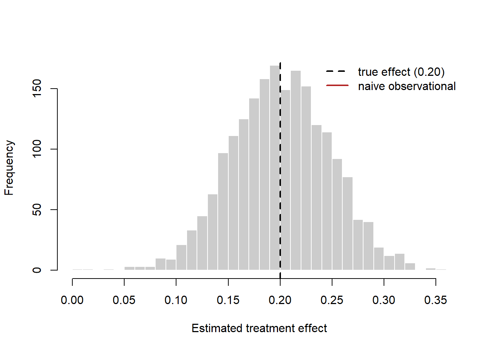
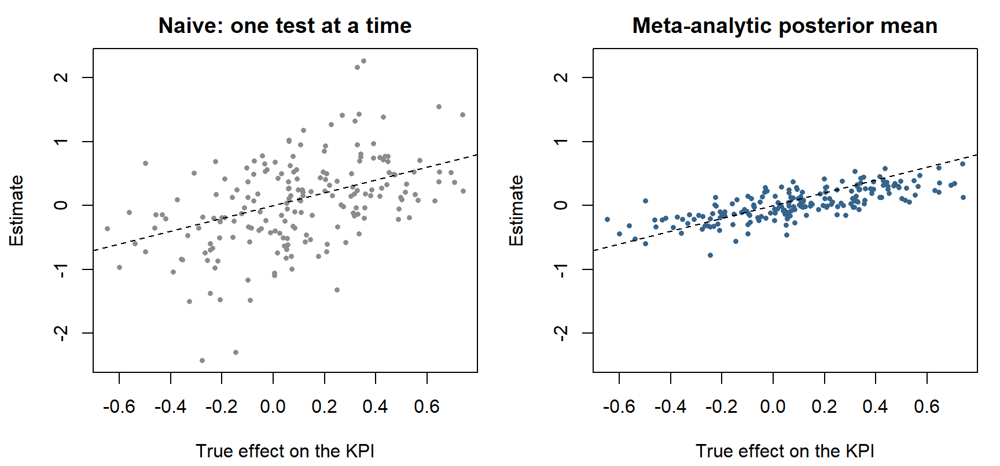
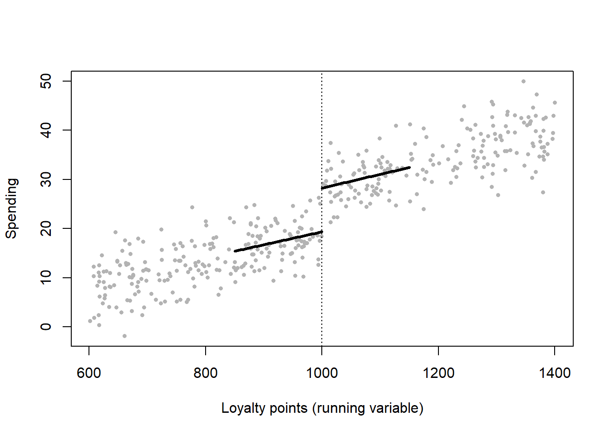
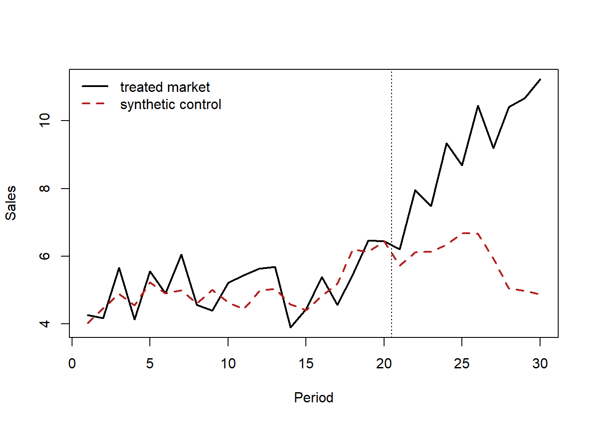
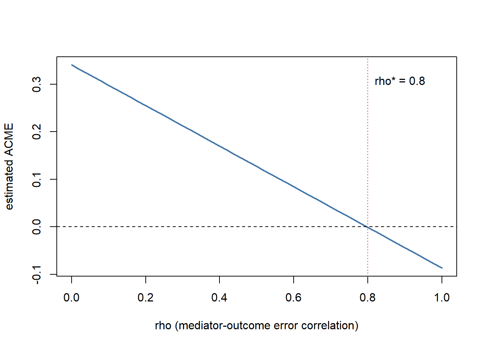

flowchart TD
A["<b>Randomized experiment / A-B test</b><br/>assignment independent of potential outcomes<br/>[ATE, by design]"]
B["<b>Regression discontinuity</b><br/>treatment jumps at a known cutoff<br/>[local ATE at the cutoff]"]
C["<b>Instrumental variables</b><br/>an exogenous shifter of treatment<br/>[LATE: effect on compliers]"]
D["<b>Difference-in-differences</b><br/>parallel trends absent treatment<br/>[ATT]"]
E["<b>Synthetic control</b><br/>weighted donors reproduce the counterfactual<br/>[ATT for one treated unit]"]
A --> B --> C --> D --> E
style A fill:#1b7837,color:#fff
style B fill:#5aae61,color:#fff
style C fill:#a6dba0,color:#000
style D fill:#d9f0d3,color:#000
style E fill:#f7f7f7,color:#000
44 Causal Inference and Field Experiments
Marketing decisions are causal claims in disguise. “Spend another dollar on search advertising and we will earn three” is a statement about a counterfactual world that did not happen—the sales the firm would have realized had it not spent the dollar. A correlation between advertising and sales, however precisely estimated, does not license that statement, because the firm chose how much to advertise, and it chose to advertise more precisely where and when it expected to sell more. The gap between what we measure (an association in observational data) and what we want to know (the effect of an intervention we control) is the central problem of this chapter, and of empirical marketing more broadly.
This chapter develops the modern toolkit for closing that gap. It begins with the potential-outcomes framework, the language in which a causal effect is defined before any estimator is chosen, and shows why the naive comparison of treated and untreated units is biased by selection. It then treats randomized experiments and online A/B tests as the benchmark that solves selection by design, and the four leading quasi-experimental designs—difference-in-differences (DiD), instrumental variables (IV), regression discontinuity (RD), and the synthetic control method (SCM)—as strategies for recovering causal effects when randomization is infeasible. Each method is presented the same way: the intuition first, then the estimator, then the identifying assumptions, and—most important—what breaks identification and how a reader can tell. Throughout, the running applications are the two domains where causal inference has reshaped marketing practice: advertising measurement and pricing.
The stakes are not academic. A decade of large-scale field experiments has shown that observational and even quasi-experimental estimates of advertising’s return can be off not by a few percent but by an order of magnitude, and sometimes carry the wrong sign (Lewis and Rao 2015; Gordon et al. 2019b). A marketing scientist who cannot distinguish a credible causal estimate from an incredible one is a liability to the firm. By the end of this chapter the reader will be able to state the estimand, choose a design, defend its assumptions, implement the estimator in R, and diagnose the most common failures.
44.1 Semester arc
This chapter is organized as a fourteen-week doctoral seminar in causal inference and field experiments, tuned to quantitative-marketing applications—advertising measurement, pricing, promotions, and digital/platform experimentation. The arc matches how the topic is taught in the empirical track of top programs (MIT, Chicago Booth, Stanford GSB, Berkeley, Wharton, Columbia, Kellogg, NYU Stern, and the economics and statistics departments marketing students cross-register into). The single organizing question is what makes the treatment as-good-as-randomly assigned, conditional on what we observe and how we designed the study?
The first third establishes the framework (potential outcomes and the assignment mechanism), the gold standard (randomized experiments and large-scale A/B testing), and the realistic case where randomization is absent (selection on observables, and why regression is not magic). The ordering is deliberate: students internalize the experimental ideal before judging how far an observational design falls short of it. The middle third is a tour of quasi-experimental designs, each motivated by a different source of as-good-as-random variation: instrumental variables, difference-in-differences, regression discontinuity, synthetic control, panel/event-study methods, and matching/weighting. A recurring theme is that the past decade re-litigated the workhorses—most dramatically the two-way fixed-effects DiD estimator, long the default, shown to be badly biased under staggered adoption and heterogeneous effects. The seminar treats this episode as the field’s central methodological cautionary tale: a method can be standard, published thousands of times, and still wrong. The final third turns to the machine-learning and marketing-platform frontier: ML for heterogeneous treatment effects; advertising measurement when effects are tiny relative to sales noise; the experimental designs platforms actually use (ghost ads, PSA holdouts, geo experiments); incrementality, pricing, and targeting-policy evaluation; and the interference/spillover problems that break SUTVA in marketplaces and social networks. The course closes on the question every marketing dissertation must answer: given that the effect is real but small and the platform is non-stationary, what is the credible research design, and can it scale?
The standing textbooks for the whole course are Imbens and Rubin’s Causal Inference for Statistics, Social, and Biomedical Sciences (Cambridge, 2015, the potential-outcomes spine), Angrist and Pischke’s Mostly Harmless Econometrics (Princeton, 2009, the applied quasi-experimental workhorse), Cunningham’s Causal Inference: The Mixtape (Yale, 2021, a modern code-forward synthesis), and Wooldridge’s Econometric Analysis of Cross Section and Panel Data, 2nd ed. (MIT, 2010, the panel/fixed-effects reference). Each weekly module below names its topic, subtopics, methods, key readings (with DOI links and a one-line rationale; foundational works are marked [F], frontier works [R]), and central debate. The detailed derivations, R simulations, and worked marketing examples that follow the weekly map—the potential-outcomes algebra, the A/B-power simulation, the DiD/IV/RD/SCM code, and the design-comparison table—are the seminar’s lab sessions; they are kept intact and cross-referenced from the weeks they support.
44.1.1 Week 1 — Potential Outcomes and the Assignment Mechanism
Topic. [F] The Neyman–Rubin potential-outcomes model as the language in which a causal effect is defined before any estimator is chosen.
Subtopics. The fundamental problem of causal inference; SUTVA; the estimands (ATE, ATT, CATE); the assignment mechanism as the central object; “no causation without manipulation”; causal versus predictive questions.
Methods. Writing an estimand precisely; distinguishing estimand / identification / estimation / inference; recognizing when a question is causal versus descriptive. Worked algebra in Section 44.2 below.
Key readings.
- Rubin, D. B. (1974). “Estimating Causal Effects of Treatments in Randomized and Nonrandomized Studies.” Journal of Educational Psychology 66(5), 688–701. doi:10.1037/h0037350 — [F] the founding statement of the potential-outcomes framework.
- Holland, P. W. (1986). “Statistics and Causal Inference.” Journal of the American Statistical Association 81(396), 945–960. doi:10.1080/01621459.1986.10478354 — [F] formalizes the framework and the “no causation without manipulation” doctrine; the field’s conceptual touchstone.
- Imbens, G. W. & Rubin, D. B. (2015). Causal Inference for Statistics, Social, and Biomedical Sciences, Part I. Cambridge University Press (book) — [F] potential outcomes and the assignment mechanism, in book length.
Debate. Is “manipulation” required for causality (what of immutable characteristics)? ATE versus ATT versus policy-relevant estimands; design-based versus model-based inference.
Controversy: the fast-food study that made design-based inference respectable
Marketing’s causal-inference toolkit is borrowed almost entirely from economics, and it was forged in a public argument worth knowing, because the moves both sides made are the moves a referee will make about your identification strategy.
1994 — the natural experiment. Card and Krueger study employment at fast-food restaurants either side of the New Jersey–Pennsylvania border after New Jersey raised its minimum wage, and report no employment loss—against a strong theoretical prior that it should fall.1 The design is the point: a policy boundary supplies the comparison, rather than a functional form.
2000 — the data are attacked, not the logic. Neumark and Wascher (2000) reanalyze the question using payroll records rather than the original telephone survey, and report results pointing the other way. The critique is aimed squarely at measurement: if your outcome is self-reported employment collected by phone, your finding is only as good as that instrument.
2000 — the reply, same issue. Card and Krueger (2000) respond with a further data source and maintain the original conclusion, while conceding what the payroll data do and do not show.
Why it belongs in this chapter. Notice where the argument went. Nobody disputed that a border discontinuity, if the data are sound, identifies something interpretable. The fight moved immediately to measurement—which is where design-based disputes almost always end up once the design itself is credible. That is the standard your own difference-in-differences will be held to (Section 44.1.5): a referee who accepts your design will then ask where your outcome variable came from, and “the platform’s dashboard” is an answer with the same structure as “a telephone survey.”
44.1.2 Week 2 — Randomized Experiments and A/B Testing at Scale
Topic. [F]→[R] Randomization as the assignment mechanism that identifies the ATE, scaled up to industrial web experimentation.
Subtopics. Fisher’s sharp null and randomization inference versus Neyman’s repeated-sampling inference; covariate balance, stratification, and blocking; CUPED-style variance reduction; the engineering of web experimentation, sample-ratio mismatch, peeking/optional stopping, and the experimentation platform as an organizational artifact.
Methods. Running Fisherian permutation tests; computing Neyman variance; designing stratified/clustered assignment; variance reduction; diagnosing sample-ratio mismatch. Lab: the A/B-power simulation in Section 44.3 below (Figure 44.3).
Key readings.
- Kohavi, R., Longbotham, R., Sommerfield, D. & Henne, R. M. (2009). “Controlled Experiments on the Web: Survey and Practical Guide.” Data Mining and Knowledge Discovery 18(1), 140–181. doi:10.1007/s10618-008-0114-1 — [R] the practitioner canon for industrial-scale A/B testing; the pitfalls students will actually hit.
- Bojinov, I. & Shephard, N. (2019). “Time Series Experiments and Causal Estimands: Exact Randomization Tests and Trading.” Journal of the American Statistical Association 114(528), 1665–1682. doi:10.1080/01621459.2018.1527225 — [R] extends design-based randomization inference to single-unit, switchback-style time-series experiments (directly relevant to one-market pricing/ad tests).
- Imbens, G. W. & Rubin, D. B. (2015). Causal Inference…, Part II. Cambridge University Press (book) — [F] classical randomized experiments; Fisher and Neyman inference.
- Huch, E., Nail, S. A., Melconian, T., Vongsathorn, X. & Feinberg, F. (2026). “Overall Evaluation Criteria for A/B Tests: A Meta-Analytic Approach.” Marketing Science, published online ahead of print. doi:10.1287/mksc.2025.0164 — [R] pools an archive of experiments to estimate each test’s long-run effect from short-run metrics; method and replication in Section 44.4.
Debate. Fisher versus Neyman inference; fixed-horizon versus sequential/always-valid testing; how much can web A/B testing actually learn given non-stationarity and short windows?
44.1.3 Week 3 — Regression and Selection on Observables
Topic. [F] The conditional-independence (unconfoundedness) assumption and what regression actually estimates under it.
Subtopics. Regression as a weighting/comparison estimator and what it estimates under heterogeneity; “bad controls” and collider bias; the overlap/common-support condition; omitted-variable bias and sensitivity.
Methods. Specifying a credible conditioning set; drawing causal DAGs to spot bad controls and colliders; checking overlap; OVB sensitivity bounds. The selection-bias decomposition is derived in Section 44.2.1 below, and Section 44.10 works an Oster bound on published numbers.
Controversy: can matching recover an experimental answer?
This is the single most relevant economics dispute for anyone doing marketing attribution, because it is the same question in different clothes: when you have observational data and a conditioning set, can you recover what a randomized experiment would have found?
1986 — the benchmark, and the bad news. LaLonde takes a randomized job-training experiment, discards the experimental control group, substitutes non-experimental comparison groups drawn from survey data, and applies the econometric estimators of the day.2 They do not recover the experimental answer. The estimates vary widely with specification and comparison group, and an analyst without the experimental benchmark would have had no way to know which was right.
1999 — the optimistic reassessment. Dehejia and Wahba (1999) revisit the same data with propensity-score methods and report that, with careful matching and attention to overlap, the experimental estimate can be recovered. This result is enormously influential and is a large part of why propensity-score matching spread across the applied social sciences.
2005 — the qualification. Smith and Todd (2005) ask, in their title, Does Matching Overcome LaLonde’s Critique of Nonexperimental Estimators? Their answer is: not robustly. The favorable results are sensitive to the particular sample and specification choices, and the performance degrades when those choices vary.
What survives, and what it means for attribution. The defensible reading is that matching helps when the comparison group is drawn from the same population, faces the same environment, and is compared on rich pre-treatment covariates including the outcome’s own history—and is unreliable otherwise. Notice that this is the same conclusion the advertising literature reached independently (Chapter 14): observational methods benchmarked against experiments diverge, and not with a constant bias one could correct. Two literatures, thirty years apart, arriving at the same place is worth more than either alone.
Key readings.
- Athey, S. & Imbens, G. W. (2017). “The State of Applied Econometrics: Causality and Policy Evaluation.” Journal of Economic Perspectives 31(2), 3–32. doi:10.1257/jep.31.2.3 — [R] the modern map of identification strategies and where selection-on-observables sits among them; assigned as the course’s strategic overview.
- Angrist, J. D. & Pischke, J.-S. (2009). Mostly Harmless Econometrics, ch. 3. Princeton University Press (book) — [F] regression and the conditional-independence assumption; the “bad control” problem.
- Imbens, G. W. & Rubin, D. B. (2015). Causal Inference…, Part III. Cambridge University Press (book) — [F] unconfoundedness and regression.
Debate. When is “control for everything” self-defeating? How much faith can selection-on-observables ever earn without a design?
44.1.4 Week 4 — Instrumental Variables
Topic. [F] Recovering causal effects from an exogenous shifter of an endogenous treatment.
Subtopics. The IV/2SLS estimator; the LATE theorem and the monotonicity/exclusion/relevance assumptions; compliers and what LATE is the effect for; weak instruments; judge/examiner and shift-share designs; IV in marketing (price endogeneity, demand estimation).
Methods. 2SLS and its LATE interpretation; first-stage F / weak-IV diagnostics; reasoning about exclusion and monotonicity in a real application. Lab: the demand-estimation IV simulation in Section 44.6 below.
Key readings.
- Imbens, G. W. & Angrist, J. D. (1994). “Identification and Estimation of Local Average Treatment Effects.” Econometrica 62(2), 467–475. doi:10.2307/2951620 — [F] the LATE theorem; redefines what IV identifies under heterogeneity.
- Angrist, J. D., Imbens, G. W. & Rubin, D. B. (1996). “Identification of Causal Effects Using Instrumental Variables.” Journal of the American Statistical Association 91(434), 444–455. doi:10.1080/01621459.1996.10476902 — [F] embeds IV in potential outcomes; the canonical compliers/defiers exposition.
- Angrist, J. D. & Pischke, J.-S. (2009). Mostly Harmless Econometrics, ch. 4. Princeton University Press (book) — [F] applied IV and weak-instrument diagnostics.
Debate. Is LATE a “policy-relevant” estimand or an artifact of the instrument? Are most instruments’ exclusion restrictions defensible?
44.1.5 Week 5 — Difference-in-Differences I: Foundations and the 2×2
Topic. [F] The canonical 2×2 DiD and the parallel-trends assumption.
Subtopics. Event-study/pre-trend plots; clustered and serially correlated standard errors; placebo and pre-trend tests; DiD for marketing launches, entry, and policy/regulatory shocks.
Methods. Building event-study plots; testing parallel pre-trends; clustering and wild-cluster bootstrap; placebo tests. Lab: the DiD panel simulation in Section 44.5 below.
Key readings.
- Bertrand, M., Duflo, E. & Mullainathan, S. (2004). “How Much Should We Trust Differences-in-Differences Estimates?” The Quarterly Journal of Economics 119(1), 249–275. doi:10.1162/003355304772839588 — [F] exposes serial-correlation underestimation of DiD standard errors; the inference cautionary tale.
- Card, D. & Krueger, A. B. (2000). “Minimum Wages and Employment: A Case Study of the Fast-Food Industry in New Jersey and Pennsylvania: Reply.” American Economic Review 90(5), 1397–1420. doi:10.1257/aer.90.5.1397 — [F] the verified record for the canonical minimum-wage DiD program; the design that made DiD a default tool. (The original Card & Krueger 1994 AER article is (DOI to verify).)
- Angrist, J. D. & Pischke, J.-S. (2009). Mostly Harmless Econometrics, ch. 5. Princeton University Press (book) — [F] DiD and fixed effects, the classical treatment.
Debate. Is parallel trends testable, or only falsifiable on pre-periods? How much should inference (not point estimates) drive DiD credibility?
44.1.6 Week 6 — Difference-in-Differences II: Staggered Adoption and the TWFE Critique
Topic. [R] The field’s central recent methodological episode: why two-way fixed-effects DiD is biased under staggered timing and heterogeneous effects, and the family of robust estimators that replaced it.
Subtopics. “Forbidden comparisons” and negative weights; decomposition diagnostics; the new robust estimators (group-time ATTs, interaction-weighted event studies, imputation); choosing among them; honest pre-trends.
Methods. Running Goodman-Bacon decompositions; estimating the Callaway–Sant’Anna, Sun–Abraham, and Borusyak–Jaravel–Spiess estimators and reconciling them; honest pre-trend (HonestDiD-style) sensitivity. The TWFE failure is introduced in the DiD discussion at Section 44.5.
Key readings.
Goodman-Bacon, A. (2021). “Difference-in-Differences with Variation in Treatment Timing.” Journal of Econometrics 225(2), 254–277. doi:10.1016/j.jeconom.2021.03.014 — [R] the decomposition showing TWFE is a weighted average of all 2×2s, including “forbidden” already-treated comparisons.
de Chaisemartin, C. & d’Haultfœuille, X. (2020). “Two-Way Fixed Effects Estimators with Heterogeneous Treatment Effects.” American Economic Review 110(9), 2964–2996. doi:10.1257/aer.20181169 — [R] proves TWFE can put negative weights on treatment effects; offers a robust alternative.
Callaway, B. & Sant’Anna, P. H. C. (2021). “Difference-in-Differences with Multiple Time Periods.” Journal of Econometrics 225(2), 200–230. doi:10.1016/j.jeconom.2020.12.001 — [R] the group-time ATT estimator that is now a default robust DiD.
Sun, L. & Abraham, S. (2021). “Estimating Dynamic Treatment Effects in Event Studies with Heterogeneous Treatment Effects.” Journal of Econometrics 225(2), 175–199. doi:10.1016/j.jeconom.2020.09.006 — [R] fixes contamination of event-study coefficients; the interaction-weighted estimator.
Borusyak, K., Jaravel, X. & Spiess, J. (2024). “Revisiting Event-Study Designs: Robust and Efficient Estimation.” Review of Economic Studies 92(5), 3253–3285. doi:10.1093/restud/rdae007 — [R] the imputation (efficient) estimator and a unifying view of event-study designs.
Roth, J., Sant’Anna, P. H. C., Bilinski, A. & Poe, J. (2023). “What’s Trending in Difference-in-Differences? A Synthesis of the Recent Econometrics Literature.” Journal of Econometrics 235(2), 2218–2244. doi:10.1016/j.jeconom.2023.03.008 — [R] the synthesis/decision guide assigned as the week’s anchor.
Liu, Q., Jiang, S., Qiu, L. & Huo, B. (2026). “Platform Competition and Adoption Heterogeneity: How Dockless Bike Sharing Shapes Urban Air Quality.” Production and Operations Management. doi:10.1177/10591478261472202 — [F] an applied stacked-DiD design over a staggered two-firm rollout, in which the average effect is entirely driven by one market structure (worked through at Section 70.7.1).
-
Chan, K. W., Wetzel, H. A., Pupovac, L., Dekimpe, M. G. & Loske, D. (2026). “EV Charging Availability and Grocery Store Performance.” Journal of Marketing Research. doi:10.1177/00222437261491290 — [F] Callaway–Sant’Anna estimates for chargers that reached 42 of 332 supermarkets in different months, after a Goodman-Bacon decomposition finds a 10% negative-weighting bias in two-way fixed effects; the robustness ladder (late adopters as controls, stacked synthetic-control DiD, catchment radii for SUTVA) is worked through at
Luca, M., Nagaraj, A. & Subramani, G. (2026). “Getting on the Map: The Impact of Online Listings on Business Performance.” Management Science 72(10), 9199–9214. doi:10.1287/mnsc.2024.04716 — [F] Gardner’s two-stage imputation estimator on an unbalanced establishment panel of public tax receipts. Two-way fixed effects give about half the two-stage estimate in the bulk-import sample. Section 33.8 re-runs the design on the public data with planted listing dates, to show which threats the estimator handles and which it cannot.
-
Seo, E. & Dinkel, C. P. (2026). “Knowledge Protection and Modularity of Innovation Activities in Firms: Evidence from US Trade Secrecy Law.” Strategic Management Journal 47(12), 3227–3252. doi:10.1002/smj.70125 — [F] a continuous state policy index and a binary enactment dummy run side by side, with TWFE, stacked, and Callaway–Sant’Anna estimates and a network-level outcome; worked through at
Debate. Which robust estimator, when? Is the efficient imputation estimator’s stronger modeling worth it? How much published DiD work is invalidated? When a staggered rollout involves two competing entrants, is the estimand of interest the effect of entry, or the effect of the market structure that entry produces?
44.1.7 Week 7 — Regression Discontinuity Designs
Topic. [F]→[R] Identifying the local effect at a known assignment threshold, with modern robust inference.
Subtopics. Sharp and fuzzy RDD; continuity-based versus local-randomization views; bandwidth/kernel choice and the bias–variance tradeoff; manipulation/sorting tests (density discontinuity); RDD in marketing (loyalty-tier thresholds, ad-auction reserve prices, eligibility cutoffs).
Methods. Local-polynomial estimation; MSE-optimal and CER-optimal bandwidths; density (McCrary-style) manipulation tests; placebo cutoffs. Lab: the loyalty-tier RD simulation in Section 44.7 below (Figure 44.11).
Key readings.
- Imbens, G. W. & Lemieux, T. (2008). “Regression Discontinuity Designs: A Guide to Practice.” Journal of Econometrics 142(2), 615–635. doi:10.1016/j.jeconom.2007.05.001 — [F] the practitioner’s guide that standardized RDD practice.
- Calonico, S., Cattaneo, M. D. & Titiunik, R. (2014). “Robust Nonparametric Confidence Intervals for Regression-Discontinuity Designs.” Econometrica 82(6), 2295–2326. doi:10.3982/ecta11757 — [R] robust bias-corrected inference and data-driven bandwidths; the modern default.
- Liu, S., Zhang, F., Wang, J. & Gao, B. (2026). “From Winning to Giving: The Effect of Gold Medals in Crowdsourcing Contests.” Management Science, published online ahead of print. doi:10.1287/mnsc.2024.07419 — [R] three medal cutoffs on a Kaggle leaderboard; estimates that drift with bandwidth, a local-randomization check and a surprise-award placebo, worked through at Section 44.7.4.
Debate. Continuity versus local-randomization framing; how local is “local,” and external validity at the cutoff; robustness to bandwidth.
44.1.8 Week 8 — Synthetic Control
Topic. [F]→[R] Constructing a single treated unit’s counterfactual from a weighted average of donors.
Subtopics. The synthetic-control estimator as a data-driven weighted comparison; placebo/permutation inference; pre-treatment fit and donor-pool selection; extensions—generalized synthetic control (interactive fixed effects), synthetic DiD, and Bayesian structural-time-series “CausalImpact” (geo/ad applications).
Methods. Constructing donor pools and weights; permutation/placebo inference; choosing among SC / synthetic DiD / gsynth / CausalImpact for a marketing case. Lab: the single-market SCM simulation in Section 44.8 below (Figure 44.12).
Key readings.
- Abadie, A., Diamond, A. & Hainmueller, J. (2010). “Synthetic Control Methods for Comparative Case Studies: Estimating the Effect of California’s Tobacco Control Program.” Journal of the American Statistical Association 105(490), 493–505. doi:10.1198/jasa.2009.ap08746 — [F] the canonical synthetic-control method and placebo inference.
- Abadie, A. (2021). “Using Synthetic Controls: Feasibility, Data Requirements, and Methodological Aspects.” Journal of Economic Literature 59(2), 391–425. doi:10.1257/jel.20191450 — [F] the authoritative how-to/when-not-to review.
- Arkhangelsky, D., Athey, S., Hirshberg, D. A., Imbens, G. W. & Wager, S. (2021). “Synthetic Difference-in-Differences.” American Economic Review 111(12), 4088–4118. doi:10.1257/aer.20190159 — [R] unifies SC and DiD; the frontier estimator for panel comparisons.
- Xu, Y. (2017). “Generalized Synthetic Control Method: Causal Inference with Interactive Fixed Effects Models.” Political Analysis 25(1), 57–76. doi:10.1017/pan.2016.2 — [R] the SC ⇄ factor-model bridge for multiple treated units.
- Brodersen, K. H., Gallusser, F., Koehler, J., Remy, N. & Scott, S. L. (2015). “Inferring Causal Impact Using Bayesian Structural Time-Series Models.” The Annals of Applied Statistics 9(1), 247–274. doi:10.1214/14-aoas788 — [R] the “CausalImpact” approach used widely for ad/geo impact at platforms.
- Li, S., Bassamboo, A. & Lariviere, M. A. (2026). “Proximity Matters: The Impact of Urgent Care Centers on Emergency Department Arrivals.” Production and Operations Management 35(12), 4203–4222. doi:10.1177/10591478261468124 — [F] generalized synthetic control alongside difference-in-differences, with identification from operating-hour policies that switch the treatment on and off within the day; worked through at Section 23.11.3.
- Hou, Y. (2026). “Accommodation in the Vertical Supply Chain: Implications of Manufacturer Dual Tracking.” Strategic Management Journal 47(13), 3382–3408. doi:10.1002/smj.70123 — [F] synthetic difference-in-differences reported beside a DiD whose event studies show pre-trends; the two estimators differ by up to a factor of four on the same outcome; worked through at Section 44.8.1.
Debate. Is placebo inference valid with few units? Convex-weight restriction versus regression-based panel methods; overfitting pre-treatment fit.
44.1.9 Week 9 — Panel and Event-Study Methods
Topic. [F]→[R] The causal content of fixed-effects and event-study panel estimators, and the design-based view of panel experiments.
Subtopics. Fixed-effects and first-difference estimators and their causal content; event-study specification and dynamic treatment effects; the finite-population, design-based view of panel/switchback experiments; matrix-completion / factor approaches; serial-correlation-robust inference.
Methods. Specifying dynamic event studies correctly (cf. Week 6); design-based versus model-based panel inference; matrix-completion estimation. Connects to the TWFE specification at Section 44.5.
Key readings.
- Bojinov, I., Rambachan, A. & Shephard, N. (2021). “Panel Experiments and Dynamic Causal Effects: A Finite Population Perspective.” Quantitative Economics 12(4), 1171–1196. doi:10.3982/qe1744 — [R] design-based estimands for panel/switchback experiments; ties experiments to event studies (directly relevant to platform rollouts).
- Athey, S. & Imbens, G. W. (2017). “The State of Applied Econometrics: Causality and Policy Evaluation.” Journal of Economic Perspectives 31(2), 3–32. doi:10.1257/jep.31.2.3 — [R] situates panel/matrix-completion approaches within the broader toolkit (read here for the panel sections; reprised from Week 3).
- Wooldridge, J. M. (2010). Econometric Analysis of Cross Section and Panel Data, 2nd ed., panel chapters. MIT Press (book) — [F] the FE/FD reference treatment.
Debate. When is FE identifying a causal effect versus an artifact? Design-based versus model-based panel inference; overlap with the staggered-DiD literature.
44.1.10 Week 10 — Matching and Weighting
Topic. [F]→[R] Balancing observables via the propensity score, up to high-dimensional balancing.
Subtopics. The propensity score and its balancing property; matching, subclassification, and inverse-propensity weighting; doubly-robust / AIPW estimation; covariate-balancing and entropy/approximate-residual balancing in high dimensions; observational ad-effect estimation and its failure modes.
Methods. Estimating and diagnosing propensity scores; assessing overlap and balance; AIPW/doubly-robust estimation; balancing weights. Motivated by the observational-versus-experimental ad-measurement evidence at Section 44.3.1.
Key readings.
- Rosenbaum, P. R. & Rubin, D. B. (1983). “The Central Role of the Propensity Score in Observational Studies for Causal Effects.” Biometrika 70(1), 41–55. doi:10.1093/biomet/70.1.41 — [F] defines the propensity score and the balancing theorem.
- Hirano, K., Imbens, G. W. & Ridder, G. (2003). “Efficient Estimation of Average Treatment Effects Using the Estimated Propensity Score.” Econometrica 71(4), 1161–1189. doi:10.1111/1468-0262.00442 — [F] efficient IPW; why the estimated score helps.
- Abadie, A. & Imbens, G. W. (2016). “Matching on the Estimated Propensity Score.” Econometrica 84(2), 781–807. doi:10.3982/ecta11293 — [R] correct inference for propensity-score matching (a long-standing error).
- Athey, S., Imbens, G. W. & Wager, S. (2018). “Approximate Residual Balancing: Debiased Inference of Average Treatment Effects in High Dimensions.” Journal of the Royal Statistical Society Series B 80(4), 597–623. doi:10.1111/rssb.12268 — [R] frontier balancing for many covariates; bridges to ML (Week 11).
- Rossi, M. & Schleef, F. (2026). “Quality Disclosures and Disappointment: Evidence from the Academy Nominations.” Management Science 72(11), 9274–9297. doi:10.1287/mnsc.2024.09016 — [R] propensity-score matching on user embeddings from a recommender trained only on pre-treatment ratings, with the recommender’s predicted rating as a placebo outcome; worked through at Section 4.4.1.
- Poelhekke, S., Vlahu, R. & Volosovych, V. (2026). “Corporate Acquisitions and Bank Relationships.” Management Science 72(11), 9342–9367. doi:10.1287/mnsc.2023.04231 — [R] coarsened exact matching combined with a first-difference DiD, with exact matching on the lagged outcome and three matched samples of increasing strictness; discussed at Section 44.5.
Debate. Matching versus weighting versus doubly-robust; can balancing ever substitute for a design? The “propensity-score paradox” (over-trimming).
44.1.11 Week 11 — Machine Learning for Heterogeneous Treatment Effects
Topic. [R] Estimating the CATE and learning targeting policies with modern ML.
Subtopics. The CATE and policy learning; causal trees/forests and honest splitting; double/debiased ML (Neyman-orthogonal moments, cross-fitting); generalized random forests; targeting and best-linear-projection summaries of heterogeneity.
Methods. Fitting causal forests / DML with cross-fitting; estimating CATEs and the best-linear-projection of the CATE; constructing and validating targeting policies. The CATE estimand is defined at Section 44.2.
Key readings.
- Athey, S. & Imbens, G. (2016). “Recursive Partitioning for Heterogeneous Causal Effects.” Proceedings of the National Academy of Sciences 113(27), 7353–7360. doi:10.1073/pnas.1510489113 — [F] the “causal tree” with honest estimation; foundation of the HTE-by-ML program.
- Wager, S. & Athey, S. (2018). “Estimation and Inference of Heterogeneous Treatment Effects Using Random Forests.” Journal of the American Statistical Association 113(523), 1228–1242. doi:10.1080/01621459.2017.1319839 — [R] causal forests with valid pointwise confidence intervals.
- Athey, S., Tibshirani, J. & Wager, S. (2019). “Generalized Random Forests.” The Annals of Statistics 47(2), 1148–1178. doi:10.1214/18-aos1709 — [R] the general forest-as-local-estimator framework behind
grf. - Chernozhukov, V., Chetverikov, D., Demirer, M., Duflo, E., Hansen, C., Newey, W. & Robins, J. (2018). “Double/Debiased Machine Learning for Treatment and Structural Parameters.” The Econometrics Journal 21(1), C1–C68. doi:10.1111/ectj.12097 — [R] orthogonalization plus cross-fitting; the dominant ML-for-causal-inference recipe.
- Athey, S. & Imbens, G. W. (2019). “Machine Learning Methods That Economists Should Know About.” Annual Review of Economics 11, 685–725. doi:10.1146/annurev-economics-080217-053433 — [R] the survey assigned as the week’s bridge from prediction to causal ML.
Debate. Inference after model selection; do flexible HTE estimates replicate? Heterogeneity discovery versus confirmatory testing; orthogonality versus plug-in bias.
44.1.12 Week 12 — Platforms and Marketing I: Advertising Measurement
Topic. [R] The marketing-specific core: measuring advertising effects when they are tiny relative to sales variance.
Subtopics. The “unfavorable economics” of ad measurement; intent-to-treat designs, PSA/holdout controls, and ghost ads; selection/endogeneity in ad delivery; experiments versus observational methods for ad ROI; advertising-as-signal measured experimentally.
Methods. Powering ad experiments and MDE calculations; ITT versus exposure effects and the ghost-ad/PSA logic; benchmarking observational estimators against RCTs. Worked motivation in Section 44.3.1 below.
Key readings.
- Lewis, R. A. & Rao, J. M. (2015). “The Unfavorable Economics of Measuring the Returns to Advertising.” The Quarterly Journal of Economics 130(4), 1941–1973. doi:10.1093/qje/qjv023 — [F] shows even huge experiments struggle to detect ad effects; sets the statistical-power agenda for the field (Lewis and Rao 2015).
- Johnson, G. A., Lewis, R. A. & Nubbemeyer, E. I. (2017). “Ghost Ads: Improving the Economics of Measuring Online Ad Effectiveness.” Journal of Marketing Research 54(6), 867–884. doi:10.1509/jmr.15.0297 — [R] the ghost-ads design: a clean, low-cost counterfactual for would-be-exposed users (Johnson, Friend, and Lee 2017).
- Gordon, B. R., Zettelmeyer, F., Bhargava, N. & Chapsky, D. (2019). “A Comparison of Approaches to Advertising Measurement: Evidence from Big Field Experiments at Facebook.” Marketing Science 38(2), 193–225. doi:10.1287/mksc.2018.1135 — [R] observational methods badly mismeasure ad lift versus RCT benchmarks (Gordon et al. 2019b).
- Gordon, B. R., Moakler, R. & Zettelmeyer, F. (2023). “Close Enough? A Large-Scale Exploration of Non-Experimental Approaches to Advertising Measurement.” Marketing Science 42(4), 768–793. doi:10.1287/mksc.2022.1413 — [R] when (rarely) observational ad measurement gets “close enough.”
- Gordon, B. R., Moakler, R. & Zettelmeyer, F. (2026). “Predicted Incrementality by Experimentation for Ad Measurement.” Management Science, published online ahead of print. doi:10.1287/mnsc.2023.01108 — [R] turns a library of RCTs into training labels for predicting the lift of campaigns that were never tested; worked through and replicated in Section 14.4.
- Sahni, N. S., Zou, D. & Chintagunta, P. K. (2017). “Do Targeted Discount Offers Serve as Advertising? Evidence from 70 Field Experiments.” Management Science 63(8), 2688–2705. doi:10.1287/mnsc.2016.2450 — [R] promotions carry advertising-like (information) effects beyond redemption; bridges to Week 13.
Debate. Can advertising ROI ever be measured precisely enough to manage? Are platform-run experiments trustworthy and replicable? Lift versus attribution.
44.1.13 Week 13 — Platforms and Marketing II: Incrementality, Geo, and Pricing Experiments
Topic. [R] Measuring incremental lift and evaluating targeting and pricing policies from experiments.
Subtopics. Incrementality versus last-touch attribution; geo experiments and matched-market/synthetic-control designs; pricing field experiments and price-ending effects; coupon/promotion experiments; bandit “learning-and-earning” pricing; targeting-policy evaluation from experiments.
Methods. Designing geo/matched-market experiments and CausalImpact-style readouts (cf. Week 8); incrementality test design; off-policy/targeting-policy evaluation; power for pricing/promo tests.
Key readings.
- Blake, T., Nosko, C. & Tadelis, S. (2015). “Consumer Heterogeneity and Paid Search Effectiveness: A Large-Scale Field Experiment.” Econometrica 83(1), 155–174. doi:10.3982/ecta12423 — [R] eBay’s brand-keyword experiment: paid search was largely non-incremental for known customers; the incrementality cautionary tale (Blake, Nosko, and Tadelis 2015).
- Anderson, E. T. & Simester, D. I. (2003). “Effects of $9 Price Endings on Retail Sales: Evidence from Field Experiments.” Quantitative Marketing and Economics 1(1), 93–110. doi:10.1023/a:1023581927405 — [F] a clean pricing field experiment isolating a behavioral price-ending effect.
- Simester, D., Timoshenko, A. & Zoumpoulis, S. I. (2020). “Efficiently Evaluating Targeting Policies: Improving on Champion vs. Challenger Experiments.” Management Science 66(8), 3412–3424. doi:10.1287/mnsc.2019.3379 — [R] how to evaluate many targeting policies from a single experiment.
- Simester, D., Timoshenko, A. & Zoumpoulis, S. I. (2020). “Targeting Prospective Customers: Robustness of Machine-Learning Methods to Typical Data Challenges.” Management Science 66(6), 2495–2522. doi:10.1287/mnsc.2019.3308 — [R] how ML targeting from experimental data holds up under real data pathologies.
Debate. Geo experiments (few large units, interference) versus user-level randomization; attribution versus incrementality in industry practice; can targeting policies be both learned and validated on the same data?
44.1.14 Week 14 — Interference, Spillovers, and SUTVA Violations
Topic. [R] Synthesis and research craft: causal inference when one unit’s treatment affects another.
Subtopics. SUTVA violations in marketplaces and social networks; partial-interference and exposure-mapping estimands; cluster/graph-cluster randomization to bound bias; the reflection problem and identifying peer/social effects; marketplace equilibrium effects (treatment “cannibalizes” control); research craft—feasible designs under interference, pre-analysis plans, refereeing.
Methods. Specifying exposure mappings; cluster/graph-cluster randomization design; partial-interference estimands; writing a referee report and a pre-analysis plan. SUTVA is introduced at Section 44.2 and revisited in Section 44.12.
Key readings.
- Aronow, P. M. & Samii, C. (2017). “Estimating Average Causal Effects Under General Interference, with Application to a Social Network Experiment.” The Annals of Applied Statistics 11(4), 1912–1947. doi:10.1214/16-aoas1005 — [R] design-based estimation under interference via exposure mappings.
- Sävje, F., Aronow, P. M. & Hudgens, M. G. (2021). “Average Treatment Effects in the Presence of Unknown Interference.” The Annals of Statistics 49(2), 673–701. doi:10.1214/20-aos1973 — [R] what experiments still estimate when interference is present but unmodeled.
- Eckles, D., Karrer, B. & Ugander, J. (2017). “Design and Analysis of Experiments in Networks: Reducing Bias from Interference.” Journal of Causal Inference 5(1),
- doi:10.1515/jci-2015-0021 — [R] graph-cluster randomization to cut interference bias in social/ad experiments.
- Blake, T. & Coey, D. (2014). “Why Marketplace Experimentation Is Harder Than It Seems: The Role of Test-Control Interference.” Proceedings of the Fifteenth ACM Conference on Economics and Computation (EC ’14), 567–582. doi:10.1145/2600057.2602837 — [R] marketplace interference biases naive A/B tests (eBay); the applied motivation.
- Manski, C. F. (1993). “Identification of Endogenous Social Effects: The Reflection Problem.” The Review of Economic Studies 60(3), 531–542. doi:10.2307/2298123 — [F] the foundational impossibility result for separating endogenous from contextual peer effects.
Debate. When does interference bias dominate, and is cluster randomization worth the power loss? Can peer effects ever be point-identified? How should marketing referee non-replicable platform experiments?
44.2 The Potential-Outcomes Framework
The foundational move of modern causal inference is to define the effect of a treatment for each unit before worrying about how to estimate it. Following the Neyman–Rubin potential-outcomes model, let \(D_i \in \{0,1\}\) denote whether unit \(i\) (a consumer, a store, a geographic market, a designated market area) receives a treatment—an ad campaign, a price cut, a new feature. Associate with each unit two potential outcomes: \(Y_i(1)\), the outcome that would occur under treatment, and \(Y_i(0)\), the outcome that would occur under control. The unit-level treatment effect is their difference,
\[ \tau_i = Y_i(1) - Y_i(0). \tag{44.1}\]
The defining difficulty—the fundamental problem of causal inference—is that for any unit we observe only one potential outcome. The realized outcome is
\[ Y_i = D_i\,Y_i(1) + (1 - D_i)\,Y_i(0), \tag{44.2}\]
so the other potential outcome is a counterfactual that is missing by construction. We never see \(\tau_i\) for any single unit. Causal inference is therefore, at root, a missing-data problem, and progress comes from estimating averages of \(\tau_i\) over populations rather than the unit-level effects themselves.
A causal effect is a comparison of two states of the world that differ only in the treatment: the outcome we observe under the treatment a unit received, and the outcome that same unit would have realized under the treatment it did not receive. Because only one of these is ever observed, every causal estimate rests on an assumption that makes the missing outcome recoverable from the data.
The chief estimand is the average treatment effect (ATE), \(\tau_{\text{ATE}} = \mathbb{E}[Y_i(1) - Y_i(0)]\), the expected effect of moving a randomly chosen unit from control to treatment. Two relatives matter in practice. The average treatment effect on the treated (ATT), \(\tau_{\text{ATT}} = \mathbb{E}[Y_i(1) - Y_i(0) \mid D_i = 1]\), is the effect for the units that actually received treatment—the relevant quantity when asking whether a campaign that ran paid off. The conditional average treatment effect (CATE), \(\tau(\mathbf{x}) = \mathbb{E}[Y_i(1) - Y_i(0) \mid \mathbf{X}_i = \mathbf{x}]\), is the effect for a subpopulation with covariates \(\mathbf{x}\), the target of modern heterogeneous-treatment-effect and targeting methods.3
44.2.1 Why the Naive Comparison Fails
The intuitive estimator of a treatment effect is the difference in mean outcomes between treated and untreated units, \(\hat\Delta = \bar Y_{D=1} - \bar Y_{D=0}\). Decomposing its probability limit exposes exactly why it is biased. Adding and subtracting \(\mathbb{E}[Y_i(0) \mid D_i = 1]\) gives
\[ \underbrace{\mathbb{E}[Y_i \mid D_i = 1] - \mathbb{E}[Y_i \mid D_i = 0]}_{\text{naive difference}} = \underbrace{\tau_{\text{ATT}}}_{\text{causal effect}} + \underbrace{\mathbb{E}[Y_i(0) \mid D_i = 1] - \mathbb{E}[Y_i(0) \mid D_i = 0]}_{\text{selection bias}}. \tag{44.3}\]
The second term is selection bias: the difference in the baseline (untreated) outcome between the groups that did and did not get treated. It is zero only if treated and untreated units would have looked the same absent treatment. In marketing they almost never do. A firm targets ads at consumers already inclined to buy; it cuts prices on products whose demand is already softening; loyal customers self-select into a rewards program. In each case \(\mathbb{E}[Y_i(0) \mid D_i = 1] \neq \mathbb{E}[Y_i(0) \mid D_i = 0]\), and the naive difference confounds the effect of the treatment with the reasons the unit was treated. The remainder of this chapter is a catalogue of designs that drive the selection-bias term to zero—by randomization, or by an assumption that makes the untreated a valid stand-in for the treated counterfactual.
Two assumptions are maintained throughout unless stated otherwise. SUTVA (the stable-unit-treatment-value assumption) requires that one unit’s potential outcomes not depend on other units’ treatment assignments (no interference) and that there be a single version of the treatment. SUTVA is violated by spillovers—a price promotion at one store cannibalizing a neighbor, an ad shown to one household influencing another through word of mouth—which is why experimental units in marketing are often geographies rather than individuals. Overlap (positivity) requires \(0 < \Pr(D_i = 1 \mid \mathbf{X}_i) < 1\) for all covariate values, so that comparable treated and control units exist at every \(\mathbf{x}\). Overlap is often treated as the easy half of strong ignorability, but algorithmic allocation can violate it by design. An ad auction that always awards an impression to the top bidder gives many users a propensity of exactly zero or one. DML and inverse-propensity weighting then recover the effect only for users whose assignment was genuinely random, even though the logged allocation rule makes assignment unconfounded (Rafieian 2026) (see Section 14.5).
Figure 44.1 situates the designs of this chapter on a spectrum from the strongest identification (randomization, where assumptions hold by construction) to designs that buy identification with progressively stronger, untestable assumptions.
44.3 Randomized Experiments and A/B Tests
Randomization is the gold standard because it eliminates selection bias by construction rather than by assumption. If treatment \(D_i\) is assigned independently of the potential outcomes—\(\{Y_i(0), Y_i(1)\} \perp D_i\)—then the untreated group is, in expectation, a valid counterfactual for the treated group: \(\mathbb{E}[Y_i(0) \mid D_i = 1] = \mathbb{E}[Y_i(0) \mid D_i = 0]\). The selection-bias term in Equation 44.3 vanishes, and the difference in means is unbiased for the ATE,
\[ \hat\tau_{\text{ATE}} = \bar Y_{D=1} - \bar Y_{D=0}. \tag{44.4}\]
The identifying assumption—independence of assignment and potential outcomes—holds because the experimenter, not the units, controls \(D_i\). This is the single most important idea in the chapter: randomization does not make treated and control units identical, it makes them exchangeable in expectation, which is all that Equation 44.4 requires.
In the digital economy this logic is operationalized at enormous scale as the A/B test (online controlled experiment): users arriving at a site are randomly bucketed into a control arm seeing the incumbent experience and one or more treatment arms seeing a variant, and a metric—conversion, revenue per session, retention—is compared across arms. The mechanics are simple; the discipline is in the design. Three issues dominate practice.
Power and the minimum detectable effect. An experiment that cannot detect the effect sizes that matter is worse than no experiment, because it invites the fallacy of accepting the null. For a two-arm test of a mean with equal allocation, the sample size per arm needed to detect a true difference \(\delta\) at significance level \(\alpha\) and power \(1-\beta\) is approximately
\[ n \;\approx\; \frac{2\,(z_{1-\alpha/2} + z_{1-\beta})^2\,\sigma^2}{\delta^2}, \tag{44.5}\]
where \(\sigma^2\) is the outcome variance and \(z_p\) the standard-normal quantile. The quadratic dependence on \(\delta\) is the crux of advertising measurement: sales are so volatile relative to advertising’s effect that the required sample is often larger than even large firms can muster, a point developed below.
The randomization unit and interference. When treating a user can affect other users—social spillovers, marketplace competition for the same inventory, supply constraints—unit-level randomization violates SUTVA and biases the estimate. Cluster-randomizing at the level of the interference (markets, regions, social clusters) restores validity at the cost of effective sample size.
Peeking and the validity of the stopping rule. Repeatedly testing a running experiment and stopping the first time \(p < 0.05\) inflates the false-positive rate far above the nominal level. Either fix the sample size in advance, or adopt a sequential procedure (always-valid \(p\)-values, group-sequential boundaries) whose error guarantee survives continuous monitoring.
The following simulation makes the bias-then-fix logic concrete: it first shows that a confounded observational comparison recovers the wrong effect, then that randomization recovers the truth. Figure 44.2 diagrams the two assignment mechanisms the simulation contrasts.
flowchart LR
subgraph OB["Observational assignment"]
PR1["Latent propensity<br/>(buying inclination)"]
D1["Treatment D"]
Y1["Outcome Y"]
PR1 -.-> D1
PR1 -.-> Y1
D1 --> Y1
end
subgraph RC["Randomized assignment"]
RA["Random assignment"]
PR2["Latent propensity<br/>(buying inclination)"]
D2["Treatment D"]
Y2["Outcome Y"]
RA --> D2
PR2 -.-> Y2
D2 --> Y2
end
Code
set.seed(47)
# Data-generating process: a latent 'propensity' drives BOTH self-selection
# into treatment (observationally) AND the baseline outcome -> confounding.
make_population <- function(n, true_tau = 0.20) {
propensity <- rnorm(n) # latent buying inclination
Y0 <- 0.50 + 0.40 * propensity + rnorm(n) # untreated potential outcome
Y1 <- Y0 + true_tau # constant treatment effect
data.frame(propensity, Y0, Y1)
}
# (1) OBSERVATIONAL: high-propensity users self-select into treatment.
n <- 4000
pop <- make_population(n)
D_obs <- as.integer(pop$propensity + rnorm(n) > 0) # selection on propensity
Y_obs <- ifelse(D_obs == 1, pop$Y1, pop$Y0)
naive <- mean(Y_obs[D_obs == 1]) - mean(Y_obs[D_obs == 0])
# (2) RANDOMIZED: assignment independent of potential outcomes.
rct_estimate <- function(n_per_arm = 1000, true_tau = 0.20) {
p <- make_population(2 * n_per_arm, true_tau)
D <- rep(0:1, each = n_per_arm)
D <- sample(D) # random assignment
Y <- ifelse(D == 1, p$Y1, p$Y0)
mean(Y[D == 1]) - mean(Y[D == 0])
}
rct_draws <- replicate(2000, rct_estimate())
cat(sprintf("True effect (ATE): %.3f\n", 0.20))
#> True effect (ATE): 0.200
cat(sprintf("Naive observational estimate: %.3f (biased)\n", naive))
#> Naive observational estimate: 0.737 (biased)
cat(sprintf("Mean of randomized estimates: %.3f (unbiased)\n", mean(rct_draws)))
#> Mean of randomized estimates: 0.201 (unbiased)
hist(rct_draws, breaks = 40, col = "grey80", border = "white",
main = "", xlab = "Estimated treatment effect")
abline(v = 0.20, lwd = 2, lty = 2)
abline(v = naive, lwd = 2, col = "firebrick")
legend("topright", bty = "n",
legend = c("true effect (0.20)", "naive observational"),
lwd = 2, lty = c(2, 1), col = c("black", "firebrick"))
44.3.1 Advertising Measurement: The Hard Case for Experiments
Advertising is the canonical setting where experiments are both essential and difficult. The difficulty is statistical, and Equation 44.5 explains it. The effect of a typical online display campaign on purchase probability is small in absolute terms, while individual purchasing is enormously variable; substituting realistic magnitudes into Equation 44.5 implies that detecting advertising’s true return on investment with confidence can require millions of randomized users—more than many campaigns ever reach (Lewis and Rao 2015). Lewis and Rao show that even well-powered experiments deliver confidence intervals on ROI so wide that firms cannot distinguish a profitable campaign from a money-losing one, and that the observational regressions firms typically run fare far worse.
How much worse is documented by large-scale comparisons. Across digital advertising experiments at scale, observational methods—matching, regression adjustment, propensity scores—routinely yield estimates that diverge sharply from the experimental benchmark, frequently overstating effects by large multiples and occasionally reversing their sign, because no set of observed covariates fully captures why a platform showed a given user a given ad (Gordon et al. 2019b). The lesson is not that observational methods are useless but that, in advertising, the selection-bias term in Equation 44.3 is large relative to the effect itself, so even small failures of the conditional-independence assumption swamp the signal. A recurrent culprit is activity bias: users who are online and active are both more likely to be served (and to “see”) an ad and more likely to convert for reasons unrelated to the ad, manufacturing a spurious correlation that intention-to-treat experimental designs avoid (Lewis, Rao, and Reiley 2011).
These findings reframe the practitioner’s task. The question is rarely “what is the point estimate of ROI?” but “is my experiment powered to answer the decision I face?”—and often the honest answer is to redesign the test (larger, geo-based, or focused on an intermediate outcome) rather than to trust an underpowered or observational number.
A constructive answer to the scaling problem treats each experiment as one labelled observation rather than as a one-off verdict. Gordon, Moakler, and Zettelmeyer (2026) train a model on 2,226 Meta experiments to predict a campaign’s incremental conversions per dollar from campaign aggregates (the test group’s conversion rate, its exposure rate, last-click counts) and apply it to campaigns run without a control group. The features would be bad controls in a user-level causal model, because they are outcomes of the campaign; in a campaign-level prediction model they are legitimate, because the experiments, not the features, carry the identification. The distinction between identifying an effect and predicting one that has already been identified elsewhere is developed, with a replication of the paper’s simulations, in Section 14.4.
44.3.2 Born or Made? Field Data Plus a Randomized Experience Manipulation
Advertising is the case where the selection term in Equation 44.3 swamps the effect. A common marketing variant is subtler: the treatment is an experience the customer chooses, and the question is whether the experience changes later behavior or merely reveals who the customer already was. Kim et al. (2026) pose exactly this question about product customization. In a retailer’s transaction records, customers who customize once are more likely to customize again, and they spend more, visit more often, and buy more items. Write \(D_i = 1\) for “customized at least once” and \(Y_i\) for later customization or spend. The naive contrast then adds the causal effect of the experience to a selection term, \(\mathbb{E}[Y_i(0) \mid D_i = 1] - \mathbb{E}[Y_i(0) \mid D_i = 0]\), which is the difference in later behavior that an inherent taste for customizing would produce even without the experience. Transaction data alone cannot separate “born” customizers from “made” ones.
The paper’s multimethod answer, sketched in Figure 44.4, adds longitudinal experiments that randomize the experience itself. Some participants are assigned to customize and others to choose from a matched set of ready-made products, and later choices are tracked. The matched set is the design detail that matters. Comparing customization with a generic or worse product would mix the effect of the customizing experience with the effect of getting a better-fitting product. Matching the choice set keeps the comparison on the experience. Because assignment is random, the inherent preference is balanced across arms in expectation (the dashed path in the figure no longer reaches treatment), and the difference in later customization identifies the effect of the experience. The authors find that an initial customization experience significantly raises the subsequent likelihood of customizing, with favorable downstream outcomes for customer and retailer, so at least part of the field correlation is a causal journey effect rather than pure sorting.
flowchart LR
subgraph FD["Field transaction data"]
P1["Inherent preference<br/>for customizing"]
C1["First customization<br/>(self-selected)"]
O1["Later customization,<br/>spend, visits"]
P1 -.-> C1
P1 -.-> O1
C1 --> O1
end
subgraph EX["Longitudinal experiment"]
R2["Random assignment:<br/>customize vs matched set"]
P2["Inherent preference<br/>for customizing"]
C2["Customization<br/>experience"]
O2["Later customization"]
R2 --> C2
P2 -.-> O2
C2 --> O2
end
FD --> EX
The design also shows what each half of the evidence buys. The field data supply external validity: real customers, real money, and a nine-year horizon long enough to see repeat behavior. They are weak on identification. The experiments supply identification and are weaker on external validity, because the participants, products, and stakes are the experimenters’ rather than the retailer’s. Neither half alone gives the quantity a retailer most wants, which is how much of the observed customizer premium would appear among customers who customize only because the firm nudged them. That is the question Section 16.8.2 takes up, and the answer depends on how closely the experimental experience matches the field intervention. (Only the published abstract was accessible when this section was written. It does not report the field sample size, how the transaction analysis adjusts for self-selection, or the number and sizes of the experiments, so this description stays at the level of the design logic.)
44.3.3 Policy Lotteries and the Estimand You Actually Want
Not every randomization is run by a researcher. Governments allocate scarce rights by lottery—visas, permits, school seats, subsidy slots—and those lotteries are experiments whose treatment is a policy, which is often the treatment a decision-maker cares about and rarely the one a study estimates. Clemens and Lewis (2026) make the distinction sharply. The dominant identification strategy in their literature instruments for immigrant presence with historical settlement patterns, which identifies a local average treatment effect of varying immigrant supply regardless of current demand. The policy question is different: what happens when a quota binds on firms that want to hire now? That is a policy-relevant treatment effect, and it is recovered by the quota’s own randomization—the H-2B visa lottery—rather than by an instrument built from history.
Three features of the design are worth importing into marketing work whenever an allocation rule contains randomness. The randomization is at the level of the decision-making unit (the firm), not the individual, so the estimates speak to firm-level adjustment rather than to worker-level exposure. Hypotheses, subsample tests, and predicted signs were committed to a pre-analysis plan before data collection, which converts the heterogeneity analysis from exploration into a test. And the outcome data come from a purpose-built survey of winners and losers rather than from whatever administrative file happened to exist, with prespecified checks on item and global nonresponse. Marketing has more of these opportunities than it uses: oversubscribed beta programs, capacity-rationed loyalty perks, lotteried event invitations, and regulator-run license allocations all embed randomization that a firm can exploit without running an experiment of its own. Section 76.5 treats the same paper as a template for writing up a mechanism rather than an average.
The same logic applies when the randomized policy is an enforcement action rather than an allocation. Fan, Guo, and Ke (2026) use China’s randomized pre-IPO on-site inspection program, under which the securities regulator draws a random subset of IPO applicants for intensive inspection of their books, to estimate the causal effect of proactive public enforcement on the financial reporting quality of applicants in a setting with weak institutional oversight. Selected applicants end up with better reporting, largely because inspection screens out firms with questionable disclosures. The larger effect is deterrence: later applicants, who were never drawn, submit higher-quality reports because they might be. The cost is that some firms that would have merited approval are rejected. Two features carry over to marketing settings. Randomizing the point of enforcement identifies the policy-relevant effect of scrutiny itself, free of the targeting that makes ordinary audits uninformative about deterrence, and the deterrence result is a spillover onto untreated units of exactly the kind Chapter 71 warns will contaminate a naive comparison of inspected firms with their uninspected peers. (Only the published abstract was accessible when this section was written; the magnitudes are in the paper.)
Firms run policy experiments too, and the same point about estimands applies. Fang et al. (2026) randomized nearly one million customers of a global e-commerce platform between an AI-decided, returnless partial refund and the standard process of shipping the item back for a full refund. The treatment arm changes three things at once: who decides, whether the item comes back, and how much is refunded. The experiment therefore identifies the effect of the policy as it would be deployed, not the effect of any single component, and the deployment effect is the quantity the platform’s decision turns on. The outcomes are chosen the same way. Refund payouts, processing costs, later purchasing, and strategic claiming each enter the platform’s payoff, and the paper reports all of them rather than a single headline metric (Section 76.5).
44.4 Overall Evaluation Criteria: Learning Across A/B Tests
A single A/B test answers a narrow question well: did this variant move this metric over these two weeks? The decision the firm faces is wider. It wants to know whether the variant raises long-run value, and the metrics that measure long-run value (six-month revenue, retention, closed transactions) are slow and noisy, while the metrics that are fast and precise (clicks, form fills, sessions) are only proxies. Practitioners resolve the tension with an overall evaluation criterion (OEC): one number, built from short-run metrics, that is supposed to track long-run value (Kohavi, Tang, and Xu 2020). In most firms the OEC is a weighted sum whose weights were negotiated in a meeting.
Huch et al. (2026) replace the meeting with a model. Their observation is that a firm that has run hundreds of experiments already owns the data needed to learn how short-run effects map to long-run effects: every past test whose long-run outcome has matured is one observation on that mapping. The method is a multivariate random-effects meta-analysis, the tool biostatisticians built to validate surrogate endpoints in clinical trials (DerSimonian and Laird 1986; Buyse et al. 2000), applied to an archive of A/B tests. It needs only two summaries per test, a vector of effect estimates and its covariance matrix, and it returns for every test, finished or still running, a posterior distribution for the long-run effect. This section sets out the full method, reports what the authors find in 190 tests at Zillow, and replicates the estimators in R.
44.4.1 Setup: what the archive must contain
Index past experiments by \(t = 1, \dots, T\). Each test reports a vector of estimated treatment effects on \(p\) metrics, \(\mathbf z_t \in \mathbb R^p\), together with an estimate of its sampling covariance \(\boldsymbol\Sigma_t\). With a difference in means, \(\mathbf z_t = \bar{\mathbf m}_{t1} - \bar{\mathbf m}_{t0}\) and \(\boldsymbol\Sigma_t = \mathbf S_{t1}/n_{t1} + \mathbf S_{t0}/n_{t0}\), where \(\mathbf S_{ta}\) is the sample covariance matrix of the metrics in arm \(a\). Any estimator will do, including a covariate-adjusted one such as CUPED (Deng et al. 2013), as long as two conditions hold. The estimate must be approximately Gaussian around the true effect vector \(\boldsymbol\mu_t\), and the covariance estimate must be consistent, so that it can be treated as known:
\[ \mathbf z_t \mid \boldsymbol\mu_t \;\sim\; \mathcal N\!\left(\boldsymbol\mu_t, \boldsymbol\Sigma_t\right). \tag{44.6}\]
The only new bookkeeping relative to standard practice is the off-diagonal part of \(\boldsymbol\Sigma_t\). A platform that analyzes one metric at a time already computes the diagonal; the method also needs the covariances between metrics, and it needs metric definitions and measurement windows that are the same across tests. In the Zillow application these summaries shrink the data from billions of customer-level rows to a few hundred.
Split the metrics into two groups, \(\mathbf z_t = (\mathbf y_t^\top, \mathbf x_t^\top)^\top\), with true effects \(\boldsymbol\mu_t = (\boldsymbol\mu_{yt}^\top, \boldsymbol\mu_{xt}^\top)^\top\). The \(r\) metrics in \(\mathbf y_t\) are the key performance indicators the business cares about. The \(q\) metrics in \(\mathbf x_t\) are proxies. Both are estimated effects on post-treatment outcomes; neither is a covariate. The analyst then defines the target as a function of the true KPI effects,
\[ \text{OEC}_t \;=\; f\!\left(\boldsymbol\mu_{yt}\right), \tag{44.7}\]
and the three examples in the paper cover most uses. With one KPI, such as revenue per customer over six months, \(f\) is the identity. With revenue split by line of business, \(f(\boldsymbol\mu_{yt}) = \mathbf 1_r^\top \boldsymbol\mu_{yt}\) adds the lines up. With a conversion funnel whose stage-\(j\) effect is a log ratio of conditional conversion rates, \(f(\boldsymbol\mu_{yt}) = \exp(\mathbf 1_r^\top \boldsymbol\mu_{yt}) - 1\) is the lift at the bottom of the funnel. The funnel case shows that the proxies need not be measured earlier than the KPI. Bottom-of-funnel events are rare, so their effects are estimated imprecisely even when the window is the same, and the upper-funnel metrics lend them precision.
Defining the OEC as a function of true effects is the step that separates this framework from an OEC by committee. The target is stated in business terms and never changes. What the model learns is how much each proxy says about it.
44.4.2 The benchmark: one test at a time
The estimator every platform already computes is the plug-in
\[ \widehat{\text{OEC}}_t = f(\mathbf y_t), \qquad \frac{\widehat{\text{OEC}}_t - \text{OEC}_t} {\sqrt{f'(\boldsymbol\mu_{yt})^\top \boldsymbol\Sigma_{yyt}\, f'(\boldsymbol\mu_{yt})}} \;\xrightarrow{d}\; \mathcal N(0, 1), \tag{44.8}\]
with the standard error from the delta method. The authors call it the naive method. It ignores the proxies and it ignores every other test. It is unbiased for each test taken alone, and it has two defects that matter in practice. Its intervals are wide, because the KPIs are noisy. And it is biased conditional on being selected: a firm ships the variants whose estimates are large and positive, and the estimates that clear that bar are disproportionately the ones whose noise happened to be positive. The summed “impact” of a year of shipped winners is therefore overstated, by regression to the mean.
44.4.3 The meta-analytic model
The fix is one added assumption. The true effect vectors of the tests in the archive are independent draws from a common distribution,
\[ \boldsymbol\mu_t \;\overset{\text{iid}}{\sim}\; P_{\boldsymbol\theta}, \qquad \boldsymbol\theta \sim p(\boldsymbol\theta \mid \boldsymbol\theta_0), \tag{44.9}\]
with a hyperprior on the unknown \(\boldsymbol\theta\). This is the standard exchangeability assumption of meta-analysis. Univariate versions were already in use for online experiments, for example to show that the distribution of true effects at Bing has fat tails (Azevedo et al. 2020). Because \(\boldsymbol\mu_t\) is a vector, \(P_{\boldsymbol\theta}\) carries more than a location and a spread: it carries the correlations between true effects on different metrics across experiments, and those correlations are what allow one metric to stand in for another. Figure 44.5 draws the model.
flowchart LR
H["Hyperprior θ₀ (fixed)"] --> TH["Shared effect distribution P_θ: location, spread, cross-metric correlation"]
subgraph Archive["Archive of T tests"]
direction TB
MU["True effects μ_t = (μ_yt, μ_xt)"] --> Z["Estimates z_t = (y_t, x_t)"]
S["Sampling covariance Σ_t (treated as known)"] --> Z
end
TH --> MU
Z --> POST["Posterior for μ_yt given all tests"]
TH --> POST
POST --> OEC["OEC_t = f(μ_yt): point estimate, interval, ship / no-ship"]
Why is the posterior the right estimator? Take squared-error loss and average it over both the sampling noise and the draw of \(\boldsymbol\mu_t\) from \(P_{\boldsymbol\theta}\). The estimator that minimizes this Bayes risk is the posterior mean of \(f(\boldsymbol\mu_{yt})\) given \(\mathbf z_t\). With \(\boldsymbol\theta\) unknown, the fully Bayesian version integrates over its posterior, and in practice that is done by applying \(f\) to Markov chain Monte Carlo draws of \(\boldsymbol\mu_{yt}\).
It helps to be exact about what has been assumed and what has not. Surrogate-index methods (Athey et al. 2026; J. Yang et al. 2024) work with individual-level data and assume that the long-run outcome is independent of treatment given the surrogates, so that the surrogates capture every channel through which treatment acts. The meta-analytic model makes no such claim about mechanisms. It replaces the causal surrogacy assumption with a statistical one about the population of experiments, and it measures the strength of surrogacy empirically, as a cross-experiment correlation, instead of assuming it. The cost is that Equation 44.9 must be credible. It is most credible for many closely related tests on one platform and one customer population. It fails when tests interfere with each other, when the archive mixes domains, or when something observable about a test predicts its effect. The authors’ remedy for the last case is metaregression: let the effect distribution depend on test-level covariates \(\mathbf w_t\) (platform, intervention type, duration, or summaries of \(\boldsymbol\Sigma_t\) if strong tests are stopped early) and require exchangeability only conditional on them. The assumption has observable consequences, so it can be checked with posterior predictive tests of dependence between \(\boldsymbol\mu_t\) and test metadata.
44.4.4 Three priors for the distribution of effects
Gaussian. With \(\boldsymbol\mu_t \sim \mathcal N(\boldsymbol\eta, \boldsymbol\Omega)\), the posterior of a test’s true effects given \(\boldsymbol\theta = (\boldsymbol\eta, \boldsymbol\Omega)\) is available in closed form:
\[ \boldsymbol\mu_t \mid \mathbf z_t, \boldsymbol\theta \sim \mathcal N(\boldsymbol\eta_t, \boldsymbol\Omega_t), \qquad \boldsymbol\Omega_t = \left(\boldsymbol\Omega^{-1} + \boldsymbol\Sigma_t^{-1}\right)^{-1}, \qquad \boldsymbol\eta_t = \boldsymbol\Omega_t\left(\boldsymbol\Omega^{-1}\boldsymbol\eta + \boldsymbol\Sigma_t^{-1}\mathbf z_t\right). \tag{44.10}\]
The posterior mean is a precision-weighted average of the archive’s mean effect and the test’s own estimate. It is the best linear unbiased predictor (BLUP) of \(\boldsymbol\mu_t\), which makes it the benchmark for any OEC that is linear in the metrics, including a committee’s weighted sum. Two properties follow from Equation 44.10. As a test grows, \(\boldsymbol\Sigma_t \to \mathbf 0\) and the BLUP converges to the naive estimate, so a large test is left alone. And because \(\boldsymbol\Omega\) has off-diagonal terms, a precise proxy estimate moves the posterior for a noisy KPI.
The second property gives the method its most practical use. Suppose only some metrics have been observed, \(\mathbf A \mathbf z_t\) for a selection matrix \(\mathbf A\), because the long-run window has not closed. The posterior becomes
\[ \boldsymbol\Omega_t = \left[\boldsymbol\Omega^{-1} + \mathbf A^\top\!\left(\mathbf A \boldsymbol\Sigma_t \mathbf A^\top\right)^{-1}\!\mathbf A\right]^{-1}, \qquad \boldsymbol\eta_t = \boldsymbol\Omega_t\left[\boldsymbol\Omega^{-1}\boldsymbol\eta + \mathbf A^\top\!\left(\mathbf A \boldsymbol\Sigma_t \mathbf A^\top\right)^{-1}\!\mathbf A \mathbf z_t\right], \tag{44.11}\]
which is a posterior for the long-run effect of a test whose long-run outcome does not exist yet. The same expression handles a metric that a given test could not track. The requirement is that the missingness is unrelated to the effects.
Student-t. True effects in online experiments have more large outliers than a Gaussian allows. Replacing the prior with a multivariate Student-t, \(\boldsymbol\mu_t \sim \mathcal T(\boldsymbol\eta, \boldsymbol\Omega, \gamma)\), shrinks a surprising estimate less. The posterior mean is no longer linear in \(\mathbf z_t\).
Dirichlet process mixture (DPM). The most flexible option drops the parametric family. Tests belong to latent clusters, each with its own Gaussian, and the number of clusters is inferred:
\[ \boldsymbol\mu_t \mid c_t \sim \mathcal N\!\left(\boldsymbol\eta_{c_t}, \boldsymbol\Omega_{c_t}\right), \qquad c_t \mid \boldsymbol\pi \sim \text{Categorical}(\boldsymbol\pi), \qquad \boldsymbol\pi \sim \text{GEM}(\alpha_0), \qquad (\boldsymbol\eta_k, \boldsymbol\Omega_k) \sim G_0 , \tag{44.12}\]
with a Gaussian-inverse-Wishart base measure \(G_0\) and a concentration parameter \(\alpha_0\) that governs how readily new clusters form. A test is now shrunk toward the center of the cluster it most plausibly belongs to, not toward the grand mean. The clusters are also a finding in their own right, because the model sees only \((\mathbf z_t, \boldsymbol\Sigma_t)\) and still groups tests by the profile of their effects.
44.4.5 Measuring surrogacy
The fitted \(\boldsymbol\Omega\) answers a question that OEC committees argue about: how good are the proxies? Following Buyse et al. (2000), the strength of the proxies for the summed OEC is the share of cross-test variance in the OEC that the proxy effects explain,
\[ R^2 \;=\; \frac{\mathbf 1_r^\top \boldsymbol\Omega_{yx}\boldsymbol\Omega_{xx}^{-1}\boldsymbol\Omega_{xy}\mathbf 1_r} {\mathbf 1_r^\top \boldsymbol\Omega_{yy}\mathbf 1_r}. \tag{44.13}\]
A second set of diagnostics says where the precision comes from. Let \(v_{0t} = \mathbf u^\top \boldsymbol\Sigma_t \mathbf u\) be the naive variance of the OEC, with \(\mathbf u = (\mathbf 1_r^\top, \mathbf 0_q^\top)^\top\); let \(v_{zt} = \mathbf u^\top \boldsymbol\Omega_t \mathbf u\) be the posterior variance from Equation 44.10; and let \(v_{yt} = \mathbf 1_r^\top(\boldsymbol\Omega_{yy}^{-1} + \boldsymbol\Sigma_{yyt}^{-1})^{-1}\mathbf 1_r\) be the posterior variance from a meta-analysis that throws the proxies away. Then
\[ \underbrace{\frac{v_{zt}}{v_{0t}}}_{\text{TVR}_t} \;=\; \underbrace{\frac{v_{yt}}{v_{0t}}}_{\text{PVR}_t} \times \underbrace{\frac{v_{zt}}{v_{yt}}}_{\text{SVR}_t}. \tag{44.14}\]
The total variance ratio has a direct cost interpretation: to match the posterior variance with the naive method, the test would need \(1/\text{TVR}_t\) times as many customers. The prior variance ratio is the part due to shrinking the KPIs toward what the archive says is plausible. The surrogacy variance ratio is the further gain from the proxies. Computing the three for each candidate proxy is a principled way to decide which metrics belong in \(\mathbf x_t\). Under the DPM the same quantities are computed with each test’s cluster covariance and averaged.
44.4.6 Estimation
All three models are fitted by collapsed Gibbs sampling. The Gaussian sampler cycles through three blocks, with priors \(\boldsymbol\eta \sim \mathcal N(\boldsymbol\eta_0, \boldsymbol\Phi)\) and \(\boldsymbol\Omega \sim \mathcal W^{-1}(\boldsymbol\Psi, \nu)\):
- Draw \(\boldsymbol\Omega\) from \(\mathcal W^{-1}\big(\boldsymbol\Psi + \sum_t (\boldsymbol\mu_t - \boldsymbol\eta)(\boldsymbol\mu_t - \boldsymbol\eta)^\top,\; \nu + T\big)\).
- Draw \(\boldsymbol\eta\) with the \(\boldsymbol\mu_t\) integrated out, from \(\mathcal N(\boldsymbol\eta_T, \boldsymbol\Phi_T)\) with \(\boldsymbol\Phi_T = \big[\boldsymbol\Phi^{-1} + \sum_t (\boldsymbol\Omega + \boldsymbol\Sigma_t)^{-1}\big]^{-1}\) and \(\boldsymbol\eta_T = \boldsymbol\Phi_T\big[\boldsymbol\Phi^{-1}\boldsymbol\eta_0 + \sum_t (\boldsymbol\Omega + \boldsymbol\Sigma_t)^{-1}\mathbf z_t\big]\).
- Draw each \(\boldsymbol\mu_t\) from Equation 44.10.
The Student-t sampler adds a latent scale per test, \(d_t \sim \chi^2(\gamma)\) with \(\boldsymbol\mu_t \mid d_t \sim \mathcal N(\boldsymbol\eta, (\gamma/d_t)\, \boldsymbol\Omega)\), which restores conjugacy; every \(\boldsymbol\Omega\) above is rescaled by \(\gamma/d_t\), the scales are drawn from a gamma distribution, and \(\gamma\) gets a Metropolis step. The DPM sampler reassigns each test to a cluster with probability proportional to the cluster’s size times the posterior predictive density of \(\boldsymbol\mu_t\) under that cluster (a multivariate Student-t), or to a new cluster with probability proportional to \(\alpha_0\) times the prior predictive density (Neal 2000, algorithm 3), and then runs the Gaussian blocks within each cluster. The concentration parameter is updated by the data-augmentation step of Escobar and West (1995).
The authors recommend weakly informative hyperpriors: \(\boldsymbol\eta_0 = \mathbf 0\) (the average change does nothing), a diffuse \(\boldsymbol\Phi\), a small \(\nu\), a prior on \(\gamma\) that covers roughly 5 to 10 degrees of freedom, and \(\alpha_0\) between 0.5 and 2. Cost scales linearly in the number of tests for the Gaussian and Student-t models, as \(T \log T\) for the DPM, and as \(p^3\) in the number of metrics, so the practical range is around ten metrics or fewer. On 190 tests with five metrics and 30,000 draws, the authors report 1.35 minutes for the Gaussian model with \(\boldsymbol\eta\) fixed at zero, 2.45 for the Gaussian, 4.73 for the Student-t, and 142.53 for the DPM. Tests with several treatment arms are handled by stacking the arms’ effect vectors and using their joint covariance.
44.4.7 What the paper finds
Simulation. The authors fit the DPM to the Zillow archive, draw 100 synthetic archives from its posterior predictive distribution (transformed so that nothing confidential survives), and run six methods on each: the naive estimator (N), a Gaussian model with the prior mean fixed at zero (G-0), the Gaussian (G), the Student-t (T), the DPM, and a metaregression (MR) in which each test’s cluster is known, as it would be if tests were tagged by type. Table 44.1 reproduces their headline table.
| Metric | N | G-0 | G | T | DPM | MR |
|---|---|---|---|---|---|---|
| Correct decision rate | 0.81 | 0.84 | 0.87 | 0.87 | 0.91 | 0.93 |
| Regret | 0.05 | 0.03 | 0.02 | 0.02 | 0.01 | 0.01 |
| Overestimation among shipped variants | 0.48 | 0.01 | 0.01 | 0.02 | −0.01 | −0.01 |
| Mean absolute error | 1.01 | 0.16 | 0.15 | 0.15 | 0.11 | 0.09 |
| Average 95% interval length | 4.95 | 0.98 | 0.94 | 0.98 | 0.56 | 0.49 |
| 95% interval coverage | 0.95 | 0.97 | 0.97 | 0.98 | 0.97 | 0.97 |
Three patterns are visible. Every meta-analytic method beats the naive one on every criterion, and the largest single step is from N to G-0: most of the gain comes from having a prior at all. The naive method overstates the value of what it ships by 0.48, about half its own mean absolute error, while the meta-analytic methods are within 0.02 of zero. And the intervals from the meta-analytic methods are less than a fifth as long yet cover slightly more than 95%, the mild overcoverage being the price of hyperpriors that were deliberately not tuned to the truth. The DPM and MR cut wrong decisions by more than half relative to the naive method (from 19% to 9% and 7%).
The Zillow archive. The application uses 190 tests run during part of 2022 to 2024: email campaigns, site design changes, new features, personalization models. The KPIs are the rescaled dollar impact per customer on two undisclosed lines of business, the OEC is their sum, and three undisclosed short-term metrics serve as proxies. Ground truth is unavailable, so the authors split each test’s customers in half, fit every method on one half, and score its predictions against the naive estimate from the other half, which is noisy but unbiased under minimal assumptions.
On that test the meta-analytic methods predict the held-out estimate better than the naive method in 69% to 73% of tests. The DPM’s log absolute error is lower by 0.29, about 25% less absolute error; the Student-t is close behind at 0.27, and the two Gaussian models are at 0.21 to 0.22. All five methods have prediction-interval coverage between 0.94 and 0.96, and the DPM’s median interval is about a quarter shorter than the naive one (1.55 against 2.06). These gains are smaller than in the simulation because the yardstick is itself a noisy half-sample estimate. The sharpest diagnostic is the rank correlation between a method’s prediction and its own prediction error. For the naive method it is −0.59: the bigger the claimed win, the bigger the subsequent disappointment. For the DPM it is −0.14. A second set of hyperpriors that changes almost every setting leaves the ordering of the methods intact.
Fitted to the full data, the DPM gives the surrogacy measures in Table 44.2.
| Measure | KPI 1 | KPI 2 | OEC (sum) |
|---|---|---|---|
| \(R^2\) | 0.52 (0.18–0.90) | 0.78 (0.42–0.98) | 0.46 (0.13–0.81) |
| TVR | 0.16 (0.08–0.24) | 0.10 (0.04–0.19) | 0.15 (0.08–0.24) |
| PVR | 0.18 (0.10–0.27) | 0.13 (0.06–0.22) | 0.17 (0.10–0.26) |
| SVR | 0.91 (0.82–0.97) | 0.88 (0.79–0.95) | 0.93 (0.84–0.97) |
The table deserves a careful reading, because it qualifies the paper’s own framing. A TVR of 0.15 means the posterior standard deviation of the OEC is about 60% smaller than the naive standard error, the equivalent of a test six to ten times larger. But the decomposition shows that almost all of that comes from the PVR: shrinking the noisy KPI estimates toward the archive’s distribution does the work, and the proxies add a further 7% to 12% reduction in variance on top. The proxies are moderately strong surrogates (\(R^2\) around 0.5) and still contribute little, since the prior has already removed most of the noise they could have removed. In this archive the method earns its keep as a shrinkage estimator first and as a surrogate model second. Where the proxies become indispensable is the early readout of Equation 44.11, when the KPI has not been observed at all.
The DPM finds a posterior mean of 7.2 clusters (95% interval 4 to 12), and the clusters are interpretable after the fact: one is dominated by tests of rental search, another contains only mobile tests. The authors suggest using such clusters to discover the metadata a metaregression should condition on. Posterior predictive checks for dependence between the effects and their sampling variances give a smallest p-value of 0.05 across ten comparisons, little evidence against exchangeability.
44.4.8 Replication
The Zillow data are confidential, and the authors’ replication package (synthetic archives and Python code) sits behind a registration form on the INFORMS site, so it was not used here. What follows is an independent implementation in R, written from the paper’s Section 4 and Appendix B, in replication/oec-meta/ of the book’s repository. It reproduces the estimators and the design of the simulation study, not the paper’s numbers, because the data-generating process is ours.
The Gaussian model is short enough to run inline. The chunk below simulates an archive of 190 tests with one noisy KPI and two precise proxies, learns \((\boldsymbol\eta, \boldsymbol\Omega)\) by the EM algorithm (an empirical-Bayes shortcut that plugs in point estimates where the paper integrates over a posterior), and compares three estimates of each test’s long-run effect: the naive one, the BLUP of Equation 44.10, and the early readout of Equation 44.11 that never sees the KPI.
Code
set.seed(47)
# --- An archive of 190 past A/B tests ----------------------------------------
# Three metrics per test: y = effect on six-month revenue per customer (the KPI),
# x1 = effect on click-through, x2 = effect on form-fill rate (the proxies).
n_tests <- 190; p <- 3
eta <- c(0.05, 0.10, 0.08) # average true effect
sd_mu <- c(0.30, 0.40, 0.35)
R_mu <- matrix(c(1, .7, .6, .7, 1, .5, .6, .5, 1), p, p)
Omega <- diag(sd_mu) %*% R_mu %*% diag(sd_mu) # cross-test covariance of true effects
mu <- sweep(matrix(rnorm(n_tests * p), n_tests) %*% chol(Omega), 2, eta, "+")
# Sampling noise: the KPI is rare and slow, so it is far noisier than the proxies.
size <- rlnorm(n_tests, 0, 0.6) # tests differ in sample size
C_err <- matrix(c(1, .3, .3, .3, 1, .2, .3, .2, 1), p, p)
Sigma <- lapply(size, function(h) { s <- c(0.50, 0.12, 0.15) / sqrt(h)
diag(s) %*% C_err %*% diag(s) })
z <- t(sapply(seq_len(n_tests), function(t)
mu[t, ] + drop(rnorm(p) %*% chol(Sigma[[t]]))))
# --- The BLUP: combine the prior N(eta, Omega) with z_t ~ N(mu_t, Sigma_t) -----
# `seen` marks the metrics already observed for this test.
blup <- function(z_t, S_t, eta, Omega, seen = rep(TRUE, length(z_t))) {
prec <- matrix(0, length(z_t), length(z_t))
prec[seen, seen] <- solve(S_t[seen, seen])
V <- solve(solve(Omega) + prec)
list(mean = drop(V %*% (solve(Omega, eta) + prec %*% replace(z_t, !seen, 0))),
cov = V)
}
# --- Learn (eta, Omega) from the archive by EM (empirical Bayes) --------------
eta_hat <- colMeans(z); Omega_hat <- cov(z)
for (iter in 1:500) {
post <- lapply(seq_len(n_tests), function(t)
blup(z[t, ], Sigma[[t]], eta_hat, Omega_hat))
m <- t(sapply(post, `[[`, "mean"))
eta_hat <- colMeans(m)
Omega_hat <- Reduce(`+`, lapply(seq_len(n_tests), function(t)
post[[t]]$cov + tcrossprod(m[t, ] - eta_hat))) / n_tests
}
# --- Three estimates of each test's OEC (the true KPI effect) ------------------
full <- lapply(seq_len(n_tests), function(t)
blup(z[t, ], Sigma[[t]], eta_hat, Omega_hat))
early <- lapply(seq_len(n_tests), function(t)
blup(z[t, ], Sigma[[t]], eta_hat, Omega_hat, seen = c(FALSE, TRUE, TRUE)))
est <- data.frame(
naive = z[, 1], se_naive = sqrt(sapply(Sigma, `[`, 1, 1)),
meta = sapply(full, function(b) b$mean[1]),
se_meta = sqrt(sapply(full, function(b) b$cov[1, 1])),
early = sapply(early, function(b) b$mean[1]),
se_early = sqrt(sapply(early, function(b) b$cov[1, 1])))
truth <- mu[, 1]
score <- function(e, se) {
ship <- e > 0
c("Correct decision rate" = mean(ship == (truth > 0)),
"Overestimation, shipped variants" = mean((e - truth)[ship]),
"Mean absolute error" = mean(abs(e - truth)),
"Mean 95% interval length" = mean(2 * 1.96 * se),
"95% interval coverage" = mean(abs(e - truth) <= 1.96 * se))
}
oec_demo <- cbind("Naive (KPI only)" = score(est$naive, est$se_naive),
"Meta-analytic (KPI + proxies)" = score(est$meta, est$se_meta),
"Early readout (proxies only)" = score(est$early, est$se_early))
# --- Surrogacy diagnostics at the median-sized test ----------------------------
S_med <- Sigma[[which.min(abs(size - median(size)))]]
v0 <- S_med[1, 1]
vz <- blup(z[1, ], S_med, eta_hat, Omega_hat)$cov[1, 1]
vy <- 1 / (1 / Omega_hat[1, 1] + 1 / v0)
oec_diag <- c(R2 = drop(Omega_hat[1, 2:3] %*%
solve(Omega_hat[2:3, 2:3], Omega_hat[2:3, 1])) / Omega_hat[1, 1],
TVR = vz / v0, PVR = vy / v0, SVR = vz / vy)
op <- par(mfrow = c(1, 2), mar = c(4.2, 4.2, 2.2, 1))
lim <- range(est$naive)
plot(truth, est$naive, pch = 16, cex = .6, col = "grey55", ylim = lim,
xlab = "True effect on the KPI", ylab = "Estimate",
main = "Naive: one test at a time")
abline(0, 1, lty = 2)
plot(truth, est$meta, pch = 16, cex = .6, col = "steelblue4", ylim = lim,
xlab = "True effect on the KPI", ylab = "Estimate",
main = "Meta-analytic posterior mean")
abline(0, 1, lty = 2)
par(op)
| Naive (KPI only) | Meta-analytic (KPI + proxies) | Early readout (proxies only) | |
|---|---|---|---|
| Correct decision rate | 0.68 | 0.74 | 0.77 |
| Overestimation, shipped variants | 0.31 | -0.06 | -0.08 |
| Mean absolute error | 0.48 | 0.17 | 0.17 |
| Mean 95% interval length | 2.02 | 0.97 | 1.10 |
| 95% interval coverage | 0.94 | 0.97 | 0.99 |
Table 44.3 has the paper’s qualitative results in miniature. The naive estimator overstates the value of the variants it ships by 0.31, against a mean absolute error of 0.48; the meta-analytic estimator’s overstatement is -0.06 and its error is roughly a third as large, with intervals half as long. The early readout is the striking column. It never sees the KPI, and it is about as accurate as the estimator that does, because in this archive a KPI estimate with a standard error near 0.5 adds little to two precise proxies and a prior. The diagnostics say the same thing in the paper’s vocabulary. At the median-sized test the estimated \(R^2\) of the proxies is 0.40 (the true value in the simulation is 0.57, and the gap is a reminder that \(\boldsymbol\Omega\) is itself estimated from noisy tests), the total variance ratio is 0.27, and it factors into a prior variance ratio of 0.35 and a surrogacy variance ratio of 0.77. The plug-in intervals ignore the uncertainty in \((\hat{\boldsymbol\eta}, \hat{\boldsymbol\Omega})\), which is one reason to prefer the fully Bayesian version when the archive is small.
The fully Bayesian samplers are in oec_samplers.R: gibbs_re() fits the Gaussian, Gaussian-0, and Student-t models, gibbs_dpm() fits the DPM and (given known labels) the metaregression variant, and both accept a mask of unobserved metrics.
Code
# Meta-analytic overall evaluation criteria (OEC) for A/B tests.
#
# R implementation of the estimators in
# Huch, Nail, Melconian, Vongsathorn & Feinberg (2026), "Overall Evaluation
# Criteria for A/B Tests: A Meta-Analytic Approach", Marketing Science,
# doi:10.1287/mksc.2025.0164
# written from the paper's Section 4 and Appendix B. The authors' own code is
# Python; this is an independent reimplementation in base R (no packages).
#
# Data layout used throughout
# z T x p matrix of estimated treatment effects, one row per A/B test.
# Columns 1..r are the KPIs (y), columns r+1..p the proxies (x).
# Sigma p x p x T array; Sigma[, , t] is the sampling covariance of z[t, ].
# obs optional T x p logical matrix; FALSE marks a metric not yet observed
# for that test (paper eq. 6). Missing entries of z may hold anything.
#
# Every sampler returns posterior draws of mu_t (n_keep x T x p) so that any
# OEC f(mu_y) can be evaluated draw by draw.
# ---- small linear-algebra helpers -------------------------------------------
rmvn <- function(mean, cov) {
drop(mean + crossprod(chol(cov), rnorm(length(mean))))
}
# Omega ~ inverse-Wishart(Psi, nu) <=> Omega^{-1} ~ Wishart(Psi^{-1}, nu)
riwish <- function(nu, Psi) {
chol2inv(chol(rWishart(1, nu, chol2inv(chol(Psi)))[, , 1]))
}
# A' (A M A')^{-1} A for the selection matrix A that keeps the observed metrics:
# the precision contributed by a partially observed test (paper eq. 6, B.2).
prec_obs <- function(M, o) {
out <- matrix(0, nrow(M), ncol(M))
if (any(o)) out[o, o] <- chol2inv(chol(M[o, o, drop = FALSE]))
out
}
# log density of a multivariate Student-t with location m, scale matrix S, df
ldmvt <- function(x, m, S, df) {
p <- length(x)
R <- chol(S)
q <- sum(backsolve(R, x - m, transpose = TRUE)^2)
lgamma((df + p) / 2) - lgamma(df / 2) - p / 2 * log(df * pi) -
sum(log(diag(R))) - (df + p) / 2 * log1p(q / df)
}
# ---- the naive single-test benchmark (paper eq. 1-2) ------------------------
oec_naive <- function(z, Sigma, r) {
u <- c(rep(1, r), rep(0, ncol(z) - r))
est <- drop(z %*% u)
se <- sqrt(apply(Sigma, 3, function(S) drop(t(u) %*% S %*% u)))
data.frame(est = est, se = se, lo = est - qnorm(.975) * se,
hi = est + qnorm(.975) * se)
}
# ---- conditional draw of every mu_t given its prior N(eta_t, Omega_t) -------
# eta: T x p matrix of prior means; Omega: list or array of prior covariances
# indexed by `idx` (length T). Implements eq. (5b) / (6).
draw_mu <- function(z, Sigma, obs, eta, Omega_inv, idx, scale = NULL) {
T <- nrow(z); p <- ncol(z)
mu <- matrix(0, T, p)
for (t in seq_len(T)) {
Oi <- Omega_inv[, , idx[t]]
if (!is.null(scale)) Oi <- Oi / scale[t] # prior cov = scale * Omega
o <- obs[t, ]
Si <- prec_obs(Sigma[, , t], o)
V <- chol2inv(chol(Oi + Si))
zt <- z[t, ]; zt[!o] <- 0
m <- V %*% (Oi %*% eta[t, ] + Si %*% zt)
mu[t, ] <- rmvn(drop(m), V)
}
mu
}
# collapsed draw of a location eta given z_t ~ N(eta, Omega_t + Sigma_t), t in S
# with prior N(m0, V0) (paper eq. B.2 and B.5)
draw_eta <- function(z, Sigma, obs, S, Omega, m0, V0_inv, scale = NULL) {
P <- V0_inv
b <- V0_inv %*% m0
for (t in S) {
o <- obs[t, ]
Om <- if (is.null(scale)) Omega else Omega * scale[t]
W <- prec_obs(Om + Sigma[, , t], o)
zt <- z[t, ]; zt[!o] <- 0
P <- P + W
b <- b + W %*% zt
}
V <- chol2inv(chol(P))
rmvn(drop(V %*% b), V)
}
# ---- Gaussian and Student-t random-effects models (Appendix B.1, B.2) -------
# mu_t ~ N(eta, Omega) model = "gaussian"
# mu_t ~ t(eta, Omega, gamma) model = "t"
# fix_eta = TRUE pins eta at eta0: the paper's "Gaussian-0" variant.
# Priors: eta ~ N(eta0, Phi), Omega ~ IW(Psi, nu), log(gamma) ~ N(lg_mean, lg_sd).
gibbs_re <- function(z, Sigma, n_iter = 3000, burn = 1000, model = "gaussian",
fix_eta = FALSE, obs = NULL,
eta0 = rep(0, ncol(z)), Phi = diag(ncol(z)),
Psi = 8 * diag(ncol(z)), nu = 8,
lg_mean = 2, lg_sd = 1, lg_step = 0.4) {
T <- nrow(z); p <- ncol(z)
if (is.null(obs)) obs <- matrix(TRUE, T, p)
Phi_inv <- chol2inv(chol(Phi))
mu <- z; mu[!obs] <- 0
eta <- if (fix_eta) eta0 else colMeans(mu)
gam <- exp(lg_mean); d <- rep(gam, T)
keep <- n_iter - burn
out <- list(mu = array(0, c(keep, T, p)), eta = matrix(0, keep, p),
Omega = array(0, c(keep, p, p)), gamma = numeric(keep))
for (it in seq_len(n_iter)) {
E <- sweep(mu, 2, eta)
w <- if (model == "t") d / gam else rep(1, T)
# Omega | mu, eta (, d) eq. (B.1)
Omega <- riwish(nu + T, Psi + crossprod(E * sqrt(w)))
Omega_inv <- chol2inv(chol(Omega))
if (model == "t") {
q <- rowSums((E %*% Omega_inv) * E)
# gamma | mu, eta, Omega with d integrated out: random-walk MH on log gamma
ll <- function(g) sum(lgamma((g + p) / 2) - lgamma(g / 2) -
p / 2 * log(g) - (g + p) / 2 * log1p(q / g))
lg <- log(gam); lg_new <- lg + rnorm(1, 0, lg_step)
a <- ll(exp(lg_new)) + dnorm(lg_new, lg_mean, lg_sd, log = TRUE) -
ll(gam) - dnorm(lg, lg_mean, lg_sd, log = TRUE)
if (log(runif(1)) < a) gam <- exp(lg_new)
# d_t | gamma, mu_t, eta, Omega
d <- rgamma(T, (gam + p) / 2, rate = (1 + q / gam) / 2)
}
sc <- if (model == "t") gam / d else NULL
# eta | Omega, z with mu integrated out eq. (B.2)
if (!fix_eta)
eta <- draw_eta(z, Sigma, obs, seq_len(T), Omega, eta0, Phi_inv, sc)
# mu_t | eta, Omega, z_t eq. (5)
mu <- draw_mu(z, Sigma, obs, matrix(eta, T, p, byrow = TRUE),
array(Omega_inv, c(p, p, 1)), rep(1, T), sc)
if (it > burn) {
k <- it - burn
out$mu[k, , ] <- mu; out$eta[k, ] <- eta
out$Omega[k, , ] <- Omega; out$gamma[k] <- gam
}
}
out
}
# ---- Dirichlet process mixture of Gaussians (Appendix B.3) ------------------
# mu_t | c_t ~ N(eta_{c_t}, Omega_{c_t}), (eta_k, Omega_k) ~ NIW(eta0, phi, Psi, nu)
# Collapsed sampler (Neal 2000, algorithm 3) for the cluster labels, then the
# paper's blocked updates for Omega_k, eta_k and mu_t.
#
# Hyperpriors: alpha0 ~ Gamma(a_alpha, b_alpha) (Escobar & West 1995 update),
# eta0 ~ N(0, I), phi ~ Gamma(1, 1), and Psi ~ Wishart(Psi_V, Psi_df).
# The paper puts an inverse-Wishart hyperprior on Psi, which needs a Metropolis
# step; a Wishart hyperprior with the same prior mean is conditionally conjugate
# and is what is used here. nu is fixed, as in the paper.
#
# fixed_c: supply known group labels to get the paper's "metaregression" (MR)
# variant, in which cluster membership is observed rather than inferred.
gibbs_dpm <- function(z, Sigma, n_iter = 3000, burn = 1000, obs = NULL,
fixed_c = NULL, nu = 10, a_alpha = 4, b_alpha = 4,
Psi_V = diag(ncol(z)) / 2, Psi_df = 8, K_init = 5,
keep_Omega = FALSE) {
T <- nrow(z); p <- ncol(z)
if (is.null(obs)) obs <- matrix(TRUE, T, p)
mu <- z; mu[!obs] <- 0
cl <- if (!is.null(fixed_c)) as.integer(factor(fixed_c)) else
as.integer(kmeans(mu, K_init)$cluster)
eta0 <- rep(0, p); phi <- 1; alpha0 <- a_alpha / b_alpha
Psi <- Psi_V * Psi_df
keep <- n_iter - burn
out <- list(mu = array(0, c(keep, T, p)), cl = matrix(0L, keep, T),
K = integer(keep), alpha0 = numeric(keep))
if (keep_Omega) out$Om_t <- array(0, c(keep, T, p, p))
niw_post <- function(n, s, SS) { # paper eq. (B.4)
if (n == 0) return(list(nu = nu, phi = phi, eta = eta0, Psi = Psi))
mbar <- s / n
S <- SS - n * tcrossprod(mbar)
list(nu = nu + n, phi = phi + n, eta = (phi * eta0 + s) / (phi + n),
Psi = Psi + S + phi * n / (phi + n) * tcrossprod(mbar - eta0))
}
lpred <- function(x, n, s, SS) { # paper eq. (B.3)
h <- niw_post(n, s, SS)
df <- h$nu - p + 1
ldmvt(x, h$eta, (1 + 1 / h$phi) * h$Psi / df, df)
}
for (it in seq_len(n_iter)) {
K <- max(cl)
n <- tabulate(cl, K)
s <- rowsum(mu, cl, reorder = TRUE) # K x p
SS <- array(0, c(p, p, K))
for (k in seq_len(K)) SS[, , k] <- crossprod(mu[cl == k, , drop = FALSE])
if (is.null(fixed_c)) {
for (t in seq_len(T)) {
k0 <- cl[t]; x <- mu[t, ]; xx <- tcrossprod(x)
n[k0] <- n[k0] - 1; s[k0, ] <- s[k0, ] - x; SS[, , k0] <- SS[, , k0] - xx
if (n[k0] == 0) { # drop the emptied cluster
n <- n[-k0]; s <- s[-k0, , drop = FALSE]; SS <- SS[, , -k0, drop = FALSE]
cl[cl > k0] <- cl[cl > k0] - 1L; K <- K - 1L
}
lp <- numeric(K + 1)
for (k in seq_len(K)) lp[k] <- log(n[k]) + lpred(x, n[k], s[k, ], SS[, , k])
lp[K + 1] <- log(alpha0) + lpred(x, 0, 0, 0)
k1 <- sample.int(K + 1, 1, prob = exp(lp - max(lp)))
if (k1 > K) {
K <- K + 1L; n <- c(n, 0); s <- rbind(s, 0)
SS <- array(c(SS, rep(0, p * p)), c(p, p, K))
}
cl[t] <- k1
n[k1] <- n[k1] + 1; s[k1, ] <- s[k1, ] + x; SS[, , k1] <- SS[, , k1] + xx
}
}
# Omega_k | mu, c then eta_k | Omega_k, z (mu integrated out) eq. (B.5)
Omega <- array(0, c(p, p, K)); Omega_inv <- Omega; eta <- matrix(0, K, p)
for (k in seq_len(K)) {
h <- niw_post(n[k], s[k, ], SS[, , k])
Omega[, , k] <- riwish(h$nu, h$Psi)
Omega_inv[, , k] <- chol2inv(chol(Omega[, , k]))
eta[k, ] <- draw_eta(z, Sigma, obs, which(cl == k), Omega[, , k],
eta0, phi * Omega_inv[, , k])
}
# mu_t | eta_{c_t}, Omega_{c_t}, z_t eq. (5)
mu <- draw_mu(z, Sigma, obs, eta[cl, , drop = FALSE], Omega_inv, cl)
# hyperparameters
if (is.null(fixed_c)) {
kap <- rbeta(1, alpha0 + 1, T)
odds <- (a_alpha + K - 1) / (T * (b_alpha - log(kap)))
alpha0 <- rgamma(1, a_alpha + K - (runif(1) > odds / (1 + odds)),
rate = b_alpha - log(kap))
}
P <- diag(p); b <- rep(0, p); qsum <- 0; Oi_sum <- matrix(0, p, p)
for (k in seq_len(K)) {
P <- P + phi * Omega_inv[, , k]
b <- b + phi * Omega_inv[, , k] %*% eta[k, ]
Oi_sum <- Oi_sum + Omega_inv[, , k]
}
V <- chol2inv(chol(P)); eta0 <- rmvn(drop(V %*% b), V)
for (k in seq_len(K)) {
e <- eta[k, ] - eta0
qsum <- qsum + drop(t(e) %*% Omega_inv[, , k] %*% e)
}
phi <- rgamma(1, 1 + K * p / 2, rate = 1 + qsum / 2)
Psi <- rWishart(1, Psi_df + K * nu,
chol2inv(chol(chol2inv(chol(Psi_V)) + Oi_sum)))[, , 1]
if (it > burn) {
k <- it - burn
out$mu[k, , ] <- mu; out$cl[k, ] <- cl; out$K[k] <- K
out$alpha0[k] <- alpha0
if (keep_Omega) for (t in seq_len(T)) out$Om_t[k, t, , ] <- Omega[, , cl[t]]
}
}
out
}
# ---- posterior summaries ----------------------------------------------------
# OEC draws for the summed OEC of the paper's Example 2 (or any f of mu_y)
oec_draws <- function(fit, r, f = rowSums) {
d <- dim(fit$mu)
matrix(f(matrix(fit$mu[, , seq_len(r), drop = FALSE], d[1] * d[2], r)), d[1], d[2])
}
oec_summary <- function(fit, r, f = rowSums) {
D <- oec_draws(fit, r, f)
data.frame(est = colMeans(D), se = apply(D, 2, sd),
lo = apply(D, 2, quantile, .025), hi = apply(D, 2, quantile, .975))
}
# Surrogacy measures of Section 4.1 for one prior covariance Omega and one
# test's sampling covariance Sigma_t, for the summed OEC over the first r metrics:
# R2 share of prior OEC variance explained by the proxies eq. (7)
# TVR posterior variance / naive variance (= PVR * SVR)
# PVR variance ratio from the prior on the KPIs alone (proxies discarded)
# SVR further ratio from adding the proxies
surrogacy <- function(Omega, Sigma_t, r) {
p <- nrow(Omega); iy <- seq_len(r); ix <- (r + 1):p
one <- rep(1, r); u <- c(one, rep(0, p - r))
R2 <- drop(t(one) %*% Omega[iy, ix] %*% solve(Omega[ix, ix], Omega[ix, iy]) %*% one) /
drop(t(one) %*% Omega[iy, iy] %*% one)
v0 <- drop(t(u) %*% Sigma_t %*% u)
vz <- drop(t(u) %*% solve(solve(Omega) + solve(Sigma_t)) %*% u)
vy <- drop(t(one) %*% solve(solve(Omega[iy, iy]) + solve(Sigma_t[iy, iy])) %*% one)
c(R2 = R2, TVR = vz / v0, PVR = vy / v0, SVR = vz / vy)
}To test them the way the paper tests its own, oec_simulate.R draws archives of 190 tests with two KPIs and three proxies from a six-cluster mixture: half the tests are minor tweaks with true effects near zero, and the rest fall into clusters that move one line of business, the other, both, or do harm. The sampling noise of the KPIs is four to five times that of the proxies, and test precision varies on a heavy-tailed log-normal scale. The six methods and six metrics are the paper’s. The scale of the exercise is not: 48 archives and 2,000 draws per fit (500 discarded), against the paper’s 100 archives and 30,000 draws.
| N | G-0 | G | T | DPM | MR | |
|---|---|---|---|---|---|---|
| Correct decision rate | 0.72 (0.004) | 0.76 (0.004) | 0.76 (0.004) | 0.76 (0.005) | 0.81 (0.004) | 0.81 (0.004) |
| Regret | 0.05 (0.001) | 0.03 (0.001) | 0.03 (0.001) | 0.03 (0.001) | 0.02 (0.001) | 0.02 (0.001) |
| Overestimation among shipped variants | 0.39 (0.012) | 0.05 (0.004) | 0.05 (0.004) | 0.04 (0.004) | 0.01 (0.005) | 0.01 (0.005) |
| Mean absolute error | 0.54 (0.010) | 0.21 (0.002) | 0.21 (0.002) | 0.20 (0.002) | 0.15 (0.001) | 0.14 (0.001) |
| Average 95% interval length | 2.61 (0.038) | 1.29 (0.009) | 1.29 (0.009) | 1.33 (0.010) | 0.77 (0.008) | 0.72 (0.008) |
| 95% interval coverage | 0.95 (0.002) | 0.97 (0.001) | 0.97 (0.002) | 0.98 (0.001) | 0.95 (0.003) | 0.95 (0.003) |
| Win rate against naive | 0.79 (0.005) | 0.79 (0.004) | 0.78 (0.004) | 0.76 (0.004) | 0.76 (0.005) | |
| Mean log error quotient against naive | -0.57 (0.011) | -0.56 (0.011) | -0.62 (0.013) | -0.95 (0.019) | -0.97 (0.019) |
The ordering in Table 44.4 is the paper’s. The naive method makes the right call in 72% of tests and overstates what it ships by 0.39. The three single-distribution models are indistinguishable from one another, raise the correct-decision rate to 76%, cut the mean absolute error by about 60%, halve the interval length, and all but remove the overstatement. The DPM takes a second step of similar practical size: 81% correct decisions, error down by a further 30%, intervals 40% shorter again, overstatement of 0.01, and coverage at the nominal 95% where the single-distribution models overcover. On the log scale the DPM’s typical error is \(e^{-0.95} \approx 0.39\) of the naive error, against \(e^{-0.57} \approx 0.57\) for the Gaussian.
Two of our results differ from the paper’s, and both are informative. Telling the model each test’s true cluster (MR) buys almost nothing beyond the DPM here, whereas in the paper it adds two points of decision accuracy; our clusters are well separated in the precise proxies, so the DPM recovers what matters about them without being told. And the DPM beats the naive estimate in slightly fewer tests (76%) than the Gaussian does (79%) while being far more accurate on average. The paper’s Zillow results show the same reversal (69% for the DPM, 73% for the Gaussian). A mixture prior occasionally assigns a test to the wrong cluster and shrinks it toward the wrong center, so it loses a few more head-to-head comparisons and wins the others by a wider margin. A win rate rewards being slightly better often, and decisions about money depend on the size of the errors, so the mean absolute error and the log error quotient are the better guides.
oec_full_data.R treats one synthetic archive the way the paper treats the real one.
| Analysis of the 30 most recent tests | Mean absolute error | Mean 95% interval length | 95% interval coverage | Correct decision rate |
|---|---|---|---|---|
| Naive, KPIs observed | 0.35 | 1.76 | 0.93 | 0.73 |
| DPM, KPIs observed | 0.09 | 0.69 | 0.97 | 0.83 |
| DPM, proxies only (early readout) | 0.15 | 0.93 | 1.00 | 0.73 |
Table 44.5 is the use case of Equation 44.11. For 30 tests whose KPIs are hidden, the DPM’s proxy-only prediction has a mean absolute error of 0.15, less than half the 0.35 of the naive estimate that does see the KPIs, and intervals about half as long. Its intervals cover all 30 true values, so they are conservative here. Once the KPIs arrive the error falls further, to 0.09, and the correct-decision rate rises from 73% to 83%: the early readout is good enough to rank tests and to size effects, and the mature KPI is still worth waiting for when the sign is in doubt. On the same archive the DPM’s surrogacy measures for the OEC are \(R^2 = 0.70\) (95% interval 0.54 to 0.83), TVR \(= 0.27\) (0.20 to 0.35), PVR \(= 0.43\) (0.37 to 0.50), and SVR \(= 0.62\) (0.50 to 0.76). Our synthetic proxies are stronger surrogates than Zillow’s, so more of the variance reduction comes from them than in Table 44.2. The sampler also recovers the latent structure imperfectly, as it should with noisy data: the posterior mean number of clusters is 9.4 (95% interval 5 to 15) against a true 6, and the posterior probability that two tests share a cluster averages 0.73 for pairs that truly do and 0.17 for pairs that do not.
44.4.9 Using the method
For a team that wants to adopt this, the paper implies a sequence.
- Build the archive. Store \((\mathbf z_t, \boldsymbol\Sigma_t)\) for every test, with the full covariance matrix, fixed metric definitions, and fixed measurement windows. Exclude tests that fail quality checks such as sample-ratio mismatch.
- Define the OEC in business terms. Choose the KPIs and the function \(f\) so that the target is long-run value, and resist redefining it when a proxy is convenient. The proxies enter through the model, not through the definition.
- Start with the Gaussian model. It runs in minutes, its posterior mean is a linear rule that can be explained to a product manager, and in both the paper’s results and ours it captures most of the gain over the naive method.
- Check exchangeability. Test for dependence between estimated effects and test metadata, including sampling variances. If the DPM finds clusters that line up with something observable, condition on it.
- Read the diagnostics before trusting the proxies. A low \(R^2\) or an SVR near one says the proxies add little once the KPI is observed, and that early readouts will be weak.
- Refit on a schedule and validate. Refit as tests mature, score early readouts against mature estimates, and track the rank correlation between predictions and errors as a running check on regression to the mean.
Three limits should be kept in view. The framework estimates the long-run effect of the treatment as it was run, a short exposure whose consequences are followed for months; the effect of leaving a feature on permanently is a different estimand and needs a forecasting model. Exchangeability is an assumption about the firm’s process for generating ideas, and it can break when that process changes, for instance when a team shifts from incremental tweaks to redesigns. And the posterior for any one test depends on every other test in the archive, so an archive curated toward successes will produce a prior that is too optimistic.
The method belongs to a family that this book meets in two other places. Predicted incrementality by experimentation (Section 14.4) also treats a library of experiments as training data, but it predicts the effect of campaigns that had no control group at all, from features of the treated group, with a supervised learner and no measurement model. Matrix completion across overlapping experiments (Section 14.5) recovers outcomes for treatment combinations that were never run. The meta-analytic OEC is the member of the family built for the most common situation in a product organization: the test was run, the short-run metrics are in, and the decision cannot wait for the metric that matters.
44.5 Difference-in-Differences
When randomization is impossible—a competitor enters a market, a regulator changes a privacy rule, a firm rolls a price change out to some regions before others—the analyst exploits timing. Difference-in-differences compares the change in outcomes for a treated group, before versus after the intervention, against the contemporaneous change for an untreated control group. Differencing over time removes any fixed differences between the groups; differencing across groups removes any common time trend. What remains, under one key assumption, is the treatment effect. Figure 44.7 traces the two subtractions.
flowchart LR
subgraph TG["Treated group"]
TP["Mean outcome,<br/>pre-period"] --> TQ["Mean outcome,<br/>post-period"]
end
subgraph CG["Control group"]
CP["Mean outcome,<br/>pre-period"] --> CQ["Mean outcome,<br/>post-period"]
end
TP --> DT["First difference, treated:<br/>fixed group differences drop out"]
TQ --> DT
CP --> DC["First difference, control:<br/>fixed group differences drop out"]
CQ --> DC
DT --> DD["Difference of differences:<br/>common time trend drops out;<br/>equals the ATT under parallel trends"]
DC --> DD
Formally, with two periods (pre, post) and two groups (treated \(T\), control \(C\)), the DiD estimator is the difference of differences in group means,
\[ \hat\tau_{\text{DiD}} = \big(\bar Y_{T,\text{post}} - \bar Y_{T,\text{pre}}\big) - \big(\bar Y_{C,\text{post}} - \bar Y_{C,\text{pre}}\big). \tag{44.15}\]
In panel-regression form, with unit fixed effects \(\alpha_i\), time fixed effects \(\gamma_t\), and a treatment indicator \(D_{it}\) equal to one for treated units in post-treatment periods,
\[ Y_{it} = \alpha_i + \gamma_t + \tau\,D_{it} + \varepsilon_{it}, \tag{44.16}\]
and \(\hat\tau\) is the DiD (two-way fixed-effects) estimator of the ATT.
Identifying assumption: parallel trends. DiD is unbiased for the ATT if, absent treatment, the treated and control groups would have followed the same trajectory:
\[ \mathbb{E}[Y_{i,\text{post}}(0) - Y_{i,\text{pre}}(0) \mid T] = \mathbb{E}[Y_{i,\text{post}}(0) - Y_{i,\text{pre}}(0) \mid C]. \tag{44.17}\]
The groups may differ in levels—that is differenced away—but their untreated trends must coincide. This assumption is fundamentally untestable, because the treated group’s untreated post-period trend is the missing counterfactual. What is testable is its observable implication: if trends are parallel after treatment, they were typically parallel before. A pre-trends (event-study) check estimates leads and lags of the treatment and asks whether the pre-treatment leads are jointly zero.
What breaks identification. Parallel trends fails whenever something other than the treatment moves the groups differently over the window—a localized demand shock, mean reversion when treatment is assigned to units with unusually low recent outcomes (Ashenfelter’s dip), or anticipation effects. A subtler hazard has emerged in staggered adoption, where units are treated at different times: the standard two-way fixed-effects estimator in Equation 44.16 implicitly uses already-treated units as controls for later-treated ones, and when effects vary over time this “forbidden comparison” can produce a weighted average with negative weights and a biased—even wrong-signed—estimate. Modern heterogeneity-robust estimators address this, and a careful analyst reports both the two-way fixed-effects number and a robust alternative.
Code
set.seed(47)
# Panel: 60 markets x 12 months. Treatment (a price cut) hits half the markets
# in month 7. The control group is constructed to satisfy parallel trends.
n_markets <- 60; n_months <- 12; treat_month <- 7; true_att <- 1.5
markets <- 1:n_markets
treated <- markets %in% sample(markets, n_markets / 2)
panel <- expand.grid(market = markets, month = 1:n_months)
panel$treated <- treated[panel$market]
market_fe <- rnorm(n_markets, 10, 2)[panel$market] # level differences (ok)
time_fe <- 0.20 * panel$month # common trend (ok)
post <- panel$month >= treat_month
panel$D <- as.integer(panel$treated & post)
panel$sales <- market_fe + time_fe + true_att * panel$D +
rnorm(nrow(panel), 0, 0.8)
# DiD via two-way fixed effects (unit + time dummies).
fit <- lm(sales ~ factor(market) + factor(month) + D, data = panel)
att_hat <- coef(fit)["D"]
ci <- confint(fit)["D", ]
cat(sprintf("True ATT: %.3f\n", true_att))
#> True ATT: 1.500
cat(sprintf("DiD estimate: %.3f [%.3f, %.3f]\n", att_hat, ci[1], ci[2]))
#> DiD estimate: 1.662 [1.437, 1.886]DiD is the workhorse of advertising-spillover and pricing studies in marketing, precisely because firms so often roll changes out geographically and at staggered times—exactly the structure DiD exploits, and exactly the structure that demands the heterogeneity-robust care just described.
A platform feature rolled out product by product shows what that care looks like when the platform, not the researcher, chooses the timing. Wang et al. (2026) estimate how Amazon’s AI-generated review summaries affect review volume (Section 13.5.1), and their online appendix covers four checks that any staggered design of this kind should report. (1) Robust estimator next to TWFE. The two-way estimate on log(reviews + 1) is 0.071 without controls and 0.060 with them. The Callaway–Sant’Anna estimate (Callaway and Sant’Anna 2021) is 0.039 and 0.052. Both robust estimates are smaller, which is the kind of gap the forbidden-comparison critique (Goodman-Bacon 2021) says can open, and both remain clearly positive. (2) Model the timing. A Cox hazard model of when each product received its summary includes the outcome’s five weekly lags. None of them predicts adoption, so the platform did not visibly target products whose reviews were already rising. Price and product tenure do predict adoption, which is why they belong among the controls. (3) Use a second control population. The same products on a storefront or retailer without the feature (Amazon UK, Walmart) give a comparison that does not depend on not-yet-treated products. (4) Check the transform. With many zero-review weeks, log(y + 1) estimates depend on the outcome’s units. The authors also report Poisson and untransformed-count estimates (about 0.33 more reviews per product-week), which is the defensible way to state the magnitude.
A government program rolled out place by place gives a third pattern, in which every unit in the sample is eventually treated. Agarwal et al. (2026) study whether India’s rural road program drew households into the stock market (Section 76.6.6), and the working-paper version (Agarwal et al. 2022) keeps only the 4,154 postal codes that received a first road during the sample window. Dropping never-connected places removes the comparison most exposed to selection, since places that never get a road differ from those that do. Identification then rests on timing alone, and that has three consequences worth stating in any paper built this way. (1) The event study loses a degree of freedom. Without a never-treated group, unit and calendar-time fixed effects absorb a linear trend in time since treatment, so two event-time coefficients have to be omitted instead of one. The authors drop the year before completion and the earliest lead. (2) The pre-trend test is weaker than it looks. With two leads normalized to zero, the remaining leads can only reveal departures from a linear pre-trend. The working paper says so, and reports a joint test of the pre-period coefficients (\(p = 0.58\)). (3) Controls run out. A group-time estimator (Callaway and Sant’Anna 2021) must use not-yet-treated units as controls, and the last cohort to be treated has none, so late-period effects are either not identified or rest on few comparison units. The working paper adds a placebo that fits this design well: reassign completion dates at random, 500 times, keeping the set of treated places fixed. The placebo coefficients average zero, which rules out a result produced by the panel’s structure but not one produced by road timing that follows local growth.
A harder case is when consumers choose the treatment. Myeong et al. (2026) estimate what a food-delivery subscription does to orders, restaurant visits and local spending (Section 70.7.2). Each user’s own sign-up date is the event, so the identifying variation comes from self-selection plus timing. Their online appendix contains three checks that carry over to any “adopters versus matched non-adopters” DiD, and one hazard to look for. (1) Look-ahead matching. Compare early adopters with people who adopt later, using only the window before the later group signs up. Both groups chose the product, so selection on the decision to subscribe is held fixed and only its timing differs. Here, the look-ahead comparison (139 users per group) gives +0.089 focal-platform orders a day, −0.034 rival orders and +0.038 restaurant visits. All three match the main estimates in sign. The focal and restaurant effects are close to the main estimates (+0.085 and +0.035), and the rival loss is almost four times larger (main estimate −0.009), on a far smaller sample. (2) A placebo outcome. Choose an outcome that the treatment should not move but that the same confounders would move, such as a general spending surge or a change in how the user uses the app. Non-delivery online spending returns 0.018 (SE 0.013). (3) Separate uptake from use. Dropping subscribers who never ordered, and separately dropping the heaviest post-subscription users, shows whether the effect is driven by mechanical usage among the most engaged. Note that the first of these moves the estimate toward treatment-on-the-treated, whatever the table calls it. The hazard is bad controls. The models condition on day-level activity in other spending categories (beauty, culture, transport, cafés and so on). If those are same-period spending, as their names suggest (the main text was not available to check), they are themselves candidate outcomes, and the paper’s own thesis is that the subscription moves non-food local spending. Conditioning on a post-treatment outcome blocks part of the effect. The no-controls specification is the diagnostic. The platform estimates barely move (0.704 against 0.706 for log amount), but restaurant visits rise from 0.035 to 0.050, which is the direction that over-control would predict. When the controls are plausibly affected by treatment, report the specification without them as the primary estimate, or measure the controls before treatment. A last habit is to check the stars against the standard errors before quoting an appendix table. Two cells in this one carry three stars on t-ratios below 1 (−0.012 with SE 0.018 and −0.001 with SE 0.003). These are probably typesetting slips, but a reader cannot know which number is correct.
In a fifth pattern the event is chosen by a third party. Poelhekke, Vlahu, and Volosovych (2026) ask what a majority acquisition does to the target firm’s bank relationships (Section 10.8), where the acquirer picks the target and the target’s later bank choices are the outcome. The design details below come from the main text of the September 2025 working-paper revision (Poelhekke, Vlahu, and Volosovych 2025); its tables and online appendix were not read. Four choices are worth copying, and one limit should be stated plainly. (1) Difference the outcome when it is a persistent count. The number of banks a firm uses barely moves from year to year, so a levels regression with firm fixed effects has strongly serially correlated errors. The authors regress the change from the year before the deal to the year after on an acquisition dummy, which removes the firm effect and also lets the change be split into banks added and banks dropped. A net change near zero can hide replacement, and the split shows it. (2) Match by coarsening, with the lagged outcome matched exactly. Coarsened exact matching (Iacus, King, and Porro 2012) puts treated and control firms in the same cell of year × industry × country and the same bins of employment, revenue, assets, and growth, and requires the same number of banks before the deal. No propensity model has to be specified, and balance on the binned variables holds by construction. Three matched samples of increasing strictness are reported, and the headline estimate (+0.056 relationships in the full sample) is only slightly smaller in each. (3) Show where the staggered variation comes from. A Goodman-Bacon decomposition (Goodman-Bacon 2021) attributes 92% of the identifying variation to comparisons of treated with never-treated firms, so the forbidden comparisons carry little weight, and the interaction-weighted estimator (Sun and Abraham 2021) and a same-year-treatment subsample give the same answer. (4) Report the matched result when it disagrees. For acquirers from another region, the full sample shows more banks added (+0.064) and no change in banks dropped. In the matched sample the addition is no longer significant and dropped relationships become less likely (−0.029). The authors print both and change the interpretation from expansion to retention. The limit is that matching and differencing remove fixed differences and observed pre-deal characteristics, not selection on what the acquirer expects to happen next. The paper states its identifying assumption directly, that acquirers do not choose targets on the trend in the target’s bank relationships, and concedes that acquirer motives are unobserved. The authors also decline to estimate what the new bank ties do to target performance, because that would require a second source of exogenous variation for bank choice. Stopping at the estimand the design can support is a choice a reader should credit.
44.5.1 From Store Effects to Category Mechanisms: Linking a Survey to a DiD
In a sixth pattern the firm chooses where and when to treat, and the question is not only how large the effect is but why it differs across products. Çetinel, Kök, and Rooderkerk (2026) estimate what opening experience-centric and convenience-centric stores did to an online-first electronics retailer’s revenue (Section 13.9.2). The design details and numbers here come from the April 2026 working-paper version (Çetinel, Kök, and Rooderkerk 2025). Three choices at the store level are worth copying. (1) Define exposure the way the decision maker does. A zipcode is treated if it lies within a 20-minute travel time of a new store, the retailer’s own planning radius. That gives 192 exposed zipcodes, of which nearest-neighbour propensity-score matching with a 0.1 caliper matches 191, and the results hold under coarsened exact matching (Iacus, King, and Porro 2012). (2) Use the radius as a dose check. At 25 minutes the two large stores’ short-term revenue uplifts fall from 21.7% and 23.2% to 14.5% and 16.4%. That is the dilution expected when less-exposed zipcodes join the treated group, and it is hard to produce with a spurious effect. (3) Bin event time to match the question. The estimator is the interaction-weighted event study of Sun and Abraham (2021) on log outcomes with zipcode and month fixed effects and standard errors clustered by zipcode. Relative time is grouped into three-month bins: the quarter before opening, a short-term bin covering the opening month and the three months after it, and a long-term bin for later months. Binning trades resolution for precision on monthly zipcode data, and the bins name the two horizons the manager asked about.
The category-level model is where the paper is most reusable. A separate coefficient for each store × category × time bin would use dozens of parameters, each estimated from one category’s noisy sales. The authors instead decompose the effect as \(\gamma_{sck} = \alpha_{sk} + \beta_{ck}\), with \(\sum_c \beta_{ck} = 0\), where \(\alpha_{sk}\) is store \(s\)’s average effect in bin \(k\) and \(\beta_{ck}\) is category \(c\)’s deviation from it, shared across stores. The sum-to-zero constraint does the identifying work. Without it, any constant could be added to every \(\beta_{ck}\) and subtracted from \(\alpha_{sk}\) with no change in fit. It is the same normalization as effects coding in an analysis of variance, and it makes each \(\beta_{ck}\) read as “how much better than this store’s average category.” The decomposition then shows that the store-level average hides a wide spread, from desktops at about 160% to more than 40% of categories with no significant uplift.
The second stage explains that spread with data the sales records cannot provide. In a preregistered survey (AsPredicted #99412), 450 Prolific respondents from the focal country rated, for each category, how important each of four benefits was and how much better a store delivers it than the website. Following the Theory of Reasoned Action, utility is importance × relative store attractiveness. Sensory experience and product expertise are averaged into an information-search utility, instant gratification becomes a fulfilment utility, and return efficiency a returns utility. Categories with 40 or fewer responses are dropped, leaving 22 (16 destination categories and 6 accessories). The authors link the survey to the DiD in two ways. The model-free link correlates each category’s estimated uplift with its utility: \(r = .419\) (\(p = .052\)) for information search and \(r = .504\) (\(p = .017\)) for total utility, rising to \(r = .575\) (\(p = .020\)) among destination categories. The integrated link replaces \(\beta_{ck}\) in the short-term bin with \(\sum_d \beta_d \, \text{UTILITY}_{cd}\), so that the utilities enter the DiD itself. A one-standard-deviation increase in information-search utility multiplies revenue by a factor of 1.085 [1.012, 1.158], and the same increase in fulfilment utility by 1.090 [1.030, 1.150]. Returns utility does nothing measurable (1.012). Splitting the categories shows that the effect sits in destination categories (information search 16.2%, fulfilment 10.1%) and that none of the accessory coefficients is significant. Accessories still gained from the stores, which the authors attribute to cross-buying, such as earbuds bought with a phone, and to use-case displays such as a home-office setup.
A multiplication factor from a log-outcome model is easy to misread. Applied to the information-search row, where the predicted uplift at mean utility is 54.4%, the factor multiplies \(1 + \text{uplift}\), not the uplift itself.
Code
# Our toy illustration, not the authors' code: three ways to read a
# "multiplication factor" from a log-outcome DiD. Inputs are the published
# info-search row (working-paper version): predicted short-term uplift of
# 54.4% at mean utility, and a factor of 8.5% per +1 SD of utility.
base <- 0.544 # uplift at mean utility: revenue x 1.544
factor <- 0.085 # +1 SD utility: revenue x 1.085 on top
b_log <- log(1 + factor) # the coefficient in log points
readings <- data.frame(
Reading = c("Correct: multiply (1 + uplift) by the factor",
"Wrong: scale the uplift itself by the factor",
"Wrong: add the factor as percentage points"),
`Uplift at +1 SD (%)` = 100 * c((1 + base) * (1 + factor) - 1,
base * (1 + factor),
base + factor),
check.names = FALSE
)
readings$`Gain over 54.4% (pp)` <- readings$`Uplift at +1 SD (%)` - 100 * base
knitr::kable(readings, digits = 1)| Reading | Uplift at +1 SD (%) | Gain over 54.4% (pp) |
|---|---|---|
| Correct: multiply (1 + uplift) by the factor | 67.5 | 13.1 |
| Wrong: scale the uplift itself by the factor | 59.0 | 4.6 |
| Wrong: add the factor as percentage points | 62.9 | 8.5 |
The correct reading reproduces the paper’s 67.5%, a gain of 13.1 percentage points. Scaling the uplift gives 59.0%, and adding the factor gives 62.9%. The underlying coefficient is 0.082 log points. Because the factor applies to the level of revenue, the same 8.5% is worth 8.5 points to a category with no baseline uplift and 17.0 points to one whose revenue has already doubled. A percentage-point gain should therefore always be reported together with the baseline it was computed from.
The limits of the second stage deserve as much attention as its result. (1) The sample is 22 categories. However many zipcode-months sit behind the first stage, the explanation rests on 22 points, which is why a correlation of .42 lands at \(p = .052\), and information-search and returns utilities are themselves correlated (\(r = .57\)), so separating them leans on a handful of categories. (2) The link is ecological. The utilities are category averages from a general-population panel, not from the retailer’s customers. They show that categories where shoppers value in-store information gained more, not that the customers who value information are the ones the store brought in. (3) Unmeasured supply-side moderators. Televisions and desktops beat their predicted uplift, and the retailer’s store team explained why: it had targeted those categories to take share from competitors and staffed them with its best television salespeople. Store effort varies by category and is invisible to a consumer survey, so it sits in the residual. The design is still a good template for “multi-method” work on heterogeneous treatment effects. Estimate the effects with a structured decomposition, measure the proposed mechanism independently and under preregistration, report the model-free correlation next to the integrated model, and use conversations with managers to explain the outliers.
44.5.2 Two Treated Groups, Two Channels: Platform Sanction or Consumer Boycott?
Some shocks reach an outcome through two parties at once. When an artist is accused of serious misconduct, listeners may stop listening on purpose, and the streaming platform may stop promoting the artist. Both happen in the same weeks, both lower streams, and a difference-in-differences on the artist’s streams estimates their sum. The sum is rarely the quantity anyone needs. A label deciding whether to drop the artist, a platform defending its content policy, and a regulator weighing deplatforming rules all need to know which party moved the market. Winkler, Wlömert, and Liaukonytė (2026) separate the two channels in the case of R. Kelly and the #MuteRKelly campaign, and the design is worth learning in detail. They combine 11,501,284 tweets (January 2017 to October 2022), weekly U.S. song-level streams from Luminate pooled across Spotify, Apple Music and Amazon at the level of the designated market area (DMA), German streaming data from GfK split into ad-supported and premium listening, and the 896,749 largest public Spotify playlists, of which 54,498 are curated by Spotify. The data are not public (the authors gave disguised data to the editors), so what follows is a reading of the published design rather than a replication.
Why the naive comparison misleads. R. Kelly’s streams grew about 2% a year while the streaming market grew 17%, and the web appendix puts his streams at least 35% below those of comparable artists. It is tempting to read that gap as a boycott. It is not evidence of one. The gap combines whatever the platform did, whatever listeners did, the ordinary aging of a back catalog, and anything else that separates this artist from the market, and it gives no hint of the shares.
Two events that move different sides of the market. On May 10, 2018, Spotify announced a Hate Content policy and removed R. Kelly from its curated playlists and its recommendations. The policy was later reversed, but the songs were never put back on the playlists (they were still absent in 2025). This event changed supply, meaning what the platform showed listeners, and may also have changed demand. On January 3, 2019, the documentary Surviving R. Kelly aired. Nothing changed on the platform, while #MuteRKelly tweets rose more than 200-fold. The second event moves demand-side salience with supply held fixed, which is what makes it useful later.
Two treated groups with different treatment intensity. The sanction did not hit every song equally. Ten songs had been on Spotify-curated playlists and lost that placement (the delisted songs). Another 349 had never been on a curated playlist, so they lost only indirect algorithmic exposure (the nondelisted songs). A listener who boycotts the artist boycotts both kinds of song. Write \(\beta\) for the boycott effect, \(\alpha\) for the loss of algorithmic recommendations, and \(\nu\) for the loss of playlist visibility. The two difference-in-differences estimands are then
\[ \tau_{\text{del}} = \beta + \alpha + \nu, \qquad \tau_{\text{nd}} = \beta + \alpha . \tag{44.18}\]
Two conclusions follow, each with its own assumption. First, because \(\alpha\) can only lower streams, \(|\tau_{\text{nd}}|\) is an upper bound on the size of the boycott effect; the nondelisted estimate may itself be partly algorithmic. Second, \(\tau_{\text{del}} - \tau_{\text{nd}}\) recovers the visibility effect \(\nu\) only if the boycott and algorithmic effects are about the same for both groups. That second assumption deserves suspicion, because the delisted songs are the hits, and a boycott could fall harder or more lightly on hits than on deep cuts. The mechanism tests below are what make it credible.
Controls, weights, and inference. Each treated song gets its own matched control set. The donor pool comes from artists whom Last.fm users listen to alongside R. Kelly, and controls are matched on pretreatment streams, genre and release period. There are 320 control songs for the delisted group, 698 for the nondelisted group and 924 in the pooled sample. Co-listening is a better basis for a donor pool than a genre label, because control songs then face the same listeners’ tastes and the same seasonal swings. The specification is a two-way fixed-effects regression,
\[ \ln(\text{Streams}_{st}) = \tau\,(\text{Post}_t \times \text{Treat}_s) + \mu_s + \lambda_t + \varepsilon_{st}, \]
with song and week fixed effects over seven weeks before and seven weeks after the event. Two choices matter. Observations are weighted by each treated song’s pretreatment share of the artist’s streams, so \(\hat\tau\) is an artist-level effect in which a hit counts for more than a deep cut, rather than an average over songs. Standard errors are clustered at the matched set, because songs matched to the same treated song are not independent draws (Abadie and Spiess 2022). One risk comes with a co-listening donor pool. Co-listened artists are substitutes, so streams that leave R. Kelly may flow to the controls. That violates SUTVA (Section 44.1.14) and would make the estimated decline too large. The authors test for this spillover.
| Sample | Treated songs | Observations | Coefficient (SE) | Implied change |
|---|---|---|---|---|
| All songs | 359 | 17,962 | −0.1616 (0.0459) | −14.9% |
| Delisted | 10 | 4,620 | −0.2862 (0.0657) | −24.9% |
| Delisted, with dose term: Post × Treat | 10 | as above | −0.1374 | −12.8% |
| Delisted, with dose term: × ln(curated followers), centered | 10 | as above | −0.1328 (0.0430) | −12.4% per log point |
| Nondelisted | 349 | 14,658 | −0.0450 (0.0098) | −4.4% |
Reading the estimates. Across all songs, streams fell about 15% relative to matched controls (Table 44.6). Delisted songs fell about 25%, and nondelisted songs fell about 4%. On the logic of Equation 44.18, 4.4% is the most that intentional boycotting could have cost, and the gap between the groups (about 0.24 log points, our arithmetic) is the visibility effect of losing curated placement. One more correction matters for interpretation. The outcome pools three services, and Spotify is about 40% of U.S. streaming, so the authors note that Spotify-specific effects are roughly 2.5 times larger. Whenever a treatment hits one platform and the outcome is measured across several, the estimate is diluted by the treated platform’s share.
Dose-response. If lost visibility drives the decline, songs that lost more curated reach should lose more streams. The interaction with centered log curated-playlist followers is −0.1328 (SE 0.0430). “Ignition (Remix)”, with more than 5 million curated followers, fell by about 37%, while “I Believe I Can Fly”, with about 250,930, showed no significant change. The caveat is that curated reach and popularity are highly correlated (0.781), so on its own the dose test cannot tell visibility apart from a boycott that hits popular songs harder. That is the job of the next two tests.
Heterogeneity that points in opposite directions. Each channel predicts a different pattern of who leaves. A loss of visibility should mostly affect lean-back listeners who take what the service plays. In Germany, the decline was concentrated among ad-supported users. Across U.S. DMAs, proportional declines were larger where R. Kelly was less popular, that is, among incidental rather than committed listeners. The documentary shows the reverse gradient. Streams rose more where he was more popular (by DMA market share and by the share of Black residents), and more for his less popular songs, while songs featured in the documentary rose less. That is the signature of existing fans going back to the catalog, not of curious newcomers. One channel would have to produce both gradients; two channels produce them naturally.
A second event with no supply change. The documentary is the demand-side probe. It is the moment of maximum boycott salience, with no change on the platform, so if intentional boycotting were a strong channel it should show up here. Streams instead rose 105% in the week after the broadcast relative to the prior four-week average, and a difference-in-differences version gives +90%. Negative publicity can raise sales through awareness (Berger, Sorensen, and Rasmussen 2010), and fans can condemn the person while still consuming the work (Bhattacharjee, Berman, and Reed 2013). The authors read this through Hirschman.s distinction between voice and exit: plenty of voice, little exit. The authors also note that if salience spikes like this one occurred during the sanction window as well, the supply estimate is, if anything, understated. Platform-curated visibility, not listener choice, carried most of the decline.
Robustness and the descriptive extensions. The main estimates survive Poisson models, unweighted OLS, synthetic difference-in-differences (Arkhangelsky et al. 2021), alternative clustering and the bootstrap, a SUTVA-spillover check, and a pretreatment placebo. The authors then apply SDID to three other cases and are explicit that these are descriptive. For Morgan Wallen after a racial slur (February 2021; 52 country-artist donors), the coefficient is 0.814 (\(p = 0.081\)). For Rammstein in Germany in 2023 (57 donors), it is 0.034 (\(p = 0.827\)). For Diddy after his arrest (September 2024), streams peaked about 50% above his own baseline and 60.8% above the synthetic control. None of these cases has a second treated group, so they show how streams moved but not which side of the market moved them. A rough calculation for R. Kelly puts the forgone streams at 900 million to 1.2 billion over 241 weeks, or $3.2 million to $4.2 million in U.S. revenue at $0.0035 a stream.
What the design cannot do. It is one artist, one platform sanction and one documentary. Without listener-level data, the mechanism evidence comes from aggregate heterogeneity, and the authors call it suggestive. The documentary estimate combines media exposure with whatever boycott it prompted, so it bounds the boycott in that event rather than isolating it. It is also an effect on the audience that remained after the 2018 sanction, a local effect for that population rather than for everyone who listened in 2017. The visibility contrast rests on ten delisted songs, which is few clusters for inference and is why the dose-response and heterogeneity results carry so much of the argument.
The simulation below sets up the structure of Equation 44.18 with known effects. There are 10 delisted songs with 32 matched controls each, 349 nondelisted songs with 2 controls each, and 14 weeks, with each matched set sharing its own trend. The delisted songs differ in how much curated reach they lose.
Code
set.seed(2018)
# Effects on log weekly streams. Magnitudes are illustrative, not the paper's.
b_boycott <- -0.03 # listeners who choose to stop: every song by the artist
a_algo <- -0.02 # lost algorithmic recommendations: every song
g_dose <- -0.06 # lost playlist visibility per unit of curated reach
# One treated group: n_treat songs, each with n_ctrl matched controls that share
# its trend (the reason to match on co-listening). Panel is song x week.
sim_group <- function(n_treat, n_ctrl, dose, weeks = 14, post_from = 8) {
k <- 1 + n_ctrl
set <- rep(seq_len(n_treat), each = k)
treat <- rep(c(1, rep(0, n_ctrl)), n_treat)
dose <- rep(dose, each = k) * treat
post <- matrix(seq_len(weeks) >= post_from, length(set), weeks, byrow = TRUE)
trend <- outer(rnorm(n_treat, 0, 0.02)[set], seq_len(weeks))
D <- treat * post
Y <- rnorm(length(set), 8, 1) + trend +
D * (b_boycott + a_algo + g_dose * dose) +
matrix(rnorm(length(D), 0, 0.05), nrow(D))
list(Y = Y, D = D, Dz = D * (dose - mean(dose[treat == 1])), set = set, k = k)
}
# Song effects and set-by-week effects swept out: each treated song is compared
# only with its own matched controls, week by week.
sweep_fe <- function(M, g) {
setweek <- rowsum(M, g$set) / g$k
M - rowMeans(M) - setweek[g$set, ] + rowMeans(setweek)[g$set]
}
twfe <- function(g, dose_term = FALSE) {
X <- cbind(D = c(sweep_fe(g$D, g)))
if (dose_term) X <- cbind(X, Dz = c(sweep_fe(g$Dz, g)))
coef(lm.fit(X, c(sweep_fe(g$Y, g))))
}
one_draw <- function() {
del <- sim_group(10, 32, runif(10, 0.5, 4)) # on curated playlists
nd <- sim_group(349, 2, rep(0, 349)) # never on them
c(nondelisted = twfe(nd)[["D"]], delisted = twfe(del)[["D"]],
dose_slope = twfe(del, TRUE)[["Dz"]])
}
est <- t(replicate(200, one_draw()))
est <- cbind(est, difference = est[, "delisted"] - est[, "nondelisted"])
truth <- c(b_boycott + a_algo, b_boycott + a_algo + g_dose * 2.25, g_dose,
g_dose * 2.25)
round(rbind(truth = truth, mean_estimate = colMeans(est),
sd_across_draws = apply(est, 2, sd)), 3)
#> nondelisted delisted dose_slope difference
#> truth -0.050 -0.185 -0.060 -0.135
#> mean_estimate -0.050 -0.184 -0.061 -0.134
#> sd_across_draws 0.002 0.021 0.010 0.021
cat("Share of draws in which the nondelisted estimate lies below the true",
"boycott effect:", mean(est[, "nondelisted"] <= b_boycott), "\n")
#> Share of draws in which the nondelisted estimate lies below the true boycott effect: 1Across 200 simulated datasets, the nondelisted estimate is centered on \(\beta + \alpha = -0.05\), not on the boycott effect of −0.03, and it lies below −0.03 in every draw. That is the upper bound at work: it holds because \(\alpha \le 0\), and it is loose by exactly \(|\alpha|\). The delisted-minus-nondelisted difference recovers the average visibility loss (−0.135), and the dose slope recovers the per-unit effect (−0.06). The difference is far noisier than the nondelisted estimate, because ten delisted songs carry it. Two edits break the design in instructive ways. Give the delisted songs a larger boycott effect than the others and the difference overstates visibility by that gap. Let control streams rise when treated streams fall (a SUTVA spillover) and every estimate grows in size.
A recipe for other settings. The same structure appears whenever a platform and its users react to one shock. (1) Name both channels and write each estimand as a sum, as in Equation 44.18. (2) Find units that share the demand-side exposure (the same artist, brand or creator) but differ in how much the platform’s action touched them, and estimate each group separately. (3) Build a matched control set for each treated unit from a behavioral donor pool (co-listening, co-purchase, co-viewing), weight by pretreatment share if the estimand is at the brand or artist level, and cluster at the matched set. (4) State the sign assumption behind the bound, and the equal-boycott assumption behind the difference. (5) Test dose-response in the supply intensity. (6) Look for heterogeneity that the two channels predict in opposite directions. (7) Find a second event that moves demand without moving supply. (8) Treat single-unit synthetic-control or SDID extensions to other cases as description. Table 44.7 maps the recipe onto settings where it should travel.
| Setting | Supply-side action | High-intensity units | Low-intensity units | Demand-only probe |
|---|---|---|---|---|
| Creator deplatforming or demonetization | Platform stops recommending or monetizing a creator | Videos removed from recommendations | Videos reachable only by search or subscription | A news story about the creator with no policy change |
| Marketplace product recall | Marketplace delists or buries recalled items | Recalled SKUs of the brand | The brand’s non-recalled SKUs, still listed | Later media coverage of the recall |
| Advertiser boycott of a publisher | Advertisers withdraw spend, so promotion budgets shrink | Sections or shows that lost their sponsors | Sections that kept them | A controversy about the publisher that triggers no advertiser exits |
| Retailer drops a brand after a scandal | Shelf or search placement removed at one retailer | Stores or channels that dropped it | Channels that kept it | A scandal flare-up with no distribution change |
The gap between online voice and purchase behavior is not specific to music. After Goya’s CEO praised President Trump in 2020, boycott posts and coverage outweighed calls to buy in support, yet Goya’s sales rose 22% for a short time before fading within three weeks, with little sign of boycotting among its core customers (figures from the working-paper abstract of (Liaukonytė, Tuchman, and Zhu 2023)). Together with the case above, it is a reminder that the volume of a campaign is a poor guide to which side of the market actually moved.
44.5.3 When the Pre-Trend Is the Finding: Acquisition Waves
The usual reading of an event study treats a significant pre-trend as a failed design. Ederer, Seibel, and Simcoe (2026) show a case where the pre-trend is the result. They study startup acquisitions by eight large technology firms (substantive findings in Section 10.8.9). The treated unit is a technology area, a CPC main group, and the event is the first acquisition of a startup that patented in that area. In a two-way fixed-effects event study against the never-acquired groups, patenting rises steadily for years before the first deal. The authors do not trim the window or switch estimators to remove this trend. They make a theoretical claim about it: in their model, beliefs about a technology’s viability drive both startup entry and acquisitions, so acquired areas are the ones that were already rising. The pre-trend measures selection, and the analysis is built around that reading.
Several design moves are worth copying.
Hybrid comparison, checked against robust estimators. Event timing varies across groups, so the authors run the estimators of Callaway and Sant’Anna (2021) and Sun and Abraham (2021) alongside the plain TWFE event study. The thousands of never-acquired groups anchor the counterfactual path, and the TWFE estimates come out nearly identical. With a large never-treated pool this check is cheap, and reporting it ends the discussion.
Match on the pre-period, then test only the part the match did not target. Each of 310 event groups is paired with the never-acquired group closest in the level and growth of patenting in the year before the event, both standardized. Balance on the matched variables is close (9.14% against 8.82% growth). The authors then point out that the coefficients at \(s=-1\) and \(s=-2\) are pinned by construction: one is the normalization and the other restates the matched growth rate. Only the leads at \(s \le -3\) are an independent check, and they are jointly insignificant (\(F = 0.95\), \(p = 0.47\)). Many matched event studies present flat leads as validation without saying which of them the matching forced to be flat.
Re-center on a different event to locate the timing. Patenting keeps rising after a first acquisition only where more acquisitions follow. To ask whether that growth precedes or follows the later deals, the authors re-center event time on each group’s last acquisition and find no post-event rise. A sequence specification then gives the increments directly: +0.32 after a first deal that is followed by others, +0.17 more after the second, and −0.36 after a second deal that turns out to be the last. Growth comes before the wave ends, as the selection account predicts.
Use a measurement choice as a timing diagnostic. At the patent level, citations can be dated to the citing patent’s application year (the convention) or its grant year. Citations added during examination, possibly prompted by the acquisition itself, appear before the event under application-year dating and after it under grant-year dating. The pre-trend in acquired patents’ citations mostly disappears under grant-year dating. That is evidence about when the extra citations arrive, and it costs one extra column.
Pick the count model for the estimand. Citation counts are zero in most patent-years and highly skewed. The NBER version estimates Poisson pseudo-maximum likelihood with patent and CPC-by-year fixed effects, so the post-acquisition coefficient is a semi-elasticity (\(e^{0.245}-1 \approx 28\%\)). The earlier draft (Ederer, Seibel, and Simcoe 2025) used OLS in levels. The headline survives the switch, but a retention interaction reported in the draft does not, although the draft also measured retention differently. Parallel trends and effect heterogeneity are scale-dependent: an interaction that holds in levels need not hold in proportions. Check a heterogeneity result under the other scale before anyone builds on it.
The broader point is about how to claim. Selection into treatment that follows a theory can itself be the contribution, provided the design separates the parts the matching fixes from the parts it leaves free, and the paper states plainly which estimates are description.
44.5.4 A Continuous Policy Index and a Network Outcome: Trade-Secret Law
Most staggered designs in this chapter switch a binary treatment on. Seo and Dinkel (2026) show what changes when the policy is a continuous index and the outcome is a property of a whole network. The question is whether firms compartmentalize their inventors less when state law protects trade secrets better (substance in Section 28.7.9). The outcome is the modularity \(Q\) of each firm’s annual co-inventor network (construction and its mechanical floor in Section 52.4), for 9,165 firm-years from 783 high-tech firms between 1976 and 2017. The treatment is a state Trade Secrecy Index, an average of six legal provisions scaled from 0 to 1 that extends Png (2017), assigned through each firm’s historical headquarters state. The specification is \[ \text{Modularity}_{it} = \alpha + \beta\,\text{Index}_{s(i)t} + \gamma' \mathbf{x}_{it} + \mu_i + \tau_{j(i)t} + \varepsilon_{it}, \] with firm effects \(\mu_i\), industry-by-year effects \(\tau_{jt}\) for two-digit NAICS, and standard errors clustered by state. Five features are worth copying.
Run the index and the dummy side by side. Most of the index’s movement comes from states enacting the Uniform Trade Secrets Act, but not all of it. States wrote different provisions into their statutes, and protection also changed through case law in the two states that never enacted the Act, Massachusetts and New York. The index keeps that variation; a 0/1 enactment dummy discards it but plugs straight into the staggered-DiD toolkit. The paper reports both, and they agree.
Let the fixed effects decide what is being compared. Without firm fixed effects the index coefficient is 0.006 and insignificant. With them it is −0.055 (\(p = .007\)). Modularity differs across firms for many reasons unrelated to law, and only the within-firm change carries the hypothesis. The industry-by-year effects then restrict the comparison to firms in the same industry and year whose home states did and did not change their law. The estimate is also stable when the index is assigned through assignee or inventor locations instead of headquarters, which addresses the worry that headquarters state is the wrong legal exposure.
Translate the coefficient with the right yardstick. The average enactment raised the index by 0.386, so the implied effect is \(-0.055 \times 0.386 \approx -0.021\). Against the sample mean of 0.757 that is 2.8%, which sounds small. Against the within-firm standard deviation of 0.085, which is the variation the firm fixed effects leave, it is a quarter. With unit fixed effects in the model, the within-unit spread is usually the more honest denominator, and the paper reports both.
Put the robust estimators next to TWFE and say how far they move. The enactment dummy gives −0.032 under two-way fixed effects (the 4.2% in the press release (Strategic Management Society 2026)), −0.030 under stacked DiD (Cengiz et al. 2019), and −0.017 to −0.024 under Callaway and Sant’Anna (2021), with never- and not-yet-treated states as controls. The robust estimates are smaller by up to about half but stay significant. The Callaway–Sant’Anna sample is also much smaller (273 firms, 4,159 firm-years), because only cohorts with clean comparisons enter, so part of the gap may reflect which firms the estimator can use rather than bias in TWFE alone. The event study is flat before enactment and turns significant from the second year after. A sensitivity analysis in the spirit of Rambachan and Roth (2023) keeps the post-period estimates significant unless post-treatment violations of parallel trends exceed 70% of the largest pre-treatment deviation. A permutation test (1,000 random reassignments of treatment, in which fewer than three draws produce a coefficient as negative) and a fractional logit for the bounded outcome round out the checks.
Rule out the mechanical channels of a network outcome. \(Q\) responds to network size, density, and team composition whether or not anyone reorganized anything (the simulated co-patenting networks in Section 52.4 score 0.12 to 0.55 with no structure at all). The authors control for the numbers of patents and inventors, and they show that the index is unrelated to inventor-team size, technological breadth, patenting volume, the concentration of business segments, overhead efficiency, and capital spending. The mechanism test is itself a contrast: the index raises the betweenness centrality of newly hired inventors (0.207 for experienced hires, 0.147 for junior ones) but not of incumbents (0.045, insignificant), which is the pattern the trust argument predicts and a general reorganization would not.
44.6 Instrumental Variables
Sometimes treatment is endogenous and no untreated group plausibly satisfies parallel trends, yet there exists a third variable that shifts the treatment for reasons unrelated to the outcome. Instrumental variables exploit that variable to isolate the slice of treatment variation that is “as good as randomly assigned.” The motivating problem in marketing is the price endogeneity that defeats naive demand estimation: observed prices and quantities are jointly determined by demand and supply, so a regression of quantity on price recovers neither the demand curve nor a causal price elasticity. An instrument that shifts supply (and hence price) without shifting demand traces out the demand curve.
Let the structural (“second-stage”) equation of interest be
\[ Y_i = \beta_0 + \beta_1 D_i + \mathbf{x}_i^{\top}\boldsymbol{\gamma} + u_i, \tag{44.19}\]
where \(D_i\) (e.g., price) is correlated with the error \(u_i\) (\(\mathbb{E}[D_i u_i] \neq 0\)), so OLS is biased. An instrument \(Z_i\) identifies \(\beta_1\) if it satisfies three conditions:
- Relevance: \(Z_i\) shifts the treatment, \(\operatorname{Cov}(Z_i, D_i) \neq 0\). This is testable—it is the first-stage regression.
- Exclusion: \(Z_i\) affects \(Y_i\) only through \(D_i\), not directly, \(\operatorname{Cov}(Z_i, u_i) = 0\). This is untestable and must be argued from institutional knowledge.
- Exogeneity (independence): \(Z_i\) is as good as randomly assigned with respect to the unobservables driving \(Y_i\).
Figure 44.8 depicts the structure in the demand-estimation setting that motivates it.
flowchart LR Z["Instrument Z<br/>(supply-side cost shifter)"] -->|"relevance:<br/>the first stage"| D["Endogenous treatment D<br/>(price)"] D -->|"causal effect β₁"| Y["Outcome Y<br/>(quantity demanded)"] U["Unobserved u<br/>(demand shock)"] -.-> D U -.-> Y
The estimator is two-stage least squares (2SLS): regress \(D_i\) on \(Z_i\) and covariates to obtain fitted \(\hat D_i\) (the exogenous part of treatment variation), then regress \(Y_i\) on \(\hat D_i\). With a single instrument and no covariates this reduces to the Wald ratio,
\[ \hat\beta_1^{\text{IV}} = \frac{\operatorname{Cov}(Y_i, Z_i)}{\operatorname{Cov}(D_i, Z_i)} = \frac{\widehat{\text{reduced form}}}{\widehat{\text{first stage}}}. \tag{44.20}\]
What IV identifies. With heterogeneous effects and a binary instrument, 2SLS does not estimate the ATE but the local average treatment effect (LATE): the average effect among compliers—units whose treatment status responds to the instrument—under a monotonicity condition (the instrument moves no unit in the opposite direction). The effect on always-takers and never-takers is not identified. This is a feature to interpret, not a bug to hide: the LATE answers “what is the effect for the units a policy operating through this instrument would actually move?”
What breaks identification. Two failures dominate. A weak instrument (low first-stage correlation) inflates variance and, worse, biases 2SLS toward the OLS estimate it was meant to fix; the conventional diagnostic is a first-stage \(F\)-statistic well above the rule-of-thumb of 10, though that threshold is now known to be optimistic. An exclusion-restriction violation—the instrument affecting the outcome through any channel other than the treatment—biases the estimate by an amount that cannot be detected from the data and must be defended by argument. In demand estimation the classic instruments are cost shifters and, following the differentiated-products tradition, functions of rival products’ characteristics that shift a product’s markup without entering its demand directly (Berry, Levinsohn, and Pakes 1995). The credibility of any IV study lives or dies on the narrative for the exclusion restriction.
Code
set.seed(47)
# Demand estimation with price endogeneity. A demand shock 'xi' raises BOTH
# quantity and (through the firm's pricing) price -> OLS elasticity is biased
# toward zero. A cost shifter 'Z' instruments for price.
n <- 5000
xi <- rnorm(n) # unobserved demand shock
Z <- rnorm(n) # cost shifter (instrument)
price <- 2.0 - 0.8 * Z + 1.0 * xi + rnorm(n) # price rises with demand shock
true_elasticity <- -1.2
logq <- 5 + true_elasticity * price + 1.5 * xi + rnorm(n) # xi enters demand
ols <- coef(lm(logq ~ price))["price"]
# 2SLS by hand: first stage, then second stage on fitted price.
first <- lm(price ~ Z)
phat <- fitted(first)
iv <- coef(lm(logq ~ phat))["phat"]
F_stat <- summary(first)$fstatistic["value"]
cat(sprintf("True price elasticity: %.3f\n", true_elasticity))
#> True price elasticity: -1.200
cat(sprintf("OLS (biased): %.3f\n", ols))
#> OLS (biased): -0.628
cat(sprintf("2SLS (IV): %.3f\n", iv))
#> 2SLS (IV): -1.195
cat(sprintf("First-stage F: %.1f\n", F_stat))
#> First-stage F: 1795.544.6.1 Invitations, Not Assignments: Intention-to-Treat Under Two-Sided Non-Compliance
Many good instruments do not assign treatment. They invite it. A lottery offers a voucher that some winners decline. An encouragement design sends an email that some recipients ignore, while some non-recipients find the feature anyway. Two kinds of units ignore the instrument. Never-takers stay untreated even when invited, and always-takers take treatment even when not invited. The compliers are the units whose treatment the invitation actually moves. With a binary invitation \(Z_i\) and treatment \(D_i\), three regressions answer three different questions:
- The reduced form of \(Y\) on \(Z\) is the intention-to-treat (ITT) effect. It is causal under nothing more than random assignment of \(Z\).
- The first stage of \(D\) on \(Z\) estimates the share of compliers, \(\pi_c\), provided there are no defiers.
- Their ratio, Equation 44.20, is the LATE on compliers. It additionally needs monotonicity and the exclusion restriction.
Because \(\text{ITT} = \pi_c \cdot \text{LATE}\) and \(0 < \pi_c \le 1\), the ITT has the same sign as the LATE and is no larger in magnitude. That is what makes it the conservative headline when the extra assumptions are in doubt.
A study of startups born in the Great Recession (Bias and Ljungqvist 2026), covered in Section 30.6.5, shows the logic at work. The treatment, being born in the recession, is a founder’s choice. The invitation is receiving one’s first patent grant during the recession. Two independent sources of randomness make it as good as random: examiners who differ in review speed are assigned quasi-randomly, and nobody filing years earlier could know when the recession would arrive. That is a double randomization, conditioned on technology-field-by-application-year fixed effects. Two refinements carry over to other settings. First, the authors found signs that the realized invitation was not quite random, because weaker applications seemed to get priority during the recession. They therefore instrumented the realized grant date with a predicted grant date, built from the filing date, the docketing lag, and the examiner’s historical speed, and called the result a bias-corrected ITT. Second, they probed the two assumptions usually waved through (Bias and Ljungqvist 2023). For exclusion, they ran a “no first stage, no reduced form” check, due to Angrist, Lavy, and Schlosser. In samples where the invitation does not move founding dates, such as the untreated firms, it should not move outcomes either, and it does not. For monotonicity, they used Dobbie, Goldin, and Yang’s implication that with no defiers the first stage must be non-negative in every subsample. They split startups by inventor-team size, experience, productivity, breakthrough record, and whether the inventors had an attorney, and the first stage stayed positive throughout. Their LATEs come out about three times the ITTs, as the complier share implies.
The simulation below builds that population. Always-takers are weaker “forced” founders and never-takers are stronger ones, so the naive comparison of recession-born and expansion-born firms mixes types. Here it gets even the sign wrong. The ITT is small but correctly signed, and dividing by the first stage recovers the effect on compliers.
Code
set.seed(2007)
# Startups differ in how their founding date responds to a recession-timed
# patent grant Z (the invitation). Type shares loosely follow the working
# paper's compliance decomposition; outcome levels are illustrative only.
n <- 20000
type <- sample(c("always", "never", "complier"), n, replace = TRUE,
prob = c(0.20, 0.54, 0.26))
Z <- rbinom(n, 1, 0.3) # examiner speed x cycle
D <- as.integer(type == "always" | (type == "complier" & Z == 1))
# Baseline 7-year survival differs by type (selection), and so does the
# recession effect (heterogeneity). Always-takers are weaker founders.
base <- c(always = 0.35, never = 0.60, complier = 0.50)[type]
effect <- c(always = 0.05, never = 0.00, complier = 0.30)[type]
Y <- rbinom(n, 1, pmin(base + effect * D, 1))
ols <- coef(lm(Y ~ D))["D"]
itt <- coef(lm(Y ~ Z))["Z"] # reduced form
first <- coef(lm(D ~ Z))["Z"] # complier share
late <- itt / first # Wald ratio
cat(sprintf("Naive OLS (born in recession vs not): %6.3f\n", ols))
#> Naive OLS (born in recession vs not): -0.068
cat(sprintf("ITT (invited vs not): %6.3f\n", itt))
#> ITT (invited vs not): 0.074
cat(sprintf("First stage (complier share): %6.3f\n", first))
#> First stage (complier share): 0.257
cat(sprintf("LATE = ITT / first stage: %6.3f\n", late))
#> LATE = ITT / first stage: 0.287
cat(sprintf("True effect on compliers: %6.3f\n", 0.30))
#> True effect on compliers: 0.300The LATE describes only the compliers. In the startup study, these are ventures whose founding date moved with their grant, and the estimate says nothing about the forced entrepreneurs who would have started in the recession regardless.
The treatment can also be a past choice. Gabel et al. (2026) use randomly assigned coupons as the invitation and today’s purchase of the couponed brand as the treatment. The outcome is whether the household buys that brand again on its next category purchase. The LATE is then the causal effect of one purchase on the next (structural state dependence) for households that the coupon moved. That is the parameter that brand-choice models have estimated from observational panels for decades. The exclusion restriction says the coupon affects next purchase only through today’s purchase. It would fail if the coupon itself made the brand more memorable. Section 38.6.2 shows how to compare this LATE with a structural model’s prediction.
An invitation can also expire. In corporate technology pilots the control group is usually given access once the pilot ends, so the first stage shrinks over calendar time and eventually vanishes. Cui et al. (2026) face this in three experiments that randomized access to an AI coding assistant (Section 69.11.6). In a panel with unit and period fixed effects, initial assignment \(Z_i\) predicts adoption strongly while only the treated group has access and weakly afterwards. Each additional post-pilot period then adds noise to a pooled 2SLS estimate without adding identifying variation, and the analyst is tempted to choose the cutoff date after seeing the results. The authors instead weight each period by its difference in adoption between treatment and control (Cui et al. 2025). Periods with a large gap count heavily, and periods in which the control group has caught up count for almost nothing, with no cutoff to choose. The cost is in the estimand. If the effect of the tool is constant over time, the weights only improve precision. If it changes, for instance because the tool improves, the estimate is an average tilted toward the high-gap periods, and that has to be said when reporting it. The same paper reports the non-experimental difference-in-differences estimate next to the instrumented one for each firm. The two differ by a factor of about three, in opposite directions across firms.
When the control group cannot get the treatment at all, there are no always-takers. The complier share is then simply the take-up rate among the invited, and the effect on the treated is the ITT divided by that rate. Hicken et al. (2026) is a small, clean example. Working with Thailand’s Digital Government Development Agency, they randomized 90 small hotels (100 employees or fewer) that could comment on a draft licensing rule, blocking on region and the owner’s gender. Forty-three were invited to a “RegRoom,” an online session in which a business-law expert explained the draft’s public purpose and reviewed the firms’ draft comments. The other 47 received only the standard online notice-and-comment materials. Seventy-nine percent of invited firms attended. The paper’s 2SLS treatment-on-treated estimates are close to the ITT divided by 0.79. For perceived regulatory legitimacy on a 0–4 scale, 0.444 / 0.79 = 0.56, against a reported 0.561. For the probability of submitting a comment, 0.323 / 0.79 = 0.41, against a reported 0.411 and a control rate of 0.191. Doing this division is a quick check on any reported TOT.
Two other features of the study show up in many field experiments. First, comment quality exists only for firms that submitted a comment, and the invitation changed which firms submitted. Of the 90 firms, 31 submitted comments, which three lawyers blind to treatment status rated. A quality comparison among submitters conditions on a post-treatment outcome. The authors also report the comparison over all 90 firms, giving non-submitters the lowest score. That is a well-defined ITT, but on a combined outcome (submitted, and how well), not an effect on the quality of a given firm’s comment. Second, standard errors are clustered by RegRoom session: the three sessions, plus one cluster for all control firms and one for invited firms that did not attend. That makes five clusters, too few for cluster-robust standard errors to be trusted (Section 44.1.5). A standard error of 0.0000002 on the period dummy is the visible symptom. With randomization at the firm level, randomization-inference or wild-cluster- bootstrap p-values are the check a reader should ask for. One practice is worth copying. The heterogeneity by baseline views of the state was not in the original design, and the authors present it as propositions for future tests rather than as findings.
44.6.2 Peer Shocks as Instruments: Do Foundations Fill Funding Gaps?
Some instruments come from the other agents in a network. A study of large U.S. private foundations (Lu and Malliaris 2026a) asks whether a foundation gives a nonprofit more when the nonprofit needs it more. A development officer asks the same thing when one major funder pulls back. Need is not observed. The natural proxy is what the recipient’s other funders do: when they cut, the next dollar is worth more to the recipient. But that proxy is endogenous in the same way price is in demand estimation. A recipient that has a good year, with a new program or a strong campaign, draws more money from every funder at once. So foundation \(i\)’s grant and its peers’ grants move together for reasons that have nothing to do with \(i\) responding to need. In the authors’ sample, the OLS slope of the change in \(i\)’s grant on the change in peer grants is positive.
The instrument is the peers’ investment returns. A foundation’s giving tracks its endowment. So when the other foundations funding recipient \(j\) earn poor portfolio returns, they cut their grants to \(j\) for reasons unrelated to \(j\)’s programs. For foundation \(i\), recipient \(j\) and year \(t\), the outcome is \(\Delta\log \text{Grant}_{i,j,t+1}\). The endogenous regressor is \(\Delta\log \text{PeerGrant}_{i,j,t+1}\), the change in what all other foundations give \(j\). The instrument is \(\log(1+R_{-i,j,t})\), the return of those other foundations, weighted by their grants to \(j\) over the previous three years. The regression controls for \(i\)’s own return, its lagged assets, the current grant and the current level of peer grants. The own-return control carries the exclusion argument. Foundations hold similar portfolios, so a bad market year lowers everyone’s returns. Without the control, the instrument would also pick up \(i\)’s own budget shock.
flowchart LR Z["Peer foundations' returns<br/>R₋ᵢⱼₜ (instrument)"] -->|"first stage"| D["Change in peer grants<br/>to recipient j"] D -->|"response to need"| Y["Change in foundation i's<br/>grant to recipient j"] U["Recipient demand shock<br/>(unobserved)"] -.-> D U -.-> Y M["Market return"] --> Z M --> R["Own return Rᵢₜ<br/>(controlled)"] R --> Y
The published estimates are below. They come from the 143,282 foundation-recipient-years in the regression sample. They are drawn from 511 foundations whose grants are recorded in the Candid database from 2003 to 2019, linked to their IRS Form 990-PF filings.
| Quantity | Estimate (SE) |
|---|---|
| OLS: \(\Delta\log\) peer grants | 0.03 (0.00) |
| First stage: peer return on \(\Delta\log\) peer grants | 0.996 (0.283) |
| Reduced form: peer return on \(\Delta\log\) own grant | −0.222 (0.112) |
| 2SLS: \(\Delta\log\) peer grants | −0.22 (0.07) |
| First-stage \(F\) | 12.4 |
| Weak-IV-robust (VtF) 95% interval | [−0.35, −0.06] |
The sign flips. When peers’ returns cause a 10% drop in their funding of a recipient, the foundation raises its own grant by about 2.2%. Foundations fill part of the gap. The positive OLS slope is what a common demand shock predicts. The 2SLS estimate is the Wald ratio from Equation 44.20: −0.222 / 0.996 ≈ −0.22.
The first-stage \(F\) of 12.4 clears the old rule of thumb of 10, but not by much, and that rule is optimistic. David S. Lee et al. (2022) show that the usual ±1.96 cutoff gives a true 5% test only when \(F\) exceeds 104.7. The authors therefore report the VtF interval of David S. Lee et al. (2023), which stays valid at any first-stage strength. It excludes zero for the baseline. In the three reweighted specifications, the first-stage \(F\) falls to between 5.4 and 10.7 and every VtF interval crosses zero. Those robustness columns are uninformative, not confirming. The lesson generalizes: report a weak-IV-robust interval for every specification, because a weaker first stage can hide in a robustness table.
The split-sample 2SLS estimates show where foundations respond:
- Science recipients: −0.29 (0.08), against −0.10 (0.07) for arts and religion. The difference has \(p = 0.015\).
- The longest-running third of donor-recipient relationships: −0.45 (0.12), against +0.14 (0.14) for the shortest third (\(p = 0.009\)).
- Boards with at least one trustee flagged as a related person, the authors’ marker of founder or family involvement: −0.30 (0.08), against −0.03 (0.13) (\(p = 0.081\)). Splits by board size and by the number of highly paid officers show no difference.
The subsample first-stage \(F\)s range from 7.9 to 19.5, so the same caution applies to the splits.
The responsiveness stops at reallocation. At the foundation level, payout one to three years ahead does not move with the grant-weighted peer shock across a foundation’s recipients (0.017, SE 0.023, one year ahead). Payout rates also respond about twice as strongly to negative own returns as to positive ones (3.12 against 1.45 per unit of return, Wald \(p = 0.05\)). University endowments show the same asymmetry (Brown et al. 2014). The authors read this as a preference for preserving capital. Foundations shift a fixed budget toward recipients that need it, but they do not spend more in total when need rises.
For nonprofit marketing, the result says institutional funders are partial substitutes. When some cut back, others partly make up the difference, with an elasticity of about −0.2, and the offset is concentrated in long relationships. That is an empirical case for treating funder retention as relationship marketing, as Chapter 16 does for customers. The replication package ships the Stata code and de-identified grant extracts, with Candid recipient names replaced by random identifiers, so the first stage and the splits can be re-estimated.
44.6.3 The Algorithm’s Own Rule as an Instrument: A Recommender’s Search Radius
Platform data invite a particular endogeneity problem. A recommender shows a product more often because the product is appealing, so a regression of clicks on exposure mixes the effect of being shown with the appeal that got it shown. A study of a mobile location-based recommender in South Korea (Han, Lee, and Kim 2026) finds an instrument in the algorithm’s own design. The service, which the authors call SmartAround, ranks nearby places on proximity, collaborative-filtering popularity and content-based relevance. It launched officially on April 3, 2019, after a beta for early adopters, and it draws candidates from a fixed 400-metre radius around the user. When the service switches on, every restaurant gains exposure, but a restaurant with many rivals inside that radius splits the gain with them.
The instrument is therefore \(\text{Post}_t \times \text{Competitors}_j\), where \(\text{Competitors}_j\) counts other restaurants within 400 m of restaurant \(j\) before the launch. The design resembles a shift-share instrument. The launch is the common shock, and local density sets each restaurant’s share of it. The endogenous regressor is log exposure, the outcome is log clicks, and every specification carries restaurant fixed effects, region-by-time and category-by-time fixed effects, district daily active users and weather. The first stage is negative, as dilution predicts (−0.000394 per rival in log exposure), and strong (Kleibergen–Paap \(F = 316\) on 3.7 million restaurant-days from 16,720 restaurants in ten districts). The 2SLS elasticity of clicks with respect to exposure is 0.078 (SE 0.009).
flowchart LR Z["Post × rivals within 400 m<br/>(instrument)"] -->|"first stage<br/>(dilution, negative)"| D["Log exposure"] D -->|"β: exposure → clicks"| Y["Log clicks"] U["Restaurant appeal<br/>(unobserved)"] -.-> D U -.-> Y N["Neighbourhood density<br/>and post-launch demand"] -.->|"exclusion threat"| Y N --> Z N --> R["Post × rivals 800–1,200 m<br/>(negative control)"]
Because the online appendix runs a check for each IV assumption, the study is a useful model for a paper of one’s own. Table 44.9 lists them.
| Assumption | Check | Result |
|---|---|---|
| Relevance comes from the launch | Leads and lags by density quartile; 43 placebo launch dates between February 11 and March 25, 2019 | Quartiles split sharply after launch; some pre-launch leads are significant, mostly for the densest quartile, and dropping that quartile gives 0.076 (\(F = 45\)); placebo coefficients lie between about −0.0002 and 0.00003, far from the actual −0.0004 |
| Exclusion | Control for Post × rivals in outer rings (400–1,000, 400–1,200, 800–1,000 and 800–1,200 m) | 0.062 to 0.078, \(F\) 194 to 318 |
| Exclusion | District users regressed on the instrument; foot-traffic control (Seoul only) | No association (\(p = 0.38\)); 0.070 |
| Monotonicity | Exposure gain by 25 density bins | Positive in every bin, falling with density |
| Functional form | Median-split instrument with coarsened-exact and propensity-score matching; asinh; Poisson with a control function; weekly data | Same sign and significance throughout; median split 0.078, matched samples 0.078 and 0.089, asinh 0.087, weekly 0.105; Poisson estimates (1.780) are not comparable in size |
| Correlated errors across funnel stages | Triangular control-function system, 100 cluster-bootstrap replications | Click elasticity unchanged at 0.078 |
The outer rings carry the exclusion argument, and they work because the cutoff is known. The radius is centred on the user, not the restaurant. A rival 400–800 m away can therefore still enter the candidate set of a user standing between the two, so the inner rings absorb some of the mechanism along with neighbourhood confounding. The authors treat the resulting 0.062 as a conservative bound. A rival 800 m or more away can never share a candidate set with the focal restaurant, so the 800–1,000 m and 800–1,200 m rings are clean negative controls, and with them the estimate stays at 0.077 to 0.078. Two limits are stated openly. The first stage collapses under district-by-time fixed effects (\(F = 15.5\), estimate insignificant), because those absorb most of the cross-district variation the instrument relies on. The maintained assumption is that no unobserved confounder operates only inside the 400 m radius.
The funnel continues to visit intentions (calls, saves, navigation requests), and here the design asks more of the reader. The visit equation uses the fitted log clicks from the click stage as its regressor, which gives 0.053 (SE 0.002) with \(F = 6{,}587\). The appendix also reports that the instrument does not predict visits in reduced form (3.05e−7, \(p = 0.548\)) and offers this as support for the exclusion restriction. A referee should read it the other way. If the instrument moves exposure, exposure moves clicks and clicks move visits, the reduced form of the instrument on visits must be the product of the three stages. Equation 44.20 says a just-identified IV estimate is the reduced form divided by the first stage, so with this instrument alone a null reduced form implies a null visit effect. A visit-stage \(F\) in the thousands, beside a click-stage \(F\) of 316, suggests the fitted clicks carry variation beyond the instrument. One possibility is that they come from observed rather than instrumented exposure, which would let restaurant appeal back in. The appendix wording leaves this open, and the main text may settle it. Until it does, treat 0.078 as the identified result and 0.053 as less secure.
The simulation below builds the design. Restaurants sit in neighbourhoods of varying density, appeal raises exposure and clicks together, and busier neighbourhoods gain more app users after launch. The instrument alone is biased by that neighbourhood shock. An outer-ring control or neighbourhood fixed effects remove most of the bias. The last lines contrast two ways to estimate the visit stage, and compare the reduced form with what the chain of effects predicts.
Code
set.seed(400)
# Pre-to-post changes for restaurants in 60 neighbourhoods (restaurant fixed
# effects differenced out). Effect sizes are illustrative, not the paper's.
n_hood <- 60
n <- 20000
hood <- sample(n_hood, n, replace = TRUE)
dens <- rgamma(n_hood, shape = 4, rate = 0.4)[hood] # neighbourhood density
comp <- rpois(n, dens) # rivals within 400 m
ring <- rpois(n, 5 * dens) # rivals 800-1,200 m
eta <- 0.03 * (dens - 10) + rnorm(n_hood, 0, 0.1)[hood] # post-launch demand
appeal <- rnorm(n) # unobserved appeal
b_click <- 0.30; b_visit <- 0.20
d_exp <- 1.5 - 0.10 * comp + 0.5 * appeal + 0.3 * eta + rnorm(n, 0, 0.5)
d_click <- b_click * d_exp + 0.6 * appeal + 0.5 * eta + rnorm(n, 0, 0.5)
d_visit <- b_visit * d_click + 0.4 * appeal + 0.2 * eta + rnorm(n, 0, 0.3)
# Just-identified 2SLS as the Wald ratio of reduced form to first stage.
wald <- function(y, d, z, w = rep(0, length(z))) {
fs <- lm(d ~ z + w); rf <- lm(y ~ z + w)
c(est = unname(coef(rf)["z"] / coef(fs)["z"]),
F = unname(summary(fs)$coefficients["z", "t value"]^2),
rf = unname(coef(rf)["z"]), fs = unname(coef(fs)["z"]))
}
demean <- function(v) v - ave(v, hood)
ols <- coef(lm(d_click ~ d_exp))["d_exp"]
iv_raw <- wald(d_click, d_exp, comp)
iv_ring <- wald(d_click, d_exp, comp, ring)
iv_fe <- wald(demean(d_click), demean(d_exp), demean(comp))
vis_iv <- wald(d_visit, d_click, comp, ring)
plug <- fitted(lm(d_click ~ d_exp + ring)) # fitted from OBSERVED exposure
vis_plug <- coef(lm(d_visit ~ plug + ring))["plug"]
chain <- iv_ring["fs"] * b_click * b_visit
cat(sprintf("Exposure -> clicks, true: %7.3f\n", b_click))
#> Exposure -> clicks, true: 0.300
cat(sprintf(" OLS: %7.3f\n", ols))
#> OLS: 0.605
cat(sprintf(" 2SLS, instrument alone: %7.3f (F = %.0f)\n", iv_raw["est"], iv_raw["F"]))
#> 2SLS, instrument alone: 0.180 (F = 13029)
cat(sprintf(" 2SLS + outer-ring control: %7.3f (F = %.0f)\n", iv_ring["est"], iv_ring["F"]))
#> 2SLS + outer-ring control: 0.286 (F = 4428)
cat(sprintf(" 2SLS + neighbourhood FE: %7.3f (F = %.0f)\n", iv_fe["est"], iv_fe["F"]))
#> 2SLS + neighbourhood FE: 0.313 (F = 3879)
cat(sprintf("Clicks -> visits, true: %7.3f\n", b_visit))
#> Clicks -> visits, true: 0.200
cat(sprintf(" 2SLS on the instrument: %7.3f\n", vis_iv["est"]))
#> 2SLS on the instrument: 0.159
cat(sprintf(" Plug-in fitted clicks: %7.3f\n", vis_plug))
#> Plug-in fitted clicks: 0.615
cat(sprintf("Reduced form, instrument on visits: %8.4f\n", vis_iv["rf"]))
#> Reduced form, instrument on visits: -0.0045
cat(sprintf(" Implied by the chain of effects: %8.4f\n", chain))
#> Implied by the chain of effects: -0.0060The plug-in visit estimate inherits the appeal bias of OLS, however large its \(F\). The reduced form on visits is small but not zero, and close to the product of the stages. Neighbourhood fixed effects work here because rival counts vary a good deal within a neighbourhood. In the paper they vary too little within a district, which is why district-by-time fixed effects drained the first stage.
The template carries over to other platform settings. Find a rule the algorithm follows, such as a radius, a ranking cutoff, a rotation or a capacity, and combine it with the moment the rule took effect. Then use the rule’s known limits to build negative controls, units the algorithm can never reach. For the substantive findings on geographically disadvantaged restaurants, see Section 13.7.2.
44.6.4 Two Instruments, Two Complier Groups: A Prompt and a Stock-Out
Most IV papers defend one instrument. A study of “swap and save” prompts in online grocery shopping (Gonzálvez et al. 2026) uses two for the same treatment, and the pair shows what a second instrument can and cannot add. The substantive question (Section 20.7) is whether a shopper who accepts a prompted swap to a cheaper product keeps buying it. The treatment is the swap, the outcome is buying the alternative on later trips, and the endogeneity is self-selection: shoppers who accept a swap may be the ones who would have drifted to that product anyway. The setting is an Israeli price-comparison platform covering five online supermarkets in 2015, and the category is mineral water.
The first instrument is exposure to the button. The authors compare shoppers who were shown it (4,079, including those who clicked and declined and those who never clicked) with matched shoppers who bought the same product at the same store within 30 days and were not shown it (1,905), in an event-study panel with shopper, retailer, day-of-week and trip fixed effects. The second instrument is a stock-out of the shopper’s regular water, when the same button offers in-stock substitutes regardless of price. Table 44.10 sets the two side by side.
| Prompt exposure | Stock-out | |
|---|---|---|
| What moves the shopper | A cheaper alternative is flagged | The regular product is unavailable |
| First stage | 0.369 (SE 0.012), \(F = 890\) | 0.535 (SE 0.046), \(F = 136\) |
| Effect of a swap on later purchase | 0.214 (SE 0.027) | 0.318 (SE 0.070) |
| Observations | 27,682 | 9,745 |
| Independence argument | Day-to-day price movements decide who sees a prompt; pre-trends flat | Supply disruptions decide who meets a stock-out; pre-trends flat |
| Main exclusion threat | The prompt advertises the alternative even to shoppers who decline | The stock-out recurs, or changes how the shopper views the regular product |
Three features of the design are worth carrying to other settings.
One-sided non-compliance changes the estimand. A shopper cannot swap without the button, so the prompt design has no always-takers. In that case the LATE of Section 44.6 is the effect of treatment on the treated: the compliers are exactly the shoppers who swapped. The IV estimate (21.4 points) and the authors’ matched difference-in-differences on swappers (23.7 points in the abstract) therefore target the same group, and their agreement is a real cross-check on the selection story, not two unrelated numbers that happen to be close. The implied intention-to-treat effect of showing the button, first stage times second stage, is about 8 points. A platform deciding whether to deploy the button to everyone needs that figure, while a brand asking what one trial is worth needs the 21.
An exclusion threat that can be partly tested. A prompt could raise later purchases without a swap, simply by putting the alternative in front of the shopper. The appendix checks this in two ways. Exposed shoppers who did not swap are no more likely than unexposed controls to buy the alternative afterwards (\(-0.010\), not significant). And a heteroskedasticity-based instrument in the style of Lewbel (2012) frees the prompt to enter the outcome equation directly, where its coefficient is \(-0.036\) (SE 0.013). Both point away from an advertising effect. If anything the second suggests that seeing and declining an offer makes a later purchase slightly less likely, which would bias the main estimate down. Neither check covers everything. The first speaks only for never-takers, since a direct effect among the shoppers who did swap cannot be separated from the swap itself, and the second leans on the Lewbel estimator’s own assumptions about the error structure.
Different instruments answer for different shoppers. The stock-out estimate (31.8 points) is half again as large as the prompt estimate. The two confidence intervals overlap, so the gap may be noise. If it is real, it has an interpretation: shoppers who accept a price-motivated swap are selected on price sensitivity, while a stock-out pushes a broader set of shoppers into a trial. Agreement between two instruments is evidence for both, but disagreement is not evidence against either, because each recovers the effect for its own compliers. The stock-out result carries the paper’s mechanism claim for a different reason. It involves no price advantage, so persistence after it cannot be a response to savings. Its exclusion restriction needs its own scrutiny. A stock-out that recurs on later trips would raise purchases of the substitute mechanically, and the appendix asserts that stock-outs are temporary without reporting how often they repeat.
Two measurement choices sit under both designs. Exposure is inferred for shoppers who never clicked: the button is taken as shown if another shopper triggered a swap for that product at that store on that day. The alternative product for anyone who did not swap is imputed as the most common swap target. Misclassified exposure weakens a first stage, and these first stages are strong, but a reader should still ask whether the unexposed controls were unexposed.
The simulation shows the first and third points. Price-sensitive shoppers accept prompted swaps, drift toward cheap products anyway, and are less likely to stay once the price edge is gone. Stock-out swaps are unrelated to price sensitivity.
Code
set.seed(2015)
# Shoppers differ in price sensitivity s. Price-sensitive shoppers are the ones
# who accept a cheaper swap, they drift toward cheap products anyway (baseline),
# and they are less likely to stay with a product once its price edge is gone.
# All magnitudes are illustrative, not the paper's.
n <- 200000
s <- runif(n)
base <- 0.05 + 0.10 * s # later purchase of the alternative, no trial
tau <- 0.35 - 0.25 * s # effect of one trial on later purchase
wald <- function(y, d, z) (mean(y[z == 1]) - mean(y[z == 0])) /
(mean(d[z == 1]) - mean(d[z == 0]))
# Instrument 1: the prompt. No button, no swap (one-sided non-compliance),
# and only the price-sensitive accept.
z1 <- rbinom(n, 1, 0.5)
d1 <- z1 * (s > 0.63)
y1 <- rbinom(n, 1, base + tau * d1)
# Instrument 2: a stock-out. Whether a shopper takes the suggested substitute
# depends on things unrelated to price sensitivity.
z2 <- rbinom(n, 1, 0.1)
d2 <- z2 * rbinom(n, 1, 0.535)
y2 <- rbinom(n, 1, base + tau * d2)
naive <- mean(y1[z1 == 1 & d1 == 1]) - mean(y1[z1 == 1 & d1 == 0])
cat(sprintf("Prompt: share of exposed who swap %6.3f\n", mean(d1[z1 == 1])))
#> Prompt: share of exposed who swap 0.371
cat(sprintf(" Swappers vs. exposed non-swappers %6.3f\n", naive))
#> Swappers vs. exposed non-swappers 0.196
cat(sprintf(" Wald estimate, prompt as instrument %6.3f\n", wald(y1, d1, z1)))
#> Wald estimate, prompt as instrument 0.151
cat(sprintf(" True effect on those who swapped %6.3f\n", mean(tau[d1 == 1])))
#> True effect on those who swapped 0.146
cat(sprintf("Stock-out: share of exposed who swap %6.3f\n", mean(d2[z2 == 1])))
#> Stock-out: share of exposed who swap 0.534
cat(sprintf(" Wald estimate, stock-out as instrument %6.3f\n", wald(y2, d2, z2)))
#> Wald estimate, stock-out as instrument 0.223
cat(sprintf(" True effect on those who swapped %6.3f\n", mean(tau[d2 == 1])))
#> True effect on those who swapped 0.225
cat(sprintf("Average effect in the population %6.3f\n", mean(tau)))
#> Average effect in the population 0.225Comparing swappers with exposed non-swappers overstates the effect, because swappers would have bought the alternative more often in any case. The prompt instrument recovers the effect on the shoppers who swapped, which here is below the population average. The stock-out instrument recovers the population average because its compliers are a random draw. Both are correct, and they differ. The ordering in the simulation matches the paper’s two estimates, but that is one story that fits them, not something the appendix establishes.
44.6.5 A Policy List as an Instrument: Offshoring and Innovation
Governments often liberalize by list: these products may now be imported, these sectors may now take foreign investment. Membership on the list is a tempting instrument, because it shifts what firms do in some categories and not in others. Branstetter et al. (2026) use one to ask whether offshoring production reduces innovation. In November 2001 Taiwan removed 122 electronics products from the list of goods whose production could not be moved to mainland China. The data cover 483 listed Taiwanese electronics firms in 16 product clusters, and Section 28.5.5 describes the measures and the findings. This section looks at the design, using the working-paper version (Branstetter et al. 2021), the only one whose tables were available here.
For firm \(i\), product cluster \(j\) and horizon \(t\) from 2003 to 2011, the two stages are
\[ \Delta \ln \text{Off}_{ijt} = \alpha_0 + \alpha_1\,\text{Affected}_j + \varepsilon_{ijt}, \qquad \Delta \ln \text{Pat}_{ijt} = \beta_0 + \beta_1\,\widehat{\Delta \ln \text{Off}}_{ijt} + u_{ijt}, \tag{44.21}\]
where \(\Delta\) is the change from 2000 to year \(t\), \(\text{Off}\) is the cumulated export value of the firm’s mainland subsidiaries in the cluster, \(\text{Pat}\) is the firm’s weighted patent count in the cluster, and one is added before taking logs. \(\text{Affected}_j\) equals one if the cluster was liberalized. Each horizon is a separate regression on 3,665 firm-cluster pairs, with standard errors clustered by firm. Long differences are used because the customs data begin in 2000, which leaves one year before the reform.
Ordinary least squares gives a coefficient between +0.005 and +0.008 at the horizons through 2008. Two-stage least squares gives −0.023 to −0.032 at the five horizons where it is significant. The authors’ explanation is a demand shock: a firm whose product is selling well expands production in China and also invests in the technology behind it, which pushes the OLS coefficient up.
With one binary instrument and no covariates, Equation 44.21 is a Wald ratio:
\[ \hat\beta_1 = \frac{\overline{\Delta \ln \text{Pat}}_{\text{affected}} - \overline{\Delta \ln \text{Pat}}_{\text{unaffected}}} {\overline{\Delta \ln \text{Off}}_{\text{affected}} - \overline{\Delta \ln \text{Off}}_{\text{unaffected}}}. \tag{44.22}\]
The design is therefore a comparison of patent growth in liberalized and non-liberalized clusters, scaled by the difference in offshoring growth. Anything else that made patenting grow at different rates in the two groups of clusters is in the numerator. Table 44.11 goes through the checks this implies.
| Question | What the working paper reports | Assessment |
|---|---|---|
| Is the first stage strong? | \(F\) between 22.8 and 45.9 in the full sample (Table 4) | Strong in the full sample |
| Does it stay strong in subsamples? | In clusters that were product-oriented before the reform, \(F\) is 1.9 to 4.2 for 2003–2006 and 12.6 to 15.1 for 2007–2011 (Table 10) | The claim that the decline is driven by product-oriented clusters rests on a weak first stage at the early horizons |
| Do pre-trend controls change the estimate? | Controlling for 1995–1999 global patenting trends, \(F\) is 5.1 to 7.7 through 2006 and the significant coefficients are −0.087 to −0.137 (Table A3.1) | Sign survives; the magnitude is about four times the baseline and the early horizons are weakly identified |
| At what level does the instrument vary? | 16 product clusters; errors clustered on 483 firms. An instrumental-variable Poisson model with product-clustered errors is negative at every horizon (Table 7) | Firm clustering treats cluster-level assignment as if it varied across thousands of pairs; with 16 clusters, cluster-robust errors are themselves unreliable |
| How were the units defined? | 669 HS codes grouped by K-means on 2000–2011 patents, 2000–2011 exports, and the policy indicator. Results are also shown for two other distance measures and for 18 clusters (Tables A3.3–A3.5) | Units are built from the instrument and post-reform outcomes; with Euclidean distance the estimate is significant at three horizons only |
| Is there a pre-period for the treatment? | Customs data start in 2000 | No pre-trend test for offshoring is possible, which the authors acknowledge |
| Is the exclusion restriction plausible? | China joined the WTO in late 2001; the liberalized list leans toward high-technology products | Authors argue the WTO shock was common to one sector and that technological opportunity would bias toward a positive effect; U.S. patenting in the affected classes was catching up over the period (Appendix A2) |
| Does the functional form matter? | Mean of 0.33 weighted patents per pair in 2000; log of one plus the count. Inverse hyperbolic sine (Table A3.7) and Poisson (Table 7) versions | Sign is stable across the three |
Three lessons apply to any list-based instrument.
First, count the units at which the instrument varies. A list assigns treatment to categories, and there are rarely many of them. Thousands of firm-category observations do not add independent variation in the instrument. With few assigned units, report inference that respects the assignment level, such as a wild cluster bootstrap or a permutation of which categories are treated, next to the conventional errors.
Second, a strong first stage in the full sample says nothing about a subsample. Heterogeneity analysis in IV re-estimates the first stage on each split, and one split can be weak when the pooled sample is not. Report the first-stage \(F\) for every split and treat a weak one as uninformative, whatever its coefficient.
Third, fix the units before looking at outcomes. When categories must be aggregated, aggregate them on pre-period information only. Grouping on post-period outcomes and on the instrument makes the comparison groups a function of the result.
The estimate is a local average effect for firm-cluster pairs whose mainland exports rose because the product was liberalized. The sample keeps 483 of 792 listed electronics firms, those with at least some patenting or mainland exporting, so it describes the larger multinational firms and not the sector as a whole.
44.6.6 Infrastructure Rollout as a Source of Variation: The Broadband Literature
Few treatments have been used as often as the arrival of broadband. The outcomes differ from paper to paper (shopping trips, retailer exit, music piracy, voter turnout, wages, hate crime, body weight, test scores), but the identification problem is always the same. Providers and regulators decide where and when the network is built, and they build first where they expect subscribers. A regression of an outcome on local broadband therefore compares places that differ in income, density, education and demand for the very things the outcome measures. Each paper has to find some part of the variation in broadband that is not a response to local demand. Table 44.12 lists a set of published studies, with the source of variation and the design given only as far as each paper’s abstract states them.
| Study | Outcome | Broadband measure or source of variation | Design, as the abstract states it |
|---|---|---|---|
| Tran (2026) (JM) | Nine household and retailer outcomes in consumer packaged goods: brands bought, trips, retailers visited, offline and online spending, prices, price dispersion, elasticities | Geographic variation in broadband growth, 2004–2019, tracked with Census and FCC data | — |
| Chen, Mittal, and Sridhar (2021) (JMR) | Academic performance and disciplinary records of more than 9,000 Texas public schools | School district internet access spending, 1,243 districts, 2000–2014 | Longitudinal data; effects reported as associations |
| Wlömert and Papies (2019) (IJRM) | Recorded-music revenue (36 countries, 22 years) and piracy (47 countries) | National broadband penetration and new business models | Bayesian multilevel model of between-country heterogeneity in associations |
| Raj (2026) (Strategy Science) | Exit of brick-and-mortar retailers, 1999–2008 | Broadband availability linked to local slope terrain | Instrumental variables |
| Belo, Ferreira, and Telang (2014) (Mgmt Sci) | Grades on ninth-grade national exams, all Portuguese middle schools | Broadband use in schools, 2005–2009 | First differences, with the quality of broadband instrumented |
| D’Andrea and Limodio (2024) (Mgmt Sci) | Bank credit supply and interbank-market technology adoption in Africa | Staggered arrival of fiber-optic submarine cables | Variation within country and across multicountry bank networks |
| Chan, Ghose, and Seamans (2016) (MISQ) | Racial hate crimes in the United States, 2001–2008 | Broadband availability | — |
| Falck, Gold, and Heblich (2014) (AER) | Voter turnout and party vote shares | Regional and technological peculiarities of the preexisting voice-telephony network that hindered rollout | Placebo estimates from the pre-Internet period |
| Czernich et al. (2011) (EJ) | Per-capita GDP growth, OECD countries, 1996–2007 | Preexisting voice-telephony and cable-TV networks, which predict maximum broadband penetration | Instrumental variables with a nonlinear first stage from a logistic diffusion model; country and year fixed effects |
| Akerman, Gaarder, and Mogstad (2015) (QJE) | Productivity and wages of skilled and unskilled workers in Norwegian firms | A public program with limited funding that rolled out broadband access points | Program rollout as plausibly exogenous variation in availability and adoption |
| Hjort and Poulsen (2019) (AER) | Employment, firm entry, productivity and exporting in 12 African countries | Gradual arrival of submarine cables, with maps of the terrestrial network | Difference-in-differences |
| Gavazza, Nardotto, and Valletti (2019) (REStud) | Local election turnout; local government spending and taxes (U.K.) | Broadband diffusion | — |
| Vigdor, Ladd, and Martinez (2014) (Econ Inquiry) | Math and reading test scores, North Carolina | Across-ZIP-code timing of high-speed Internet introduction; within-student changes in home computer access | — |
| Dettling, Goodman, and Smith (2018) (REStat) | SAT scores and college applications | Diffusion of residential broadband across postal codes | — |
| DiNardi, Guldi, and Simon (2019) (J Pop Econ) | Body weight | Rollout of broadband providers (from the title; no abstract was available here) | — |
| Niewoehner et al. (2026) (POMS) | Share of students proficient in math, U.S. school districts | Household broadband subscription and maximum advertised speed | Dynamic panel model |
Read by its third column, the table sorts into five sources of variation. The first is the topology of the network that was there before broadband: digital subscriber lines ran over telephone wire, so the layout of the old telephone and cable networks shaped where fast service could be offered (Falck, Gold, and Heblich 2014; Czernich et al. 2011). The second is the cost of building, which depends on terrain and distance: slope (Raj 2026) and, in the worked example below, district land area. The third is rationing, where a public program or subsidy auction decides who is served first (Akerman, Gaarder, and Mogstad 2015). The fourth is the arrival of backbone capacity, such as a submarine cable landing on a coast, whose timing is set far from the places studied (Hjort and Poulsen 2019; D’Andrea and Limodio 2024). The fifth is the timing of diffusion itself, with fixed effects absorbing level differences between places (Tran 2026; Vigdor, Ladd, and Martinez 2014). Each source needs its own exclusion argument. Telephone topology must affect turnout only through the Internet; slope must affect retailer survival only through broadband, and not through the transport costs and population density that also follow terrain.
For marketing, the outcomes are as instructive as the designs. Tran (2026) finds modest average effects of broadband on consumer packaged goods shopping, with sharp declines in brick-and-mortar shopping among younger consumers and stability in the larger older cohorts. Raj (2026) finds that broadband lowered the probability that a physical retailer exited, in a period before e-commerce was a serious competitor, and attributes the effect to lower consumer search costs. Falck, Gold, and Heblich (2014) and Gavazza, Nardotto, and Valletti (2019) both report that broadband displaced other media (television in Germany, radio and newspapers in the U.K.) and lowered turnout. These are channel-substitution and media-substitution results of the kind marketing studies directly.
Education is where the literature disagrees most. Belo, Ferreira, and Telang (2014) find that heavy broadband use in Portuguese schools lowered exam grades, and that students did relatively better in schools that blocked sites such as YouTube. Vigdor, Ladd, and Martinez (2014) find modest negative effects of home computer technology on math and reading scores. Dettling, Goodman, and Smith (2018) find that residential broadband raised SAT performance and college applications, mainly among high-SES students. Chen, Mittal, and Sridhar (2021) find that district internet spending is associated with better academic indicators and also with a 5% rise in one class of disciplinary problems. These studies do not estimate the same treatment. Classroom use intensity, a home computer, broadband available in a postal code and district spending are four different interventions, and the signs need not agree. A paper entering this literature adds most when it says precisely which treatment it is estimating.
44.6.6.1 A worked example: access and speed in U.S. school districts
Niewoehner et al. (2026) separate two treatments that earlier work had combined: whether households have broadband (access) and how fast the available connection is (speed). The outcome, the share of students in grades 3–8 scoring proficient or above on state math assessments, is one that marketing and operations papers on broadband had not studied. The figures below come from the working-paper version (Niewoehner et al. 2025); its main estimates match the published abstract.
The panel covers more than 6,800 school districts in 33 states from 2017 to 2022, with no tests in 2019–20. Each district follows the cohort that was in third grade in 2017. Access is the share of households subscribing to broadband in the American Community Survey, and the paper also uses the range of that share across Census tracts within a district as a measure of the district’s internal digital divide. Speed is the maximum advertised download speed in FCC Form 477 filings at the Census-block level, winsorized and logged. The model is a value-added specification,
\[ Y_{it} = \phi_1 Y_{i,t-1} + \phi_2 Y_{i,t-2} + \beta D_{it} + \mathbf{x}_{it}^{\top}\boldsymbol{\gamma} + \eta_i + \delta_t + \varepsilon_{it}, \tag{44.23}\]
where \(Y_{it}\) is proficiency in district \(i\) and year \(t\), \(D_{it}\) is the broadband measure, \(\mathbf{x}_{it}\) holds controls for population density, enrollment, adult education and unemployment, within-state income quartile and local school revenue, \(\eta_i\) is a district effect and \(\delta_t\) a year effect.
A lagged outcome and a district effect cannot both be handled by the within estimator, because demeaning makes the lag correlated with the error. The authors use one-step System GMM (Blundell and Bond 1998). It stacks two sets of equations: first differences, which remove \(\eta_i\) and use lagged levels as instruments, and levels, which keep \(\eta_i\) and use lagged differences as instruments. Lagged proficiency is treated as endogenous and broadband as predetermined, and the instrument matrix is collapsed to 31 instruments to limit instrument proliferation. Two excluded instruments are added: the log of the district’s land area, a proxy for the cost of deployment, and the share of district area covered by broadband.
Land area enters only the level equation, and the reason is the most reusable point in the paper. A variable that never changes over time is zero after first differencing, so it cannot instrument anything in the differenced equation. In the level equation the error contains \(\eta_i\), so the instrument must be uncorrelated with the district’s persistent level of proficiency, given the controls. That is a strong requirement. Large districts are rural, and rurality affects school finance, transport and teacher labor markets as well as the cost of laying fiber. The argument therefore rests on the density, income and revenue controls. The Difference-in-Hansen tests for the land-area and coverage instruments (\(p > 0.23\) and \(p > 0.24\)) check these moments only on the assumption that the remaining ones are valid, and Hansen tests lose power as instruments multiply. The paper also reports Kleibergen–Paap and Anderson–Rubin statistics for instrument strength in its appendix, which is good practice when the weak-instrument problem of Staiger and Stock (1997) is in play.
For all students, the access coefficient is 0.545 (s.e. 0.145): a one-point increase in the share of households with broadband goes with a 0.545-point increase in the share proficient, 1.22% of the 44.7% baseline. The working paper’s abstract and introduction describe this as more than a one-point (1.22 percentage-point) gain; the published abstract has it right. Keep percentage points and percent apart in your own abstracts. The lag coefficients are 0.515 and 0.295, AR(2) has \(p = 0.176\) and the Hansen test \(p = 0.161\), on 27,428 observations from 6,832 districts with standard errors clustered by state. The within-district range has a negative coefficient (\(-0.0644\)), so the internal digital divide matters as well as the average. Speed enters as a quadratic in log speed with coefficients 0.0591 and \(-0.00432\), an inverted U.
Code
# Our toy arithmetic on the published Table 1 coefficients (all students), not the
# authors' code: outcome = ... + b1 * log(speed) + b2 * log(speed)^2, speed in Mbps.
b1 <- 0.0591
b2 <- -0.00432
phi <- c(0.515, 0.295) # lag-1 and lag-2 proficiency coefficients
turn_log <- -b1 / (2 * b2)
turn_mbps <- exp(turn_log)
mbps <- c(10, 25, 100, 250, round(turn_mbps), 1000, 2000)
slope <- b1 + 2 * b2 * log(mbps) # d outcome / d log(speed)
level <- b1 * log(mbps) + b2 * log(mbps)^2
tab <- data.frame(
speed_mbps = mbps,
log_speed = round(log(mbps), 2),
slope_per_log_pt = round(slope, 4),
effect_of_doubling = round(b1 * log(2) + b2 * ((log(2 * mbps))^2 - log(mbps)^2), 4),
level_vs_turning = round(level - (b1 * turn_log + b2 * turn_log^2), 4)
)
cat(sprintf("Turning point: %.2f log Mbps = %.0f Mbps\n", turn_log, turn_mbps))
#> Turning point: 6.84 log Mbps = 935 Mbps
cat(sprintf("Slope at 25 Mbps relative to slope at 100 Mbps: %.2f\n", slope[2] / slope[3]))
#> Slope at 25 Mbps relative to slope at 100 Mbps: 1.62
cat(sprintf("Long-run multiplier 1/(1 - phi1 - phi2): %.2f\n", 1 / (1 - sum(phi))))
#> Long-run multiplier 1/(1 - phi1 - phi2): 5.26
cat(sprintf("Implied long-run access effect: %.2f (per unit of the access coefficient's scale)\n",
0.545 / (1 - sum(phi))))
#> Implied long-run access effect: 2.87 (per unit of the access coefficient's scale)
knitr::kable(tab, col.names = c("Max. advertised speed (Mbps)", "log speed",
"Marginal effect of log speed", "Effect of doubling speed", "Level relative to the peak"))| Max. advertised speed (Mbps) | log speed | Marginal effect of log speed | Effect of doubling speed | Level relative to the peak |
|---|---|---|---|---|
| 10 | 2.30 | 0.0392 | 0.0251 | -0.0890 |
| 25 | 3.22 | 0.0313 | 0.0196 | -0.0567 |
| 100 | 4.61 | 0.0193 | 0.0113 | -0.0216 |
| 250 | 5.52 | 0.0114 | 0.0058 | -0.0075 |
| 935 | 6.84 | 0.0000 | -0.0021 | 0.0000 |
| 1000 | 6.91 | -0.0006 | -0.0025 | 0.0000 |
| 2000 | 7.60 | -0.0066 | -0.0066 | -0.0025 |
The chunk is our own arithmetic on the reported coefficients. The turning point is \(-0.0591 / (2 \times -0.00432) = 6.84\) in log Mbps, about 935 Mbps, just below a gigabit. The paper places it at the 16th percentile of the speed distribution, so most districts lie on the declining side. The table reports effects in the units of the outcome as the paper scales it. The slope at 25 Mbps is 1.62 times the slope at 100 Mbps, and moving from the peak to 2,000 Mbps lowers the predicted outcome by only 0.0025 in those units in a single period. A quadratic fitted where 84% of the data lie past the peak gets most of its curvature from the declining side and imposes symmetry on the rising side. The authors’ spline check (knots at the 15th and 75th percentiles) is the right complement: it finds a positive slope at low speeds and negative slopes in the middle and upper ranges. One caution in that table is that the spline model for disadvantaged students fails the AR(2) test (\(p = 0.025\)).
Two more pieces of arithmetic are worth doing on any value-added model. The coefficient \(\beta\) is the effect in one period with last period’s proficiency held fixed. If the effect persisted, the lag polynomial implies a long-run multiplier of \(1/(1 - 0.515 - 0.295) = 5.26\), so 0.545 would cumulate to 2.87. A cohort observed from third to eighth grade never reaches that steady state, so 2.87 is an upper bound from the arithmetic, not an estimate.
The paper’s second design is closer to an experiment. In the 2018 Connect America Fund Phase II reverse auction, the FCC subsidized deployment in eligible areas. Among eligible areas with a winning bid, some schools received service in 2018–19 and others later, with timing driven by the provider’s engineering lead times, capacity and local frictions. Comparing early with later deployment in a matched difference-in-differences across 24 states, the authors find that deployment above the baseline standard, including gigabit service, lowered math proficiency by about 4 percentage points, while deployment at the baseline standard (at least 25/3 Mbps) produced modest gains, significant in one sample. Conditioning on having won a bid removes the question of who gets subsidized; what remains is the claim that, among winners, the timing of construction is unrelated to trends in proficiency. That is the not-yet-treated logic of staggered designs (Section 44.1.6), with later-served schools as controls (Callaway and Sant’Anna 2021).
The two designs differ in size as well as method. The quadratic implies that going from the peak to 2,000 Mbps changes the outcome by \(-0.0025\) per period in its own units, which is considerably smaller than four percentage points under either reading of the scale, even after the long-run multiplier. The two estimates answer different questions. One is the effect of a marginal change in the fastest speed advertised somewhere in a district; the other is the effect of a discrete gigabit build reaching a school. A reader should not use one to validate the magnitude of the other.
The paper adds several checks. A state-by-state jackknife leaves the access estimate stable; dropping Massachusetts raises it by about 11%. In Minnesota, the only state with historical school attendance zones, a school-level version gives an access coefficient of 0.307 (\(p < 0.01\)) and no clear inverted U, because most blocks there already have gigabit service. For reading (ELA) there is no consistent overall effect, though English learners show an inverted U with a turning point near 2 Gbps. The access effect is largest in the early grades and declines through middle school.
Three threats are common to the whole genre, and this paper illustrates each of them.
First, rollout follows demand. Any variation left after controls reflects where providers expected subscribers. Topology, terrain, rationing and backbone timing are attempts to find variation that providers did not choose, and the CAF II comparison is an attempt to compare places all of which were selected.
Second, adoption is not availability. The ACS subscription share is a demand measure: households subscribe because of income, education, children’s needs and taste, all of which predict test scores. With an availability-based instrument the estimate is a local effect for households whose subscription responds to supply, in the sense of Section 44.6. A regression of the outcome on availability alone would be an intention-to-treat estimate, and the two should not be confused.
Third, advertised speed is not delivered speed. Form 477 records the fastest tier a provider says it could offer in a block, and a block counts as served if one location in it can be. Students experience delivered throughput, shared among siblings and devices. Measurement error in a variable that also enters squared does not simply attenuate, so the location of the turning point carries this error as well as sampling error. A turning point should be reported with a confidence interval (delta method or Fieller), not only as a number.
A smaller point is inference. With 33 states, state-clustered standard errors are near the range where cluster-robust inference becomes unreliable, and the jackknife by state is a useful addition for that reason.
The general lesson for a marketing paper that uses broadband, or any other infrastructure, as a source of variation: name the treatment (availability, adoption, use or speed), name where its variation comes from and why that source is unrelated to local demand, and check whether the outcome you study could also be moved by the same source through another channel.
44.6.7 Exposure to a Talent Supply: University Hiring Networks as an Instrument
Babina et al. (2024) want the effect of a firm’s AI investment, measured as the change in its share of AI-skilled workers from 2010 to 2018, on its growth (Section 69.13.2). OLS is suspect for two reasons. Firms that expect growth may hire AI workers in anticipation, and an unobserved demand shock may raise both AI hiring and sales. The instrument uses a supply constraint. AI talent was scarce in the 2010s, and the universities that were already strong in AI research turned out more AI-trained graduates once commercial interest arrived around 2012. A firm that habitually hired from those universities could recruit AI workers more easily.
The instrument has the exposure form familiar from shift-share designs:
\[ IV_i = \sum_u s^{2010}_{iu}\, AIstrong_u, \tag{44.24}\]
where \(s^{2010}_{iu}\) is the share of firm \(i\)’s 2010 STEM workers who graduated from university \(u\) (over the firm’s 50 largest source universities) and \(AIstrong_u\) marks universities that, in some year from 2005 to 2009, were in the top 5% by count of AI researchers in the Open Academic Graph, or in the top 10% by count and top 5% by AI share of researchers. The shares come from resumes; the shock comes from publication records that predate the commercial boom.
The general theory of these instruments says identification can come from the shares or from the shocks (Goldsmith-Pinkham, Sorkin, and Swift 2020; Borusyak, Hull, and Jaravel 2022). Here the shock is a fixed university attribute, so it does not vary over time, and the argument rests on the shares: conditional on controls, firms whose hiring networks ran through AI-strong universities must not have been on different growth paths for other reasons. The obvious threat is that AI-strong universities are also strong at everything else, so exposure to them proxies for hiring from elite or technical schools. The authors build two parallel exposures with the same 2010 shares, one to universities strong in non-AI computer science and one to the U.S. News top 10, and control for both in every specification. The design then compares firms with the same exposure to computer science and to prestige but different exposure to AI research specifically.
| Check | Result | Table |
|---|---|---|
| Hiring networks persist | Pre-2010 share of fresh graduates from a university predicts the post-2010 share at 0.465; for AI-skilled post-2010 hires, 0.550 | A.1 |
| No anticipation | Instrument does not predict a 2005–2010 shift toward hiring from AI-strong universities (−0.005 to 0.060, all insignificant) | A.2 |
| No pre-period growth | Instrument does not predict 2000–2008 growth in sales (−0.027, −0.032), employment (−0.005, 0.006), or market value (−0.041, −0.037) | A.4 |
| No reverse flow | Firms’ later AI hiring does not predict 2005–2010 growth in their connected universities’ AI research (0.000 to 0.012, insignificant) | A.5 |
| First stage | 0.609 (F = 12.7) with university controls only; 0.464 (F = 18.7) with baseline controls, pre-2010 growth, and state fixed effects | A.3 |
| 2SLS, full controls | Sales 0.317, employment 0.330, market value 0.360, versus OLS 0.195, 0.181, 0.223 | 5 |
The 2SLS estimates exceed OLS by about half, but the two are not statistically different. The authors offer two reasons OLS could be biased down: measurement error in the AI share, and selection into AI by firms with weaker growth prospects and a lower opportunity cost of innovating. Controlling for 2010 sales raises the IV coefficient, and the sales control itself enters negatively, which fits the second reason.
The public replication kit (He et al. 2024) lets the university side of the instrument be checked even though the firm-level regressions cannot be rerun. The Open Academic Graph panel of AI, computer-science, and other researchers by university and year is posted, along with the derived university file that carries the AI-strong flag. The script replication/babina-ai-growth/replicate.R rebuilds the classification from the rule as stated and checks it against the flag.
Code
# Core of replication/babina-ai-growth/replicate.R. Data: Mendeley
# doi:10.17632/s26kxvspn7.3 (CC BY 4.0), files iv/ai_cs_uni_panel.csv and
# iv/Reseracher_IV_uni_level.dta (the kit's spelling).
library(haven)
u <- read.csv("kit/ai_cs_uni_panel.csv") # 676 universities, 1999-2012
r <- as.data.frame(read_dta("kit/Reseracher_IV_uni_level.dta"))
pre <- subset(u, year >= 2005 & year <= 2009)
flag <- do.call(rbind, lapply(split(pre, pre$year), function(d) {
q <- function(x, p) quantile(x, p)
data.frame(uni_name = d$uni_name,
hub = d$num_ai > q(d$num_ai, .95) |
(d$num_ai > q(d$num_ai, .90) & d$prop_ai > q(d$prop_ai, .95)))
}))
mine <- aggregate(hub ~ uni_name, flag, any)
cmp <- merge(mine, r, by.x = "uni_name", by.y = "inst_name_long")
table(rule = cmp$hub, kit = cmp$aihub_uni) # 44 of 44 recovered, 4 extra
mean(r$aihub_uni[r$top20 == 1]) # 11 of 22 = 0.50 (paper: 50%)
mean(r$aihub_uni[r$top50 == 1]) # 25 of 64 = 0.39 (paper: 39%)
mean(r$top50[r$aihub_uni == 1]) # 25 of 44 = 0.568 (paper: 56%)
# Figure A.1: log researchers vs log HERDS R&D, 2010 -> 0.832 (paper: 0.83)The rule recovers all 44 AI-strong universities in the kit’s flag, led by Carnegie Mellon, UCLA, Stanford, Illinois, NYU, and Maryland, the six the paper names. It also flags four more: Drexel, UC Riverside, Central Florida, and Wisconsin–Madison. Each clears the top-5% count cutoff in a single year by a few researchers. The paper says it assigns researchers to their institution in years when they did not publish, and the posted panel may not include that adjustment. The paper’s statements about overlap with rankings reproduce exactly: half of the U.S. News top 20 and 39% of the top 50 are AI-strong, and a quarter of the AI-strong universities are in the top 20. The validation that OAG researcher counts track university R&D spending also reproduces (correlation 0.83).
The kit’s firm-level regression file is a different matter. Compustat is replaced by pseudo data. Running the published Table 3 specification on it gives −0.03 for sales and −0.17 for employment, against the published 0.202 and 0.239, on 995 rather than 1,052 firms. The code runs, but the coefficients have nothing to do with the paper’s. This is common in finance replication kits, and a reader who reruns one should check which inputs were replaced before calling the result a replication.
Three lessons carry over to exposure instruments in marketing, where similar designs measure exposure to a media market, a supplier, or a platform’s rollout.
First, an exposure instrument is only as good as the shares. A cross-sectional shock contributes no time variation, so the case rests on why firms ended up with the shares they had. Here the argument is historical: networks formed before 2010 for reasons unrelated to AI, which the anticipation and pre-growth tests support.
Second, build exposure to the correlated attributes with the same shares. Most plausible violations of the exclusion restriction involve the shock being correlated with another attribute of the same units, here computer science strength and prestige. Computing exposure to those attributes from the same shares and controlling for it removes the most likely alternative explanation.
Third, a binary shock built from percentile cutoffs is fragile at the margin. Four of 48 universities change status under a reasonable reconstruction of the rule. The authors’ robustness tables use a continuous research-strength measure from csrankings.org, an earlier 2000–2004 window, and drop Stanford, CMU, and Illinois one at a time. That is the right response: show that the estimate does not depend on which side of the cutoff the marginal units fall.
44.7 Regression Discontinuity
A regression discontinuity design exploits rules that assign treatment based on whether a continuous running variable crosses a known cutoff. A customer becomes a “gold-tier” member at 1,000 loyalty points; a buyer earns free shipping at a $50 basket; an ad campaign targets ZIP codes above a median-income threshold. Units just below and just above the cutoff are, in every respect other than treatment, nearly identical—their assignment is determined by a sliver of the running variable that is plausibly as good as random. Comparing outcomes just above versus just below the threshold therefore identifies the treatment effect at the cutoff.
Let \(X_i\) be the running variable, \(c\) the cutoff, and treatment \(D_i = \mathbf{1}\{X_i \geq c\}\) in the sharp design. The estimand is the jump in the conditional expectation of the outcome at the cutoff,
\[ \tau_{\text{RD}} = \lim_{x \downarrow c} \mathbb{E}[Y_i \mid X_i = x] - \lim_{x \uparrow c} \mathbb{E}[Y_i \mid X_i = x]. \tag{44.25}\]
In practice \(\tau_{\text{RD}}\) is estimated by fitting flexible regressions—usually local linear regressions within a bandwidth \(h\) around \(c\)—separately on each side and reading off the gap at \(c\). In the fuzzy design, crossing the cutoff changes the probability of treatment rather than treatment itself; the jump in outcomes is then scaled by the jump in treatment probability, making fuzzy RD a local IV with cutoff-crossing as the instrument.
Identifying assumption: continuity. RD identifies the effect at the cutoff if the potential outcomes \(\mathbb{E}[Y_i(0) \mid X_i = x]\) and \(\mathbb{E}[Y_i(1) \mid X_i = x]\) are continuous in \(x\) at \(c\)—that is, nothing other than treatment jumps at the threshold. Then any discontinuity in the observed outcome must be caused by the treatment.
What breaks identification. The fatal threat is manipulation of the running variable: if units can precisely control which side of the cutoff they land on—a customer nudging a basket to exactly $50, a salesperson booking revenue to clear a quota—then those who sort just above the cutoff differ systematically from those just below, and continuity fails. The standard diagnostic is the McCrary density test: a discontinuity in the density of \(X\) at \(c\) signals sorting. Two further practices guard validity: confirm that pre-determined covariates do not jump at the cutoff (a placebo RD on baseline characteristics), and show the estimate is robust to bandwidth choice, since RD trades bias (wide bandwidth, more extrapolation) against variance (narrow bandwidth, fewer observations). The estimand is also intrinsically local: RD recovers the effect only at \(c\) and need not generalize to units far from the threshold.
Code
set.seed(47)
# Running variable: loyalty points. Treatment at >= 1000. Smooth baseline
# relationship between points and spending PLUS a true jump of 8 at the cutoff.
n <- 4000; cutoff <- 1000; true_jump <- 8
points <- runif(n, 600, 1400)
D <- as.integer(points >= cutoff)
spend <- 20 + 0.03 * (points - cutoff) + true_jump * D + rnorm(n, 0, 4)
# Local linear RD within a bandwidth, separate slopes each side.
h <- 150
inb <- abs(points - cutoff) <= h
rd_fit <- lm(spend ~ D + I(points - cutoff) + D:I(points - cutoff),
data = data.frame(spend, D, points), subset = inb)
jump_hat <- coef(rd_fit)["D"]
cat(sprintf("True jump at cutoff: %.3f\n", true_jump))
#> True jump at cutoff: 8.000
cat(sprintf("RD estimate: %.3f\n", jump_hat))
#> RD estimate: 8.899
s <- sample(n, 400)
plot(points[s], spend[s], pch = 16, col = "grey70", cex = 0.6,
xlab = "Loyalty points (running variable)", ylab = "Spending")
abline(v = cutoff, lty = 3)
gl <- seq(cutoff - h, cutoff, length.out = 50)
gr <- seq(cutoff, cutoff + h, length.out = 50)
predl <- predict(rd_fit, data.frame(D = 0, points = gl))
predr <- predict(rd_fit, data.frame(D = 1, points = gr))
lines(gl, predl, lwd = 3); lines(gr, predr, lwd = 3)
The simulation is sharp; eligibility rules in the field rarely are. Hotchkiss, Iverson, and Zheng (2026) supply a fuzzy design with every diagnostic on display. Subchapter V, a streamlined bankruptcy procedure for small businesses, is open only to debtors whose noncontingent liabilities do not exceed $7.5 million. But eligible firms may still choose traditional Chapter 11, and a dozen cases above the line were admitted after courts classified some of their debts as contingent, so crossing the cutoff shifts the probability of treatment. Firms just below it are 41.9 percentage points more likely to use the procedure (first-stage \(F = 71.23\)). Scaling the jump in plan confirmations by that first stage gives a 32.0-point increase within $4 to $11 million of liabilities and 49.5 points within $6 to $9 million, where identification is most credible but the first-stage \(F\) falls to 19.71.
Three features are worth copying. The running variable was not in the administrative data: reported total liabilities include contingent and unliquidated claims that do not count toward eligibility, so the authors hand-collected each debtor’s schedules of claims to measure it. The validity checks are the full set described above: a McCrary test (\(p = 0.25\)), six covariates smooth individually and jointly, a donut that drops cases between $7 and $7.5 million, second-order polynomials, and a placebo cutoff at $4 million. And the threat specific to this setting is not manipulation but entry, since a more generous procedure could change which firms file at all; the authors bound that possibility rather than assume it away (Section 30.6.3). The same reform also supports a difference-in-differences comparison with pre-2020 filings. Its 12.5-point intent-to-treat estimate, divided by the 0.42 first stage, implies roughly 30 points, so two designs resting on different assumptions arrive at nearly the same local effect.
44.7.1 Stacked Discontinuities: Unbundling Two Policies at One Cutoff
Regulation rarely changes one thing at a time. A consumer-protection law that standardizes a product usually also rewrites how its price is disclosed, so a single RD at the eligibility cutoff identifies the bundle, not either part. When the components arrive at different dates, the same cutoff can be read in several periods and the parts recovered by differencing. Kulkarni, Truffa, and Iberti (2026b) do this for consumer loans in Chile.
Two laws set up the design. Law 20.448 (2011) created the Universal Credit Contract: for consumer loans below 1,000 UF (Unidad de Fomento, an inflation-indexed unit of account), banks had to show prospective borrowers a standardized contract that limited the fees that could be charged and disclosed costs in a uniform format. Borrowers could still take a different loan. Law 20.555 (2012) then extended the disclosure rules to all loans, while the standardized product stayed below the cutoff only. Reading the 1,000-UF line in each period gives three discontinuities:
| Period | Below 1,000 UF | Above 1,000 UF | Jump at the cutoff identifies |
|---|---|---|---|
| Before 2011 | Nothing | Nothing | Any pre-existing jump (placebo) |
| 2011 | Standardization + disclosure | Nothing | Bundle + pre-existing jump |
| From 2012 | Standardization + disclosure | Disclosure | Standardization + pre-existing jump |
Subtracting the pre-period jump from each later one is a difference-in-discontinuities (Grembi, Nannicini, and Troiano 2016). It removes anything else that happens at 1,000 UF, such as banks pricing round amounts differently, as long as that other jump is stable over time. The manipulation threat is unusually weak here. Loans are written in pesos, the cutoff is in UF, and the exchange rate moves daily, so a borrower aiming at a peso amount cannot easily land on a chosen side of the UF line. The authors still show density tests on both scales. Two further tools address the locality of RD: a Cox hazard model estimated around the cutoff, and the conditional-independence approach of Angrist and Rokkanen (2015), which uses covariates to extrapolate the effect away from the cutoff.
The data are loan-level records of the Chilean financial regulator (CMF) for regulated banks from 2009 to 2015. Disclosure reduces delinquency by 13.7 percentage points, a 40% fall, and default by 1.68 points, a 98% fall. Standardization has no effect. Disclosure does not change initial loan terms, so it appears to work by improving borrowers’ understanding of what they owe, not by steering them to cheaper loans. For a marketer this separates two levers that are usually pulled together: making a price legible versus restricting what can be priced (Chapter 20).
The simulation builds the three periods with a true disclosure effect of \(-0.137\), a zero standardization effect, and a small pre-existing jump at the cutoff that a single-period RD would wrongly attribute to policy.
Code
set.seed(2011)
# Loan size in UF around the 1,000-UF cutoff; treatment applies BELOW it.
# Baseline delinquency ~0.34 with a smooth slope, plus a pre-existing jump
# of +0.03 just below 1,000 (e.g., bank practice at round amounts).
n_per <- 30000; cutoff <- 1000; h <- 80
eff_D <- -0.137; eff_S <- 0; pre_jump <- 0.03
sim_period <- function(period) {
x <- runif(n_per, 700, 1300)
below <- as.integer(x < cutoff)
D <- switch(period, pre = 0 * below, y2011 = below, post = rep(1L, n_per))
S <- switch(period, pre = 0 * below, y2011 = below, post = below)
p <- 0.34 + 0.0001 * (x - cutoff) + pre_jump * below + eff_D * D + eff_S * S
data.frame(period, x, below, y = rbinom(n_per, 1, pmin(pmax(p, 0), 1)))
}
rd_jump <- function(d) { # local linear, separate slopes
d <- d[abs(d$x - cutoff) <= h, ]
coef(lm(y ~ below * I(x - cutoff), data = d))["below"]
}
periods <- c(pre = "pre", y2011 = "y2011", post = "post")
jumps <- sapply(periods, function(p) unname(rd_jump(sim_period(p))))
bundle <- jumps["y2011"] - jumps["pre"] # standardization + disclosure
stand <- jumps["post"] - jumps["pre"] # standardization alone
disc <- bundle - stand # disclosure alone
cat(sprintf("Naive 2011 RD (bundle + pre-jump): %6.3f\n", jumps["y2011"]))
#> Naive 2011 RD (bundle + pre-jump): -0.093
cat(sprintf("Bundle, diff-in-disc: %6.3f (true %6.3f)\n", bundle, eff_D + eff_S))
#> Bundle, diff-in-disc: -0.125 (true -0.137)
cat(sprintf("Standardization alone: %6.3f (true %6.3f)\n", stand, eff_S))
#> Standardization alone: 0.008 (true 0.000)
cat(sprintf("Disclosure alone: %6.3f (true %6.3f)\n", disc, eff_D))
#> Disclosure alone: -0.134 (true -0.137)The disclosure estimate is a difference of two differences, so it carries the sampling error of four local regressions; with real data the confidence interval should come from a joint bootstrap, not from adding standard errors.
The public replication package (Kulkarni, Truffa, and Iberti 2026c) is a model of documentation even though the microdata are confidential and must be requested from the CMF. Three details are worth copying. The paper’s bandwidths (82 UF for the main 2011 regressions) are fixed as named globals, with a switch to recompute MSE-optimal bandwidths, so a replicator can tell exact replication from a robustness check. The rdrobust version is pinned, because later builds move the optimal bandwidth in the third decimal, which shifts weighted coefficients enough to flip a significance star. And a crosswalk explains that the Chilean variable names for delinquency and default are the reverse of the U.S. labels used in the paper. The spot check it reports, a 2011 coefficient of \(-0.144\) (SE 0.070, \(N = 1{,}117\)) on ever-delinquent for borrowers who saw the contract, is the bundle; it sits close to the disclosure-only estimate, as a null standardization effect implies. The article has a corrigendum (Kulkarni, Truffa, and Iberti 2026a), which should be read with it.
44.7.2 Boundary Discontinuities: When the Running Variable Is a Place
The loyalty-points example has a running variable that each unit carries as a number. A large and growing class of designs replaces it with geography: the treatment changes at an administrative line—a state border, a school-district boundary, a media-market edge, a judicial-circuit line—and units are compared according to which side of the line they fall on. These are boundary (or spatial, or geographic) discontinuity designs, and they follow the same identification logic as Equation 44.25 with the running variable replaced by signed distance to the boundary.
The appeal is that economic geography is continuous and administrative geography is not. Two adjacent counties share a labor market, weather, commuting patterns, input prices, and regional demand shocks. If a policy, a tax, a regulation, or a legal regime switches on at the line between them, the pair supplies a comparison in which nearly everything except the treatment is held fixed by proximity. In practice the estimator is usually not a single local linear fit but a contiguous-pair regression: each treated unit is matched to the unit it physically borders, and pair fixed effects absorb the shared local conditions.
Canayaz and Gustafson (2026) is a clean instance. Federal appellate circuits partition the United States, and their boundaries cut through continuous economic geography. Comparing a county’s small business count to that of the county it borders, when the two sit in different circuits, the authors find that a one-standard-deviation shift toward less probusiness judicial ideology predicts a 1% reduction in firm count—an effect that operates through the exit of young firms rather than through relocation. The substantive reading is developed in Section 30.6.
The setting also illustrates why a static cross-border comparison would not have sufficed. Federal circuits are built from whole states, so every circuit boundary is also a state boundary and carries the entire apparatus of state tax, licensing, and incorporation law with it. What makes the design work is that the treatment moves along a fixed boundary over time: circuit ideology turns over as judges are appointed and replaced for reasons unconnected to any one county’s economy, so a county-pair effect absorbs the permanent differences between the two states and identification comes from within-pair change. The residual threat is not static state policy but state policy that changes in a way correlated with the timing of judicial turnover—a much narrower claim to have to rule out, and the general lesson for any boundary design whose treatment has a time dimension.
What breaks identification here is different from what breaks a score-based RD. Manipulation of the running variable, the fatal threat in Section 44.7, is mostly irrelevant: a firm cannot nudge its county across a circuit line, and the paper’s finding that the effect runs through exit rather than relocation is itself evidence that sorting is not driving it. Three other threats take its place, and they are the ones to interrogate.
- Coincident boundaries. The identifying assumption is that only the treatment changes at the line. Administrative boundaries are notoriously nested: judicial circuits largely follow state lines, and state lines also carry tax rates, licensing rules, minimum wages, incorporation law, and Medicaid eligibility. A discontinuity estimated at such a line recovers the effect of the bundle, not of the component the researcher has in mind. Boundaries that cut within states, or variation in the treatment’s intensity over time along a fixed boundary, are the standard escapes.
- Spillovers across the line. RD assumes the untreated side reveals the treated side’s counterfactual. Adjacency makes that assumption harder, not easier: workers commute, customers cross, and firms on the control side may be affected by the treatment through exactly the proximity that makes them a good comparison. A treatment effect that leaks across the boundary biases the estimate toward zero.
- Boundary endogeneity and sample size. Some boundaries were drawn because of a pre-existing economic difference, which violates continuity at the moment of drawing. And because only units near the line are usable, effective sample size falls sharply with the bandwidth; standard errors must also be clustered in a way that respects spatial correlation, since neighboring units’ disturbances are not independent.
For marketing, the natural applications sit where a firm’s decision environment switches at a line the customer does not perceive: designated market areas for advertising exposure, state-level privacy and advertising-disclosure regimes (Chapter 27), sales-tax nexus rules for e-commerce, and franchise or distribution territories. In each case the design’s credibility rests on the same question—what else changes at that boundary—rather than on any statistical diagnostic.
44.7.3 Algorithmic Discontinuities: When the Running Variable Is a Ranking Score
Loyalty tiers and liability caps are rules someone wrote into a contract. A platform’s ranking code is also a rule, applied millions of times a day, and wherever it sorts items by a continuous score it creates a cutoff at every boundary between two adjacent items. Narayanan and Kalyanam (2015) exploited this in search advertising, where an auction’s ad rank sets each ad’s position (Section 57.7). Moehring (2026) carries the idea into a social-media feed, and the case shows what an algorithm-made discontinuity can and cannot deliver.
The question is how much a post’s position in the feed of Reddit’s politics community raises the comments it receives. The naive comparison is confounded in the usual way: inherently more commentable posts collect more upvotes, upvotes move them up the feed, and they would have drawn more comments wherever they sat. The source of exogeneity is the platform’s own code. Until 2017 Reddit kept an open-source mirror of its code base, so the default “hot” ranking can be read off exactly. Each post receives the score
\[ s_{jt} = \operatorname{sign}(v_{jt})\,\log_{10}\!\big(\max\{|v_{jt}|,\,1\}\big) - \frac{a_{jt}}{45{,}000}, \tag{44.26}\]
where \(v_{jt}\) is the post’s net upvotes and \(a_{jt}\) its age in seconds, and the feed lists posts in descending order of \(s_{jt}\). To hold its score, a post must gain a factor of ten in net votes every 12.5 hours. For two posts competing for positions \(r\) and \(r+1\), the running variable is the score difference \(\Delta s_i = s_i - s_{-i}\). Treatment is being listed above the rival, and it switches on as \(\Delta s_i\) crosses zero. The identifying assumption is the usual continuity: a post’s latent commentability does not jump at \(\Delta s_i = 0\). Several features make that assumption credible. The cutoff is relative, not absolute. Two noisy vote streams and two clocks decide which of a particular pair of posts leads at the moment a snapshot is taken. A post that edges its rival by a few hundredths of a log-vote should be no more interesting than one that trails by the same margin.
Four implementation choices are worth copying.
- The running variable is rebuilt from outside the platform. Feed positions, vote scores, ages, and publisher domains come from Internet Archive snapshots of the community’s first page (the top 25 posts). Comments come from a public archive of Reddit activity. Because the code mirror was not maintained after early 2017, the analysis stops in 2016; the rule has to be the one actually in force.
- The score has two dimensions. \(\Delta s_i\) combines a vote difference and an age difference, so the cutoff is a frontier in that plane, as with the boundary designs above (Section 44.7.2). The effect is estimated at the origin, where the two posts are balanced on both votes and age.
- The first stage falls short of one, and a donut handles it. Reddit adds noise to displayed vote counts to deter manipulation and caches rankings for speed, so a reconstructed score sometimes disagrees with the order on screen. Noise in a running variable misclassifies units precisely at the cutoff. Following Dong and Kolesár (2023), the author drops pairs with \(|\Delta s_i| < 0.05\). The mismatch that remains is flat in \(\Delta s_i\), which points to caching rather than vote noise, and the first-stage jump is close to one at most boundaries.
- Estimation is local, then smoothed. Each of the 24 boundaries gets a quasi-Poisson regression with a linear term in \(\Delta s_i\) on each side and a uniform kernel. The bandwidth is the mean-squared-error-optimal choice (Calonico, Cattaneo, and Titiunik 2014), and standard errors are clustered by snapshot. Because rank-by-rank estimates are noisy, a stacked regression then imposes \(\tau_r = \tau_0 + \tau_1 \log r\).
The validity evidence follows the standard pattern. Placebo RDs on pre-treatment covariates (publisher slant, vote score, post age, hour posted) are nearly all insignificant at the 5% level. Estimates are stable across bandwidths, donut widths, comment windows, and polynomial orders. No density test is reported. Sorting here would mean steering one’s post past a specific rival at the moment of an archive snapshot, which is a different and much less plausible threat than a customer topping up a basket to a free-shipping threshold.
The results show how much the naive comparison overstates position effects. In the author’s April 2026 manuscript, moving from second to first place raises comments in the following hour by 58.1% (a smoothed top-boundary effect of 0.458 log points, standard error 0.058). The effect decays with depth: the estimated slope on \(\log r\) is \(-0.164\). The naive comparison at the top boundary is 0.790, while the rank-specific RD is 0.507. Below the first position the naive and RD estimates are close. The author’s reading is that each hour has a top story that would have led engagement anywhere on the page. The same pattern, a naive estimate inflated mainly at the top, appears in Expedia’s randomized hotel rankings (Ursu 2018). (The 2024 draft on OSF used a log(1 + comments) outcome over 20 minutes and reported a 42.5% top-slot effect. Numbers here follow the later manuscript and should be checked against the published article.)
The RD is not the end of the paper. Its estimates become the exposure parameters of a comment-choice model (Section 38.6.1), which is then used to evaluate rankings Reddit never ran (Section 70.6). The simulation below builds the design in miniature. Latent quality drives both upvotes and comments, the hot score of Equation 44.26 assigns the top slot, and displayed votes carry a little noise.
Code
set.seed(4707)
# --- A feed snapshot, reduced to the contest for the top slot ----------------
# Each period, two posts compete for position 1. Latent "commentability" q
# drives upvotes, so the better post tends to win the slot AND to draw comments
# anyway: the selection problem that makes a naive rank comparison misleading.
n_per <- 20000
q1 <- rnorm(n_per); q2 <- rnorm(n_per)
votes <- function(q) round(10^(2.6 + 0.35 * q + rnorm(length(q), 0, 0.35)))
v1 <- votes(q1); v2 <- votes(q2)
age1 <- runif(n_per, 1, 14) * 3600; age2 <- runif(n_per, 1, 14) * 3600
# Reddit's (pre-2017) "hot" score: log10 votes minus age / 45,000 seconds
hot <- function(v, a) sign(v) * log10(pmax(abs(v), 1)) - a / 45000
D <- as.integer(hot(v1, age1) > hot(v2, age2)) # post 1 ranked first?
# Comments in the next window: the true effect of the top slot is tau
tau <- 0.40 # log points, about +49%
cred <- plogis(0.8 * q1 + rnorm(n_per)) # publisher credibility, pre-treatment
y1 <- rpois(n_per, exp(1.2 + 0.6 * q1 + tau * D))
# The researcher sees vote counts with display noise, so the running variable
# is measured with error near zero; a 0.05 donut removes the misclassified band.
v1_obs <- round(v1 * exp(rnorm(n_per, 0, 0.03)))
v2_obs <- round(v2 * exp(rnorm(n_per, 0, 0.03)))
ds <- hot(v1_obs, age1) - hot(v2_obs, age2)
# --- (1) Naive: compare outcomes of the top-ranked and second-ranked post ------
naive <- coef(glm(y1 ~ D, family = quasipoisson))["D"]
# --- (2) Local RD: quasi-Poisson, linear in the running variable each side -----
rd <- function(y, h = 0.5, donut = 0.05, cut = 0, fam = quasipoisson()) {
x <- ds - cut; dd <- as.integer(x > 0)
ok <- abs(x) <= h & abs(x) >= donut
unname(coef(glm(y ~ dd * x, family = fam, subset = ok))["dd"])
}
fs <- rd(D, fam = gaussian()) # first stage: jump in P(top)
out <- c(true_tau = tau,
naive_rank_gap = unname(naive),
rd_estimate = rd(y1),
rd_no_donut = rd(y1, donut = 0),
rd_wide_bw = rd(y1, h = 1.0),
rd_narrow_bw = rd(y1, h = 0.25),
first_stage = fs,
first_stage_no_donut = rd(D, donut = 0, fam = gaussian()),
balance_cred = rd(cred, fam = gaussian()),
balance_latent_q = rd(q1, fam = gaussian()),
placebo_cut_0.6 = rd(y1, h = 0.4, cut = 0.6))
round(out, 3)
#> true_tau naive_rank_gap rd_estimate
#> 0.400 0.804 0.377
#> rd_no_donut rd_wide_bw rd_narrow_bw
#> 0.345 0.376 0.358
#> first_stage first_stage_no_donut balance_cred
#> 1.000 0.871 -0.002
#> balance_latent_q placebo_cut_0.6
#> -0.033 0.002The naive gap between first- and second-placed posts (0.804) is twice the true effect (0.400), because the same latent quality that wins the slot also draws comments. The local RD gives 0.377, and widening or narrowing the bandwidth moves it little (0.376 and 0.358). Remove the donut and two things happen together. Display noise misclassifies near-ties, the first stage drops from 1.000 to 0.871, and the estimate is pulled toward zero (0.345), which is the attenuation Dong and Kolesár (2023) warn about. The balance rows show what continuity means. Publisher credibility does not jump at the cutoff, and neither does latent quality, which no real study can observe; that is why papers check balance on the covariates they do observe. A placebo cutoff at \(\Delta s = 0.6\), where nothing happens, returns zero.
44.7.4 Rank Cutoffs: Medals on a Leaderboard
A feed creates a cutoff between every pair of adjacent posts. A contest leaderboard has only a few, and the platform announces them in advance. Kaggle, the machine-learning competition site, awards bronze, silver and gold medals by final rank. Liu et al. (2026) use the gold line to ask what a purely symbolic award does to the winner afterwards. Gold medallists enter fewer later contests and contribute more to the community: they post more often, write longer posts, receive more upvotes and share more code. Bronze and silver medals have no detectable effect. The authors call this goal shifting. The award moves effort out of the activity it rewards and into other kinds of platform engagement. Earlier field evidence on symbolic awards concerned the rewarded activity itself; in a natural field experiment, randomly assigned awards raised retention among new Wikipedia editors (Gallus 2017).
The running variable \(r_{ij}\) is contestant \(i\)’s signed rank distance from the gold cutoff in contest \(j\), and treatment is \(\mathbf{1}\{r_{ij} \geq 0\}\). Every specification carries contest fixed effects and fixed effects for the contestant’s Kaggle progression tier. Three features of the setting are worth copying.
- The platform hides the running variable until it is too late to sort. During a contest, Kaggle scores submissions on a public leaderboard that uses part of the test data. Final ranks come from a private, held-out part. Among the top 10 on the public board, the correlation between public and final rank is 0.004, and among the top 50 it is 0.015. A contestant near the gold line cannot tell which side of it they will finish on. This is the substantive argument against manipulation, and it is stronger than a density test, because it explains why sorting cannot happen.
- The other two medal lines are built-in placebos. The same contestants, rules and outcome measures apply at the silver and bronze cutoffs. Null effects there mean the gold result is not about winning a medal, or about the attention any medal brings.
- Money can be separated from the medal. Some top finishers also win cash. Dropping winners who received prize money leaves the estimates almost unchanged (participation −0.042, posting probability 0.170), and so does keeping only contests that offer money or only featured contests.
| Outcome | Estimate | SE | CER-optimal bandwidth | \(N\) |
|---|---|---|---|---|
| Contest participation | −0.043 | 0.018 | 1.597 | 6,788 |
| Posting probability | 0.096 | 0.033 | 0.801 | 4,021 |
| log(post volume) | 0.197 | 0.070 | 0.816 | 4,068 |
| log(post length) | 0.575 | 0.206 | 0.737 | 3,779 |
| log(upvotes) | 0.267 | 0.061 | 1.179 | 5,396 |
The appendix is unusually candid about one weakness. The estimates move with the bandwidth, and they move in one direction. As the bandwidth widens from 0.5 to 2.0, the participation effect shrinks from −0.072 to −0.043, while the posting-probability effect grows from 0.069 to 0.165 and the post-length effect from 0.454 to 1.056. The authors attribute this to smoothing bias. A local linear fit is a good approximation only close to the cutoff, and a wider window brings in ranks where the conditional mean bends. Global polynomials show the same instability more sharply: the posting-probability jump is 0.225 with a second-order polynomial and 0.095 with a fifth-order one. Two things survive every variant. Every specification gives the same sign. And the participation effect, between −0.035 and −0.072, is far more stable than the posting effects. The safe reading is the sign and the narrow-bandwidth magnitude. The rest of the robustness table is consistent: rectangular and Epanechnikov kernels, local quadratic fits, added controls for ten pre-award covariates, and logit and Poisson versions all give the same signs. The appendix’s own code measures are weaker than the posting ones. The number of scripts rises (0.028, SE 0.013), but script versions and lines of code do not move significantly.
Two further designs answer different questions from the RD:
- Local randomization. Treating the five teams on each side of the line as if randomly assigned (Cattaneo, Idrobo, and Titiunik 2024), participation falls from 0.192 to 0.146 (Fisher \(p = 0.019\)) and posting probability rises from 0.448 to 0.617. This view needs no functional form at all, which matters given the drift above.
- Silver medallists as controls. A difference-in-differences design compares first-time gold medallists with silver medallists who have never won gold, following Foerderer, Lueker, and Heinzl (2021), over 325,717 user-weeks with user, contest and week fixed effects. Participation falls by 0.091 and posting probability rises by 0.055. This is an average over all gold winners, not the effect at the line, which is why the participation drop is twice the RD estimate. The event study shows flat pre-trends, a participation drop that persists, and a posting spike that settles above its earlier level rather than returning to it.
A last check comes from the platform’s history. When Kaggle introduced medals in June 2016, it awarded them retroactively for 156 earlier contests (1,518 gold and 4,505 silver medallists). These medals came as a surprise, and the same gold-versus-silver comparison finds no effect on anything: participation 0.012 (SE 0.009) on 109,950 user-weeks. The authors read this as evidence that the effect needs an anticipated award, and say the result is suggestive only. A reader should weigh it lower still. Many recipients of a medal for a contest years earlier had probably left the platform, so a null could reflect absence rather than indifference.
On mechanism, the published paper draws on self-determination theory and the needs-as-motives hypothesis. A gold medal satisfies the need for competence that drove the competing, and effort moves to contributing. Nine gold medallists, interviewed in August 2025, describe gold as proof of ability and as release from competing. One Grandmaster adds that competition golds carry far more prestige than the golds awarded for code or discussion. The effects differ across winners. Winners with more previous competition medals shift more toward contributing, those with more contribution medals add less, and team winners shift less than solo winners. The working-paper version explained the same pattern with downward social comparison instead. For a marketer, the design raises a question about status programs such as loyalty tiers (Section 5.5). Reaching the top tier may change behaviour outside the rewarded activity, such as reviews, referrals and help to other customers, as much as inside it. A program that measures only spending would miss that shift.
The simulation below builds the design. Leaderboards have three medal lines, only gold changes behaviour, and baseline posting drops off steeply between ranks 15 and 35, so the fit below the gold line bends as the window widens.
Code
set.seed(2016)
# --- Leaderboards with three medal lines -------------------------------------
# 5,000 contests with 100 ranked teams each. Only GOLD (top 10) changes
# behaviour; silver (top 30) and bronze (top 60) are labels with no effect.
# Baseline posting falls off steeply between ranks 15 and 35, so the outcome
# curves away from a straight line as the window widens below the gold line.
n_contest <- 5000; n_team <- 100
rank <- rep(1:n_team, n_contest) # 1 = winner
cut <- c(gold = 10, silver = 30, bronze = 60) # last place inside each medal
tau_post <- 0.10; tau_comp <- -0.045 # true effects of gold
gold <- as.integer(rank <= cut[["gold"]])
post <- rbinom(length(rank), 1, 0.15 + 0.35 * plogis((25 - rank) / 5) + tau_post * gold)
comp <- rbinom(length(rank), 1, 0.30 + 0.05 * exp(-rank / 40) + tau_comp * gold)
r_to <- function(k) (cut[[k]] + 0.5 - rank) / 10 # rank distance in 10s, > 0 inside
# Local polynomial RD, triangular kernel, separate fits on each side.
rd <- function(y, k, h, p = 1) {
x <- r_to(k); w <- pmax(0, 1 - abs(x) / h); d <- as.integer(x > 0)
unname(coef(lm(y ~ d * poly(x, p, raw = TRUE), weights = w, subset = w > 0))["d"])
}
bw <- c(0.5, 1, 1.5, 2, 3)
tab <- rbind(posting_linear = sapply(bw, function(h) rd(post, "gold", h)),
posting_quadratic = sapply(bw, function(h) rd(post, "gold", h, p = 2)),
contest_linear = sapply(bw, function(h) rd(comp, "gold", h)))
colnames(tab) <- paste0("h=", bw)
round(tab, 3)
#> h=0.5 h=1 h=1.5 h=2 h=3
#> posting_linear 0.090 0.086 0.079 0.069 0.060
#> posting_quadratic 0.110 0.090 0.093 0.093 0.076
#> contest_linear -0.061 -0.053 -0.054 -0.055 -0.054
# The silver and bronze lines are built-in placebos.
round(c(posting_at_silver = rd(post, "silver", 1), posting_at_bronze = rd(post, "bronze", 1)), 3)
#> posting_at_silver posting_at_bronze
#> -0.001 0.000
# Local randomization: the 5 places either side of the gold line, with a
# Fisher p-value from permuting the medal label inside that window.
win <- abs(r_to("gold")) <= 0.5
dm <- function(y, d) mean(y[d == 1]) - mean(y[d == 0])
obs <- dm(comp[win], gold[win])
perm <- replicate(2000, dm(comp[win], sample(gold[win])))
round(c(contest_diff_in_means = obs, fisher_p = mean(abs(perm) >= abs(obs))), 3)
#> contest_diff_in_means fisher_p
#> -0.043 0.000The true posting effect is 0.10. The local linear estimate starts near it (0.090 at the narrowest bandwidth) and falls steadily to 0.060 as the window widens, the same kind of one-directional drift as in the appendix. A local quadratic fit stays closer to the truth over the middle bandwidths, at the cost of more noise. The participation outcome has a nearly straight baseline, so its estimate moves little across bandwidths. Note that the gold side of the line holds only ten ranks, so widening the bandwidth adds data almost entirely from the losing side. The silver and bronze lines return zero, as they should. The five-place local-randomization comparison recovers the participation effect without fitting any curve.
(Only the abstract and online appendix of Liu et al. (2026) were accessible when this section was written. The numbers above come from the appendix, and the main-text estimates should be checked against the published article.)
44.8 Synthetic Control
Difference-in-differences needs a control group whose untreated trend matches the treated group’s. When the treated unit is a single large entity—one country where a brand launched, one state that changed a privacy law, one market where a flagship store opened—no single control unit is a credible match. The synthetic control method constructs the counterfactual as a weighted average of untreated “donor” units, choosing the weights so that the synthetic unit reproduces the treated unit’s pre-treatment outcome path (and predictors). The treatment effect is then the gap between the treated unit and its synthetic twin after the intervention.
Let unit \(1\) be treated at time \(T_0\) and units \(2,\dots,J+1\) be the donor pool. Choose nonnegative weights \(\mathbf{w} = (w_2,\dots,w_{J+1})\), with \(\sum_j w_j = 1\), to minimize pre-treatment discrepancy,
\[ \mathbf{w}^{\star} = \arg\min_{\mathbf{w}} \sum_{t < T_0}\Big(Y_{1t} - \sum_{j=2}^{J+1} w_j\,Y_{jt}\Big)^2, \quad w_j \geq 0,\ \textstyle\sum_j w_j = 1. \tag{44.27}\]
The estimated effect at each post-period is the gap between the treated unit and the weighted donors,
\[ \hat\tau_{1t} = Y_{1t} - \sum_{j=2}^{J+1} w_j^{\star}\,Y_{jt}, \qquad t \geq T_0. \tag{44.28}\]
Identifying assumptions. SCM identifies the treated unit’s ATT if (i) the weighted donors reproduce the treated unit’s pre-treatment outcomes closely (good pre-fit), (ii) the donors are themselves untreated and free of spillovers from the treatment, and (iii) the relationship that made the synthetic control track the treated unit before treatment continues to hold absent treatment—the synthetic-control analogue of parallel trends, but enforced on the full pre-period path rather than a single trend. The convexity constraints (\(w_j \geq 0\), summing to one) prevent extrapolation outside the donor support and make the weights interpretable.
What breaks identification. Poor pre-treatment fit is disqualifying: if the synthetic unit cannot track the treated unit before the intervention, the post-period gap is not credibly causal. Interpolation bias arises when donors are too dissimilar from the treated unit; overfitting to noise inflates apparent effects when the pre-period is short. Because there is only one treated unit, inference rests not on large-sample theory but on placebo (permutation) tests: reassign the treatment to each donor in turn, compute the placebo gap, and ask whether the true treated unit’s post/pre gap ratio is extreme relative to the placebo distribution.
Code
set.seed(47)
# One treated market + 20 donors over 30 periods; a brand campaign starts at t=21
# and lifts the treated market's sales by a growing amount.
Tn <- 30; T0 <- 20; J <- 20; true_post_effect <- 6
common <- cumsum(rnorm(Tn, 0.2, 0.4)) # shared latent trend
donors <- sapply(1:J, function(j)
3 + runif(1, 0.5, 1.5) * common + rnorm(Tn, 0, 0.6))
# Treated market is a convex blend of three donors, pre-treatment.
truew <- numeric(J); truew[c(2, 5, 11)] <- c(0.5, 0.3, 0.2)
treated <- as.numeric(donors %*% truew) + rnorm(Tn, 0, 0.4)
treated[(T0 + 1):Tn] <- treated[(T0 + 1):Tn] +
true_post_effect * seq_len(Tn - T0) / (Tn - T0)
# Solve for nonnegative weights summing to 1 on the PRE period via a simple
# projected optimization (quadratic loss, simplex constraint).
pre <- 1:T0
loss <- function(w) sum((treated[pre] - donors[pre, ] %*% w)^2)
ui <- rbind(diag(J), rep(-1, J)); ci <- c(rep(0, J), -1) # w>=0, sum(w)<=1
w0 <- rep(0.9 / J, J) # interior start: sum < 1, so constrOptim's strict-feasibility check passes
opt <- constrOptim(w0, loss, grad = NULL, ui = ui, ci = ci)
w <- opt$par / sum(opt$par)
synth <- as.numeric(donors %*% w)
gap_post <- mean(treated[(T0 + 1):Tn] - synth[(T0 + 1):Tn])
cat(sprintf("Mean post-period effect (truth ~%.2f): %.3f\n",
true_post_effect / 2, gap_post))
#> Mean post-period effect (truth ~3.00): 3.313
plot(1:Tn, treated, type = "l", lwd = 2, xlab = "Period", ylab = "Sales",
ylim = range(c(treated, synth)))
lines(1:Tn, synth, lwd = 2, lty = 2, col = "firebrick")
abline(v = T0 + 0.5, lty = 3)
legend("topleft", bty = "n", lwd = 2, lty = c(1, 2),
col = c("black", "firebrick"),
legend = c("treated market", "synthetic control"))
44.8.1 Synthetic DiD Beside an Event Study That Fails: Dual Tracking in Cereal
Synthetic control was built for one treated unit. Synthetic difference-in-differences (Arkhangelsky et al. 2021) carries its weighting logic to designs with many treated units. It chooses unit weights so that the weighted controls track the treated units’ average pre-period path, chooses time weights so that the weighted pre-periods resemble the post-periods, and then runs a weighted two-way fixed-effects regression. Unit and time fixed effects remain, so level differences are absorbed as in DiD, and the weights do the work that the parallel-trends assumption does in DiD. The estimator is consistent if either the weights or the fixed-effects model is right. Covariates enter by residualizing the outcome on them first.
Hou (2026) show why an applied paper reaches for it (substance in Section 43.6.5). When Post merged with Ralston, the dominant maker of private-label cereal, in 2007–2008, the treated units are private-label products in a store that imitate a Post brand, and the controls are private labels that imitate Kellogg’s, General Mills, or PepsiCo brands, in IRI store data for 2004–2011. The DiD has product and year fixed effects, with store effects added in a second column. Its event studies do not pass. For private-label introductions the 2007 interaction is +0.039 and highly significant, because the control group’s introduction rate dipped sharply that year. For in-store advertising the 2005 and 2006 interactions are +0.57 and +0.91, both highly significant. The author reports SDID as a complementary estimate and does not claim it rescues parallel trends.
| Outcome | DiD (with store FE) | Synthetic DiD (95% interval) |
|---|---|---|
| Private-label introduction (probability) | −0.022 (−0.022) | −0.062 (−0.097, −0.027) |
| In-store ads per product-year | −0.607 (−0.715) | −0.525 (−0.982, −0.068) |
| Private-label sales (log units) | −0.512 (−0.306) | −0.121 (−0.206, −0.036) |
The table (Table 44.16) is the lesson. The two estimators agree on direction for every outcome and disagree on size by a factor of up to four. The introduction effect nearly triples under SDID, consistent with the DiD being pulled toward zero by the control group’s 2007 dip. The sales effect shrinks from 51 log points to about 12%, consistent with the DiD absorbing a pre-existing divergence between the two groups. Neither number is “the” effect. The disagreement measures how much the answer depends on the counterfactual, and an honest summary reports the range and says which estimator the reader should trust for which outcome. Two further points generalize. First, the year of the event matters for the event-study reading: the merger was announced in November 2007 and closed in August 2008, so a 2007 coefficient can reflect anticipation as easily as a broken comparison. Second, read figure captions against the text. The paper’s synthetic-DiD caption prints the introduction estimate as −0.62, while the text and the confidence interval imply −0.062.
44.9 Mechanism: Causal Mediation and Moderated Mediation
Every design above answers the same question: what did \(D\) do to \(Y\). None of them answers the question a referee asks next, which is through what. Mechanism is not a refinement of the total effect; it is a separate identification problem with its own estimand and its own assumption, and the assumption is not one that randomizing \(D\) can supply. This section states the estimand, states the assumption, and then works through what a credible pathway argument looks like in practice—because the interesting craft question is not how to compute a mediation model but how to defend one.
Controversy: is observational mediation identified at all?
Mediation analysis is among the most-run procedures in consumer research and among the least defensible as usually practised. The critique is old, well known, and routinely ignored, which makes the sequence worth stating plainly.
2010 — the identification objection. Bullock, Green, and Ha (2010) publish Yes, But What’s the Mechanism? (Don’t Expect an Easy Answer). The argument is not that mediation estimates are noisy. It is that randomizing the treatment \(D\) does nothing to randomize the mediator \(M\). Subjects arrive at their mediator values through their own characteristics, so the mediator is observational even inside a perfectly executed experiment, and the sequential-ignorability assumption the estimator requires (Section 44.9.2) is untestable and usually implausible. A bootstrapped indirect effect with a confidence interval excluding zero is not evidence against that objection; it presupposes the objection away.
2017 — the constructive reform position. Pieters (2017) responds not by defending standard practice but by specifying what better practice would be: manipulate the mediator directly where possible, use moderation-of-process designs, report sensitivity analyses that state how strong an unmeasured confounder would have to be to overturn the conclusion, and communicate the causal claim at the strength the design supports rather than at the strength the software output implies.
What this means at the desk. These two positions are not really opposed. The first says the standard estimator does not identify what its users believe it identifies; the second says there are designs that do better and researchers should use them. Neither supports the ubiquitous practice of running a bootstrap on observational mediator data and reporting the indirect effect as a mechanism.
The reviewer’s question is therefore not “did they use the right macro” but “what would have to be true for this indirect effect to be causal, and did the authors argue for it?” Section 77.13.8 places this among the field’s standing methodological disagreements.
44.9.1 The Estimand: Effects That Route Through a Mediator
Let \(M_i\) be a post-treatment variable on the hypothesized pathway and write the outcome as a function of both the treatment and the mediator, \(Y_i(d, m)\). The mediator itself responds to treatment, \(M_i(d)\), so the observed outcome is \(Y_i(D_i, M_i(D_i))\). Two effects follow. The average causal mediation effect (ACME, or indirect effect) holds treatment fixed and moves the mediator to the value it would have taken under each arm,
\[ \delta_i(d) \;=\; Y_i\!\left(d, M_i(1)\right) - Y_i\!\left(d, M_i(0)\right), \tag{44.29}\]
while the average direct effect holds the mediator fixed and moves the treatment,
\[ \zeta_i(d) \;=\; Y_i\!\left(1, M_i(d)\right) - Y_i\!\left(0, M_i(d)\right). \tag{44.30}\]
The two decompose the total effect exactly, \(\tau_i = \delta_i(d) + \zeta_i(1-d)\) for either \(d\), which is the sense in which mediation “accounts for” a share of the effect.
The critical feature of Equation 44.29 is easy to miss. The quantity \(Y_i(d, M_i(1-d))\) is a cross-world counterfactual: it asks what would have happened had the unit received one treatment while its mediator took the value it would have taken under the other. No experiment, however well run, realizes that state for anybody. This is why mediation is harder than it looks in a path diagram, and why its identifying assumption cannot be reduced to a design feature.
44.9.2 Sequential Ignorability, and Why Randomizing \(D\) Is Not Enough
Identification of Equation 44.29 and Equation 44.30 from observed data rests on sequential ignorability (Imai, Keele, and Yamamoto 2010; Imai, Keele, and Tingley 2010), a pair of conditions given pre-treatment covariates \(X_i\):
\[ \{Y_i(d', m),\, M_i(d)\} \perp\!\!\!\perp D_i \mid X_i = x, \tag{44.31}\]
\[ Y_i(d', m) \perp\!\!\!\perp M_i(d) \mid D_i = d,\, X_i = x . \tag{44.32}\]
Equation 44.31 is the familiar unconfoundedness of the treatment, and a randomized trial delivers it for free. Equation 44.32 is not. It says that conditional on treatment and pre-treatment covariates, the mediator is as good as randomly assigned with respect to the outcome—no unmeasured common cause of \(M\) and \(Y\), and no post-treatment confounder of the mediator–outcome link. Randomizing \(D\) does nothing for it, because the mediator is chosen, produced, or realized after assignment. A field experiment with a beautifully clean total effect can have a completely unidentified mechanism, and this is the single most common overclaim in applied mediation work (Bullock, Green, and Ha 2010).
The classical three-regression procedure (Baron and Kenny 1986)—regress \(M\) on \(D\), regress \(Y\) on \(D\), regress \(Y\) on \(D\) and \(M\), and multiply or difference coefficients—is a statistical decomposition. It acquires causal meaning only under Equation 44.31–Equation 44.32, and the product-of-coefficients form additionally assumes no treatment–mediator interaction. When that interaction exists, \(\delta(1) \neq \delta(0)\) and there is no single “indirect effect” to report. The potential-outcomes formulation makes both the assumption and the interaction explicit, which is the reason to prefer it even when the arithmetic ends up similar.
Moderated mediation adds a variable \(W\) that changes the size of the pathway itself, so the estimand becomes \(\delta(d; w)\) and the object of interest is the contrast \(\delta(d; w_1) - \delta(d; w_0)\) (Preacher, Rucker, and Hayes 2007). Used carelessly this is a fishing device: with two moderators and two mediators there are many contrasts and one of them will be significant. Used well, it is the strongest observational evidence a pathway argument can have, because a moderator that is predicted by the mechanism to shut the pathway off converts a correlational story into a falsifiable one.
44.9.3 How a Pathway Argument Is Actually Built
A paper that claims a mechanism is making three claims, not one, and the credible papers defend each separately rather than letting a single structural equation carry all of them.
- The \(D \to M\) link. Treatment moves the mediator. This link inherits whatever design identifies the total effect, so it is usually the easiest to defend.
- The \(M \to Y\) link. The mediator moves the outcome. This is where Equation 44.32 bites, and it almost never comes free: the mediator is typically a decision, and decisions respond to the same unobservables that drive the outcome. Confounding by indication—the treatment is given to those who most need it—is the canonical form in operational and clinical settings.
- The exclusion of the residual direct path. Whatever is left over is attributed to “everything else,” so the interpretation of \(\delta\) depends on having enumerated the alternatives.
Four devices do the real work of defending these claims, and they are worth naming because they generalize far beyond any one paper.
Manipulate the mediator, not just the treatment. The cleanest fix is a design that randomizes \(M\) directly, or a parallel or crossover encouragement design that varies the mediator independently of treatment (Imai, Tingley, and Yamamoto 2013). This buys identification of a mechanism at the price of a stronger consistency assumption: the manipulated mediator must be the same object as the naturally occurring one.
Find a condition that switches the mechanism off. If the proposed pathway is real, there should exist a subpopulation, period, or regime in which it cannot operate—and the effect should vanish there. A predicted null under a mechanism-off condition is far more informative than another significant coefficient, because rival explanations do not generally predict it. This is moderated mediation used as a falsification test rather than as a search.
Argue the direction of the bias. When Equation 44.32 fails, ask which way. If the plausible confounding pushes against the estimate—if the sickest patients are the most likely to receive the treatment whose protective effect you are estimating—then the observed estimate is a conservative bound, and saying so converts an admitted weakness into an argument.
Report where the result breaks, not that it is robust. A sensitivity analysis for mediation parameterizes the violation of Equation 44.32 by the correlation \(\rho\) between the mediator and outcome errors and reports the \(\rho^\*\) at which the ACME crosses zero (Imai, Keele, and Yamamoto 2010). The number is interpretable: a result that survives only up to \(\rho = 0.05\) is fragile, one that survives to \(\rho = 0.4\) is not, and the comparison to the explanatory power of observed covariates gives the reader a yardstick.
44.9.4 A Worked Reading: Diagnostic Bias as an Upstream Process Defect
Zhang and Jetley (2026) is a compact example of all four devices, and it is worth reading as a design rather than as a healthcare result. Pulse oximetry estimates blood oxygen saturation from light absorption, and it systematically overestimates saturation in patients with darker skin pigmentation—a measurement bias documented clinically by Sjoding et al. (2020). The paper’s move is to treat that bias not as a device-calibration problem but as an upstream process defect whose consequences propagate through the clinical decision it feeds, and to trace the resulting chain with a moderated mediation framework on patient-level ICU data from MIMIC-IV.
The chain runs: race \(\to\) a biased saturation reading under peripheral-oximetry (\(\mathrm{SpO}_2\)) monitoring \(\to\) undertreatment with supplemental oxygen \(\to\) unplanned within-hospitalization ICU readmission \(\to\) downstream capacity consumption. The reported magnitudes are, in the authors’ estimates: under \(\mathrm{SpO}_2\)-only monitoring, Black patients are 5.2 percentage points less likely than White patients to receive supplemental oxygen; oxygen delivery reduces the probability of unplanned ICU readmission by 4.8 percentage points, a 37% relative reduction; and, in a separate operational-load analysis by OLS, ICU bounce-backs are associated with an 86% increase in remaining hospital length of stay.
The design’s load-bearing element is none of those numbers. It is the use of arterial oxygen saturation (\(\mathrm{SaO}_2\)) measurement—the accurate, invasive reading—as a quasi-intervention that switches the mechanism off. If the disparity in oxygen therapy is produced by the device’s measurement error, then supplying the clinician with an accurate reading should eliminate it; if it is produced by something else—clinician bias operating directly on race, differential comorbidity, differential unit assignment—an accurate saturation reading has no particular reason to remove it. The authors report that with \(\mathrm{SaO}_2\) available, the racial disparity in oxygen therapy attenuates to statistically indistinguishable from zero. That is the predicted null under the mechanism-off condition, and it is the sentence the causal claim actually rests on.
Notice what the moderator is doing structurally. \(W = 1\{\mathrm{SaO}_2\text{ available}\}\) is not a garden-variety interaction hunting for heterogeneity. It is a theoretical moderator: the mechanism names it in advance, predicts the sign, and predicts the magnitude (zero). Equation 44.29 evaluated at \(W=1\) versus \(W=0\) is therefore a test rather than a description, and the contrast \(\delta(d; 1) - \delta(d; 0)\) is the paper’s real estimate.
44.9.5 Where the Argument Is Still Vulnerable
Reading a design this way is only useful if it also exposes what would break it. Six issues apply to the ICU case and, with the nouns changed, to most observational mediation work in marketing and operations.
The first link has no manipulable cause. Race is not assignable, so \(\delta\) evaluated on it is a disparity decomposition, not the average causal effect of a treatment. The honest statement is that conditional on observed clinical state, patients differ in the probability of receiving oxygen, and that the gap closes when the measurement improves. The causal weight sits on the \(M \to Y\) link and on the moderator contrast, not on the first arrow. Papers that blur this invite an objection they cannot answer.
The moderator is chosen by the same clinicians whose behavior is the outcome. An arterial blood gas is ordered, not assigned. It is ordered for patients who are sicker, less stable, or already a source of concern, so the \(\mathrm{SaO}_2\) subsample is selected on precisely the dimensions that drive treatment. The attenuation could therefore reflect who gets an arterial reading rather than what the reading tells the clinician. Strengthening this would mean comparing within severity strata with explicit balance diagnostics, instrumenting the ordering decision with something that shifts it for non-clinical reasons (unit protocol differences, lab turnaround, shift staffing, time of day), or exploiting within-patient timing: the same patient’s treatment decisions before and after the first arterial reading, with patient fixed effects absorbing the selection that determined who was drawn at all.
Confounding by indication runs through the second link. Supplemental oxygen is given to patients who look hypoxemic, and looking hypoxemic predicts readmission. That biases the protective estimate toward zero, which is the direction that helps: an estimate that survives a bias pushing against it is a lower bound, and the argument is stronger stated that way than as a robustness claim.
The mediator is a bundle. “Received supplemental oxygen” collapses device, flow rate, timing, and duration into a binary. Under multiple versions of the mediator, the ACME is a composite over whatever mix of versions the population happens to realize, and the consistency half of the potential-outcomes setup is doing quiet work. A dose or timing measure would sharpen the estimand.
The sharpest test is not the binary race indicator. The physics of the bias predicts where it should be worst: at low true saturation, where occult hypoxemia, a normal-looking \(\mathrm{SpO}_2\) over a genuinely low \(\mathrm{SaO}_2\), is concentrated. A design that predicts and finds a steeper disparity in exactly that region, and none where readings are unambiguous, is harder to explain away than an average gap, because rival explanations do not predict the gradient.
A placebo pathway is available and cheap. An outcome that clinical oxygenation should not affect, or a treatment decision that does not read the oximeter, should show no disparity under \(\mathrm{SpO}_2\)-only monitoring. Reporting that null costs one table and forecloses a large class of alternatives.
None of this is a complaint about the paper; it is the standard by which the design should be graded, and the design meets a good part of it. The transferable lesson for marketing research is the structure: when the antecedent of interest is an attribute rather than a lever, move the causal burden downstream to links you can defend, and find the condition under which your mechanism is supposed to disappear.
44.9.6 A Second Reading: Moderated Mediation on Firm Panel Data
The oximetry study runs the machinery on patients. Singh et al. (2026) run it on firms, and the contrast is instructive because the identification problem changes shape when the unit is an organization observed annually rather than a patient observed once. The substantive result—open-source product development raises gross margin about 4–5%—is discussed in Chapter 28. What concerns us here is the second stage of their design, which is a textbook-clean instance of a first-stage moderated mediation and repays reading as a template.
The chain is open-source development intensity (\(OSDI\)) \(\to\) labor productivity \(\to\) gross margin, with the volunteer contribution ratio (\(VCR\), the external share of observed contributions to a firm’s repositories) moderating the first link. Estimation is by generalized structural equation modeling, so every path is fit simultaneously, with 5,000 bootstrap replications for the indirect effects. The paths come back as follows: the interaction \(OSDI \times VCR\) on labor productivity is 0.069 (0.025); labor productivity on gross margin is 0.196 (0.013); and the direct \(OSDI \to\) gross margin path survives at 0.011 (0.003), which is what makes the mediation partial.
Which path the moderator sits on is the theoretical claim. This is the first lesson and the most frequently botched. Their theory says external contributors are what convert a GitHub presence into genuine knowledge integration, so the moderator belongs on the \(D \to M\) path—Model 7 in the taxonomy of Hayes (2017) —and nowhere else. Putting \(VCR\) on the \(M \to Y\) path instead (Model 14) would assert something different and, here, implausible: that the rate at which productivity converts into margin depends on who wrote the code. The numbered Hayes models are not a menu to be searched; each one is a distinct hypothesis, and the paper should say in words which link the moderator is claimed to govern before any model is fit.
Report the index, not the ±1 SD table. Their conditional indirect effects are \(-0.001\) (n.s.) at one SD below the mean \(VCR\), \(0.002\) at the mean, and \(0.005\) (\(p<0.01\)) at one SD above. It is tempting to stop there and say the mechanism “works at high external engagement but not at low.” That inference is invalid on its own terms, because a difference in significance is not a significant difference. The quantity that tests the actual claim is the index of moderated mediation—the slope of the indirect effect with respect to the moderator—which they report as \(\omega = 0.014\) (\(p<0.01\)). Without the index, a ±1 SD table is a display, not a test.
Constituent terms in an interaction model are conditional effects, not main effects. Their base model (no interaction) has \(VCR \to\) labor productivity at 0.103 (\(p<0.05\)); in the full model the same coefficient is \(-0.003\) and insignificant. Nothing disappeared. In the full model that coefficient is the effect of \(VCR\) at \(OSDI = 0\), a firm with no open-source development at all, which is both a different quantity and one estimated off the edge of the data. Papers lose referees on this point, and the fix is to say which quantity is being reported and, where the variables are not centered, to say that too.
A threshold recovered from a continuous interaction is an estimate. Plotting the conditional indirect effect across the full range of \(VCR\) shows it crossing zero at roughly 35% external contribution, which is a genuinely useful number—it separates firms using GitHub as a development tool from firms running a community. The authors label it “a sample-specific point at which the labor-productivity pathway becomes positive and statistically discernible, not as a universal managerial cutoff,” and that sentence is the model to copy. A crossover point is a function of estimated coefficients and carries their sampling error; reporting it as a managerial rule launders an interval into a decision boundary.
Partial mediation is a claim about what you did not model. The surviving direct path is not a residual to be waved at. Singh et al. (2026) enumerate the specific alternatives it might carry—community governance, licensing-driven value capture, signaling to investors—and concede the direct effect may run through them. That is the honest form of the third claim in Section 44.9.3: name the candidates for “everything else,” because the interpretation of \(\delta\) is only as good as that enumeration.
Finally, notice where the identification actually stops. Stage 1 of their design is causally serious: staggered difference-in-differences (Callaway and Sant’Anna 2021), the de Chaisemartin–D’Haultfœuille estimator, generalized synthetic control, an instrument built from industry peer adoption, and Arellano–Bond and Blundell–Bond dynamic panels, all converging on 4–5%. None of that machinery carries over to the mediation stage, which is estimated on adopters with year fixed effects and controls. The \(D \to M\) link inherits some of the design’s credibility; the \(M \to Y\) link—labor productivity to gross margin—is an association between two outcomes a firm produces jointly, and Equation 44.32 is doing uncompensated work there. This is not a criticism peculiar to this paper; it is the normal state of mediation analysis in firm panels, and the reason the chapter insists that randomizing \(D\) does not identify a mechanism. A paper in this shape should say plainly that its identification strength declines from stage to stage rather than presenting all three stages in one confident register.
44.9.7 A Third Reading: One Moderator on Both Paths, Field Plus Experiment
The oximetry study put an attribute, race, in the treatment slot and had to concede that its first arrow is a disparity rather than a causal effect. T. Yang et al. (2026) study a racial disparity too, but they arrange the same variables differently, and the arrangement is the lesson. The treatment is something a person can change: wearing professional attire (a collared shirt, tie, or suit) in a job-application photo. The mediator is perceived professionalism, meaning the evaluator’s inference about motivation and reliability. Race is the moderator. The theory, from status characteristics theory, is that race discounts the signal at both steps: a professionally dressed Black candidate is read as less professional than an identically dressed White one, and equal perceived professionalism converts into hiring less readily for the Black candidate. That puts the same \(W\) on the \(D \to M\) path and the \(M \to Y\) path, which is first- and second-stage moderated mediation (Model 58 in the numbering of Hayes (2017)). As the firm-panel reading stressed, the choice of model is itself the hypothesis. Here the theory needed both stages, so it licensed the larger model.
The evidence comes in two parts that cover each other’s weaknesses.
The field data come from a mobile gig-staffing platform for low-wage temporary work: 1,032,496 applications from 60,636 Black and White job seekers to 317,031 jobs posted by 3,866 employers between 2013 and 2019. On this platform the profile photo is the only visual information an employer sees before hiring. With job fixed effects, so that candidates are compared within the same posting, professional attire raises a White applicant’s hiring probability by 2.3 points (SE 0.7) on a base of 64.4%. The \(\text{Black} \times \text{attire}\) interaction is \(-0.021\) (SE 0.008), which removes nearly all of that return. A descriptive fact undercuts the supply-side story employers tell in interview studies: Black applicants were more likely than White applicants to wear professional attire (7.8% versus 5.6%), yet they scored lower on the perceived-professionalism measure (0.42 versus 0.49). Two features of this field design match devices from Section 44.9.3. First, the authors argue the direction of the bias. Applicants who dressed professionally had slightly worse past-performance records, so if attire were standing in for unobserved quality, the selection would push against the estimate. Second, they bring in an independent source of information to see whether the gap moves. Employers whose average rating of the Black workers they had already hired was above 4.5 show a smaller racial gap in returns to attire, which is the dose-response pattern that employer learning predicts.
The second part is a preregistered experiment that varies attire within the same person. Each candidate supplied two headshots against a plain background, one in a button-up shirt and one in a T-shirt. Prolific participants then chose whom to hire for a warehouse-restocking job. The participants were screened for hiring experience. Each participant saw candidates of only one race and never saw both photos of the same candidate. With candidate and respondent fixed effects, attire is randomized within person, so the total-effect link is clean in a way the field data cannot match. Here the experiment did more than confirm the field result. When participants saw only the photo, professional attire hurt Black candidates: the White return was 0.155 and the interaction was \(-0.311\), for a net effect of \(-0.156\). A second experiment attached a platform-style profile (completed jobs, rating, tenure) to each photo, and the Black net return moved to roughly zero (\(0.130 - 0.131\)), close to the field estimate. Varying how much information evaluators have is therefore a second moderator, and it explains why the experiment and the field data disagree in magnitude. That makes it more useful than a robustness check. A footnote in the field data points the same way: attire matters more for applicants who have not yet completed any jobs.
The mediation results meet the standard set in the firm-panel reading. The paper reports conditional indirect effects for each group and a test of their difference. In the field data the indirect effect is 0.0014 for Black and 0.0022 for White applicants, a difference of \(-0.0008\) (\(p = 0.040\), 500 bootstrap draws). In the experiment it is 0.116 versus 0.362, a difference of \(-0.246\) (\(p = 0.064\)). The paper counts both as support for its hypothesis. A careful reader would rest that hypothesis mainly on the field estimate and treat the experimental difference as pointing the same way but imprecise.
Four points are worth carrying away, and each applies well beyond hiring.
The mediator was measured by someone other than the decision-maker. In both data sets, perceived professionalism is not the hiring evaluator’s own judgment. In the experiment it is the mean rating from a separate panel of raters, about 40 per photo. In the field data it is a computer-vision model trained on MTurk ratings of 1,000 platform photos (Section 49.5 discusses what that does to the measurement). This design avoids common-method bias and demand effects, because no participant both rates professionalism and makes the hiring choice. The cost is that \(M\) becomes a property of the photo, a consensus perception, and not the state of mind of the evaluator whose decision is \(Y\). The indirect effect is causal only if evaluators share that consensus, and that is an additional assumption on top of Equation 44.32.
When the indirect and total effects have opposite signs, something is missing from the model. In the photo-only experiment, the indirect path through professionalism is positive for Black candidates (0.116), but the total return to attire is negative. The leftover direct path must therefore be negative and large, and no mediator in the model explains it. The authors tested the obvious rival, perceived authenticity. Its indirect effect is 0.067 (\(p = 0.016\)) for White candidates and \(-0.009\) (\(p = 0.761\)) for Black candidates, so it does not close the gap. They report the reversal as unexplained and suggest role-incongruity concerns (fit, overqualification, motive) as the next candidate. That is the honest version of the third claim in Section 44.9.3. The residual path is a finding, and the paper treats it as one.
The mechanism-off condition is a different job, and testing it requires a direct contrast. The theory says the discount comes from treating attire as an ambiguous proxy, so it should shrink where appearance is part of the job itself. In a sales-job condition the interaction is \(-0.081\) (SE 0.050) in the photo-only experiment and \(-0.001\) in the profile experiment, compared with \(-0.311\) and \(-0.131\) for the warehouse job. That is the predicted attenuation. Read strictly, however, a non-significant interaction in one condition beside a significant one in another is the same “difference in significance” inference the firm-panel reading warned against. The estimate that tests the boundary claim is the three-way contrast \((\text{Black} \times \text{attire})_{\text{sales}} - (\text{Black} \times \text{attire})_{\text{warehouse}}\), reported with its own standard error. A reader reproducing the design should estimate that contrast directly.
In the experiment, the race contrast rests on 20 people. The experiment has 2,590 and 11,900 evaluation rows, but only 20 candidates: the ten Black and ten White men, out of 121 who supplied usable photo pairs, whose two photos differed most in rated professionalism in a pretest. Candidate fixed effects absorb each man’s baseline hireability. They do not absorb differences between men in how much attire helps, and those differences are exactly what the race interaction compares. Standard errors clustered by respondent treat the 20 men as fixed, so strictly the inference covers these men. Generalizing to Black and White candidates as populations requires treating the stimuli as a random factor (Judd, Westfall, and Kenny 2012). The field data, with tens of thousands of job seekers, do not have this problem, and it is the main reason the two-part design is stronger than either part alone. Selecting candidates for the largest within-person contrast also strengthens the manipulation by design. That choice is sensible for a test, but the first-path magnitudes then describe the most attire-sensitive photos, not a typical change of clothes.
For marketing researchers the general template is this. When the variable you care about is an attribute such as race, gender, or origin, do not use it as the treatment. Find a lever the attribute is supposed to change the meaning of, randomize that lever within unit, and place the attribute on the paths the theory names. The estimand is then a causal effect that varies across groups, which is a stronger claim than a disparity decomposition. The same structure fits a seller’s photo on a marketplace listing, an accent in a sales call, or a brand cue on a minority-owned business.
44.9.8 Sensitivity and the Mechanism-Off Contrast in Practice
The simulation below makes both points concrete. It generates a chain \(D \to M \to Y\) with an unobserved confounder \(U\) of the mediator-outcome link, so Equation 44.32 fails by construction and the naive product-of-coefficients estimate of the ACME is biased. It then does two things a careful paper does: sweeps the assumed confounding strength to find where the conclusion flips, and computes the mechanism-off contrast in a regime where the \(D \to M\) path is shut down by design.
Code
set.seed(47)
n <- 8000
# --- Structural parameters ---------------------------------------------------
a_true <- 0.40 # D -> M
b_true <- 0.50 # M -> Y
c_true <- 0.15 # D -> Y (direct)
gam_M <- 0.60 # U -> M (unobserved mediator-outcome confounder)
gam_Y <- 0.70 # U -> Y
D <- rbinom(n, 1, 0.5)
U <- rnorm(n) # never observed by the analyst
M <- a_true * D + gam_M * U + rnorm(n)
Y <- c_true * D + b_true * M + gam_Y * U + rnorm(n)
# --- Naive mediation: the Baron-Kenny product, ignoring U --------------------
a_hat <- unname(coef(lm(M ~ D))["D"])
b_hat <- unname(coef(lm(Y ~ D + M))["M"])
c(truth = a_true * b_true, naive = round(a_hat * b_hat, 3))
#> truth naive
#> 0.20 0.34The naive estimate is inflated because the mediator coefficient absorbs the effect of \(U\) on \(Y\). The analyst cannot see \(U\), but can ask how much mediator-outcome confounding would be needed to overturn the conclusion. Parameterize the violation by the residual correlation \(\rho\) and re-solve for the mediator slope under each assumed value.
Code
m_fit <- lm(M ~ D)
y_fit <- lm(Y ~ D + M)
s_m <- summary(m_fit)$sigma
s_y <- summary(y_fit)$sigma
# Under an assumed error correlation rho, the mediator slope loses the part of
# the M-Y association that rho already explains.
rho_grid <- seq(0, 1, by = 0.02)
acme_rho <- vapply(rho_grid, function(r) {
b_adj <- unname(coef(y_fit)["M"]) - r * s_y / s_m
a_hat * b_adj
}, numeric(1))
k <- which.min(abs(acme_rho))
rho_star <- rho_grid[k]
c(rho_star = rho_star, acme_at_rho_star = round(acme_rho[k], 4))
#> rho_star acme_at_rho_star
#> 0.800 -0.001Code

In this configuration the indirect effect survives until \(\rho\) is large, on the order of 0.8, so the conclusion is not fragile to modest mediator-outcome confounding. That is a claim a reader can check against the explanatory power of the observed covariates: if no measured covariate comes close to a residual correlation of 0.8, an unmeasured one probably does not either. “The results are robust” carries none of this information.
The mechanism-off contrast is a different kind of evidence. Suppose a regime \(W=1\) in which the treatment can no longer move the mediator, because accurate information replaces the biased signal, while everything else about the population is held fixed. The indirect effect should vanish there, and the contrast across regimes is the quantity the argument turns on.
Code
W <- rbinom(n, 1, 0.5) # 1 = accurate reading available
# The D -> M path operates only when the biased signal is the clinician's input.
M2 <- a_true * D * (1 - W) + gam_M * U + rnorm(n)
Y2 <- c_true * D + b_true * M2 + gam_Y * U + rnorm(n)
indirect_by_regime <- vapply(c(0, 1), function(w) {
idx <- W == w
a_w <- coef(lm(M2[idx] ~ D[idx]))[2]
b_w <- coef(lm(Y2[idx] ~ D[idx] + M2[idx]))[3]
unname(a_w * b_w)
}, numeric(1))
names(indirect_by_regime) <- c("mechanism on (W=0)", "mechanism off (W=1)")
round(indirect_by_regime, 3)
#> mechanism on (W=0) mechanism off (W=1)
#> 0.343 -0.034The estimate under \(W=1\) is near zero while the estimate under \(W=0\) is not, and the gap between them is what a rival explanation must also reproduce. Both halves matter: the sensitivity sweep tells the reader how much unmeasured confounding the level result can absorb, and the mechanism-off contrast tells the reader whether the proposed channel, rather than some other channel correlated with it, is the one carrying the effect.
44.10 Selection on Unobservables: A Worked Oster Bound
Every design that relies on selection on observables faces the same referee question: the coefficient barely moved when you added controls, so what? Stability alone means little. If the controls explain almost none of the outcome, the coefficient would not move whether or not omitted variables matter. Oster (2019) turns the intuition into a number. It scales the coefficient’s movement by the movement in \(R^2\) and asks how much more the unobservables would have to matter than the observables to drive the estimate to zero.
Let \(\mathring\beta\) and \(\mathring R\) be the coefficient and \(R^2\) from the short regression, and \(\tilde\beta\) and \(\tilde R\) the same from the regression with controls. Let \(R_{\max}\) be the \(R^2\) a regression would reach if the unobservables could be included too, and let \(\delta\) be the selection on unobservables relative to observables. The approximate bias-adjusted coefficient is
\[ \beta^{*}\approx\tilde\beta-\delta\,(\mathring\beta-\tilde\beta)\, \frac{R_{\max}-\tilde R}{\tilde R-\mathring R}, \tag{44.33}\]
and setting \(\beta^{*}=0\) gives the \(\delta\) that would erase the effect. Oster suggests \(R_{\max}=1.3\,\tilde R\), a cutoff calibrated so that most randomized results in her sample of published studies survive it. Treat it as a convention, not a theorem.
A worked case comes from Griffin, Kruger, and Mahajan (2026), who regress ZIP-code fraud on social proximity to fraud elsewhere (Section 52.5.1). Both regressions include county fixed effects. Adding demographic controls moves the standardized coefficient from 1.054 to 0.982 and the \(R^2\) from 0.699 to 0.729. The paper reports the bound at \(R_{\max}=0.90\) and \(R_{\max}=1\). Table 44.17 reproduces both and adds Oster’s default. Its inputs come from our re-estimation of their Table 4 with the authors’ replication package (Griffin, Kruger, and Mahajan 2025).
Code
b_short <- 1.0540091; r_short <- 0.6989463 # county FE only
b_ctrl <- 0.9823109; r_ctrl <- 0.7294715 # + demographic controls
rmax <- c(0.90, 1.3 * r_ctrl, 1.00)
shift <- (b_short - b_ctrl) * (rmax - r_ctrl) / (r_ctrl - r_short)
knitr::kable(
data.frame(
R_max = c("0.90 (paper)", sprintf("%.3f (Oster default)", 1.3 * r_ctrl), "1.00 (paper)"),
beta_star = round(b_ctrl - shift, 3),
delta_for_zero = round(b_ctrl / shift, 2)
),
col.names = c("$R_{\\max}$", "$\\beta^*$ at $\\delta = 1$", "$\\delta$ that sets $\\beta^* = 0$")
)| \(R_{\max}\) | \(\beta^*\) at \(\delta = 1\) | \(\delta\) that sets \(\beta^* = 0\) |
|---|---|---|
| 0.90 (paper) | 0.582 | 2.45 |
| 0.948 (Oster default) | 0.468 | 1.91 |
| 1.00 (paper) | 0.347 | 1.55 |
The paper’s footnote reports 0.582 and 0.347, and the arithmetic reproduces both. Four lessons follow from the case.
- The \(R^2\) moved only 0.03 while the coefficient moved 0.07. That ratio is why the bias-adjusted estimate falls so far, from 0.98 to as low as 0.35. Small coefficient movement is reassuring only when the controls also add explanatory power.
- The choice of \(R_{\max}\) decides the answer. At Oster’s default (\(0.948\)), the bound is 0.468, below the paper’s preferred value and above its extreme one. Report the bound across a range of \(R_{\max}\), or report the \(\delta\) that zeroes the effect, so readers can apply their own threshold. Here that \(\delta\) runs from 1.55 to 2.45.
- The short regression already includes county fixed effects. The bound therefore speaks only to selection within counties, beyond the fixed effects. That is the right comparison for this design, but say which baseline you used, because the bound changes with it.
- Use plain \(R^2\), not adjusted \(R^2\), from regressions on the same sample with the same weights. Mixing samples, as happens when controls have missing values, makes the ratio meaningless.
Equation 44.33 is the approximation used in the paper. Oster’s Stata command psacalc solves the exact version, which can differ when \(\delta\) is far from 1. Both rest on proportional selection: the unobservables relate to the treatment the way the observables do, scaled by \(\delta\). A referee who thinks the omitted variable is unlike any included control, such as targeted advertising that follows social ties, can reject that premise.
44.11 Choosing a Design
No design dominates; each buys identification with a different assumption, and the right choice depends on what variation the world (or the firm) supplies. The comparison below summarizes the trade-offs.
| Design | Estimand | Key assumption | Diagnostic | What breaks it |
|---|---|---|---|---|
| Randomized / A-B test | ATE | Random assignment | Balance / power checks | Interference; peeking |
| Difference-in-differences | ATT | Parallel trends | Pre-trend (event study) | Differential shocks; staggering |
| Instrumental variables | LATE (compliers) | Exclusion + relevance | First-stage F; over-ID | Weak / invalid instrument |
| Regression discontinuity | Local effect at cutoff | Continuity at cutoff | McCrary density; covariate jumps | Manipulation of running var. |
| Boundary discontinuity | Local effect at boundary | Only treatment changes at line | Coincident-boundary audit | Bundled policies; cross-line spillovers |
| Synthetic control | ATT (one unit) | Donors match pre-trend | Pre-fit; placebo permutation | Poor pre-fit; spillovers |
Three principles guide the choice in marketing practice. First, prefer experimentation where the cost of running it is bearable; in advertising and pricing, firms increasingly hold out geographies or randomize at the user level precisely because the observational alternatives are so unreliable (Gordon et al. 2019b). Second, when an experiment is infeasible, match the design to the source of exogenous variation: a sharp eligibility rule invites RD, a staggered rollout invites DiD, a jurisdictional boundary cutting through common economic geography invites a boundary discontinuity (Section 44.7.2), a single large treated entity invites SCM, and a credible supply-side shifter invites IV. Third, triangulate: where two designs with different assumptions point to the same answer, the causal claim is far more credible than any single estimate, because the assumptions fail for different reasons. Figure 44.14 condenses these principles into the decision sequence an analyst walks.
flowchart TD
Q1{"Can the firm run an experiment<br/>at bearable cost?"}
Q1 -->|"yes"| EX["Run the experiment:<br/>user-level A-B test or geo holdout<br/>(ATE by design)"]
Q1 -->|"no"| Q2{"What as-good-as-random<br/>variation does the world supply?"}
Q2 -->|"sharp eligibility rule"| RD["Regression discontinuity<br/>(local effect at the cutoff)"]
Q2 -->|"staggered rollout"| DD["Difference-in-differences<br/>(ATT under parallel trends)"]
Q2 -->|"single large treated entity"| SC["Synthetic control<br/>(ATT for a single treated unit)"]
Q2 -->|"credible supply-side shifter"| IV["Instrumental variables<br/>(LATE for compliers)"]
RD --> TRI["Triangulate: agreement across designs<br/>whose assumptions fail for different<br/>reasons strengthens the causal claim"]
DD --> TRI
SC --> TRI
IV --> TRI
44.12 Threats Common to All Designs
Beyond design-specific failures, several threats recur and deserve a standing checklist. Spillovers and general equilibrium: a treatment that changes one unit’s behavior may change untreated units’ behavior (SUTVA failure), and a price experiment that would be profitable at small scale may not survive a firm-wide rollout once competitors and supply respond. Attrition and survivorship: differential dropout between arms reintroduces selection even into a randomized design. Outcome windows and dynamics: advertising and brand effects accumulate and decay, so an effect measured over too short a window understates the true return; carryover (the Koyck/adstock structure of Chapter 14) must be modeled, not assumed away. Multiple comparisons: testing many metrics, segments, or variants inflates false positives, demanding pre-registration of primary outcomes or explicit correction. External validity: every estimand here is local to a population, a period, and a level of treatment intensity; a LATE for compliers, an RD effect at a cutoff, or an SCM effect for one market need not transfer to the firm’s broader decision. Naming the estimand—the discipline this chapter opened with—is the antidote, because it forces the analyst to state precisely whose effect, under what intervention, has been estimated.
44.13 Foundational vs. frontier at a glance
The seminar marks every method as foundational (qualifying-exam material the left column) or frontier (where dissertations are written, the right column). The marketing-specific value-add over a generic econometrics course is concentrated in Weeks 12–14—advertising measurement, incrementality/geo/pricing experiments, and marketplace interference—and in framing every method around small effects, non-stationary platforms, and targeting decisions.
| Block | Foundational core [F] | Frontier extensions [R] |
|---|---|---|
| Framework (Wk 1) | Rubin 1974; Holland 1986; Imbens–Rubin | design- vs. model-based inference |
| Experiments / A/B (Wk 2) | Fisher/Neyman inference; Kohavi | time-series/switchback; always-valid inference |
| Selection on observables (Wk 3) | CIA, bad controls, overlap (Angrist–Pischke) | sensitivity analysis; Athey–Imbens overview |
| IV (Wk 4) | Imbens–Angrist LATE; Angrist–Imbens–Rubin | weak-IV; judge/shift-share designs |
| DiD I (Wk 5) | Card–Krueger; Bertrand–Duflo–Mullainathan | wild-cluster inference |
| DiD II — staggered (Wk 6) | the critique itself is now foundational | Goodman-Bacon; CS; dCDH; Sun–Abraham; BJS; Roth et al. |
| RDD (Wk 7) | Imbens–Lemieux guide | Calonico–Cattaneo–Titiunik robust inference |
| Synthetic control (Wk 8) | Abadie–Diamond–Hainmueller; Abadie JEL | synthetic DiD; gsynth; CausalImpact |
| Panel/event-study (Wk 9) | FE/FD (Wooldridge) | design-based panel experiments; matrix completion |
| Matching/weighting (Wk 10) | Rosenbaum–Rubin; Hirano–Imbens–Ridder | approximate residual balancing; PS-matching inference |
| ML for HTE (Wk 11) | Athey–Imbens causal trees | causal forests; GRF; double/debiased ML |
| Ad measurement (Wk 12) | Lewis–Rao unfavorable economics | ghost ads; experiments-vs-observational (Gordon et al.) |
| Incrementality/geo/pricing (Wk 13) | Blake–Nosko–Tadelis; Anderson–Simester | targeting-policy evaluation; bandit pricing |
| Interference (Wk 14) | Manski reflection problem | Aronow–Samii; Sävje et al.; graph-cluster designs |
Week 6 is the rare case where a critique has itself become foundational: no student can use DiD today without knowing the staggered-adoption failure of the two-way fixed-effects estimator. A paper is promoted from frontier to foundational only once it is standard qualifying-exam material—the staggered-DiD critique is the current example mid-transition.
44.14 How this chapter expands
This chapter is a living syllabus. Future revisions should (1) reconcile this canonical ordering against actual week-by-week reading lists pulled from live PhD syllabi (MIT applied econometrics, Chicago Booth’s causal-inference and quantitative-marketing sequences, Stanford GSB/Econ causal-ML courses, Berkeley digital-experiments, and the Wharton/Columbia/Kellogg marketing-methods seminars), citing program and URL; (2) track Week 6, which moves fastest, as the robust-DiD literature consolidates (continuous treatment, non-absorbing treatment, triple-difference, design-based DiD); (3) deepen the marketing-platform core of Weeks 12–14 with incrementality and geo-experiment methodology as version-of-record DOIs appear (much of it currently lives in working papers and platform tech reports), plus the growing experimentation-under-interference literature for marketplaces and recommender systems; (4) add a power/design appendix on MDE/power for small-lift ad experiments, variance reduction (CUPED), cluster-randomization power loss, and sequential testing; (5) add a software/replication appendix mapping methods to canonical packages (grf, DoubleML/econml, did, fixest/sunab, rdrobust, Synth/synthdid/gsynth, CausalImpact); and (6) maintain the foundational/frontier marking as the load-bearing pedagogical device.
44.15 Key Takeaways
- A causal effect is a comparison of potential outcomes (Equation 44.1); because only one is observed per unit (Equation 44.2), every estimate rests on an assumption that recovers the missing counterfactual.
- The naive treated-minus-untreated difference is biased by selection (Equation 44.3); randomization removes the bias by construction, which is why field experiments and A/B tests are the benchmark.
- In advertising, the effect is small relative to sales volatility, so experiments must be very large to be conclusive and observational substitutes can err by multiples or in sign (Lewis and Rao 2015; Gordon et al. 2019b).
- Each quasi-experimental design targets a specific estimand under a specific assumption—DiD/ATT under parallel trends, IV/LATE under exclusion, RD under continuity, SCM/ATT under donor pre-fit—and each has a named diagnostic and a named failure mode (Table 44.18).
- Boundary discontinuities replace the running variable with a location: units on either side of an administrative line share economic geography but not the treatment (Section 44.7.2). Manipulation is rarely the threat; coincident boundaries are, because administrative lines arrive bundled with tax, licensing, and regulatory changes, and adjacency invites spillovers across the line (Canayaz and Gustafson 2026).
- Name the estimand before choosing a method, probe the identifying assumption with its diagnostic, and triangulate across designs whose assumptions fail for different reasons.
- Mechanism is a separate identification problem. The indirect effect (Equation 44.29) is defined by a cross-world counterfactual, so it requires sequential ignorability (Equation 44.31–Equation 44.32), and randomizing the treatment supplies only the first half (Imai, Keele, and Yamamoto 2010; Bullock, Green, and Ha 2010). A clean total effect does not buy a clean mechanism.
- A pathway argument is defended by manipulating the mediator, finding a condition that switches the mechanism off, signing the direction of the residual bias, and reporting the confounding strength at which the conclusion flips—not by adding a third regression. Zhang and Jetley (2026) is a compact example: pulse-oximetry measurement bias is traced from race to undertreatment to unplanned ICU readmission, with the availability of an accurate arterial reading serving as the moderator under which the disparity is predicted—and found—to vanish (Section 44.9.4).
- In a moderated mediation, the path the moderator sits on is the hypothesis: Model 7 (moderating \(D \to M\)) and Model 14 (moderating \(M \to Y\)) assert different theories and are not interchangeable (Hayes 2017). Test the claim with the index of moderated mediation, not with a table of conditional effects at ±1 SD, because a difference in significance is not a significant difference; read constituent terms in the interaction model as conditional effects at moderator zero; and treat any crossover threshold as an estimate with sampling error rather than a managerial cutoff (Section 44.9.6).
- Infrastructure rollout follows demand. Broadband studies find usable variation in legacy network topology, terrain and land-area costs, rationed programs and subsidy auctions, and the timing of backbone arrival, and each source needs its own exclusion argument. Say whether the treatment is availability, adoption or speed, and note that a time-invariant instrument in System GMM can enter only the level equation, where it must be uncorrelated with the unit effect (Section 44.6.6).
44.16 Further Reading
The potential-outcomes framework and the estimators in this chapter are developed at length in the standard graduate econometrics references (Cameron and Trivedi 2005; Greene 2003) and in the econometric treatments of program evaluation (Heckman and Vytlacil 2007; Abbring and Heckman 2007). For demand estimation with endogenous prices and instruments built from rival product characteristics, the differentiated-products literature is the entry point (Berry, Levinsohn, and Pakes 1995). The advertising-measurement evidence that motivates experimentation over observational inference is most directly accessible through the large-scale experimental comparisons cited above (Lewis, Rao, and Reiley 2011; Lewis and Rao 2015; Gordon et al. 2019b), and the dynamics of advertising response that complicate any single-window estimate are treated in Chapter 14. On boundary discontinuities, Canayaz and Gustafson (2026) is a compact worked example—contiguous-county comparisons across federal judicial circuits, with the exit-versus-relocation decomposition that shows what the design can separate; its substantive reading is in Section 30.6.
On mechanism, the classical procedure and its vocabulary come from Baron and Kenny (1986), and the potential-outcomes reconstruction that gives the indirect effect a causal definition, an identifying assumption, and a sensitivity analysis is developed in Imai, Keele, and Yamamoto (2010) and Imai, Keele, and Tingley (2010); Imai, Tingley, and Yamamoto (2013) sets out the experimental designs—parallel, crossover, encouragement—that identify a mechanism rather than assume one. Bullock, Green, and Ha (2010) is the sharpest short statement of why a randomized treatment does not buy a randomized mediator. For the moderated-mediation estimand and the conditional indirect effect, see Preacher, Rucker, and Hayes (2007). Zhang and Jetley (2026) is the worked design read in Section 44.9.4, and the underlying clinical measurement bias is documented in Sjoding et al. (2020).
The primary sources behind each design are worth reading in the order the chapter develops them. The potential-outcomes framework itself is Rubin (1974), which is where the notation of this chapter originates and where the stability assumption that everything else leans on is first made explicit. For instrumental variables, Imbens and Angrist (1994) and Angrist, Imbens, and Rubin (1996) establish that an instrument identifies a local average treatment effect defined on compliers rather than the population average — the single most misread result in applied work — and the weak-instrument diagnostics that decide whether that identification is worth anything come from Staiger and Stock (1997).
Difference-in-differences has two separate literatures a reader must not conflate. The inference problem — serially correlated outcomes making conventional standard errors far too small — is Bertrand, Duflo, and Mullainathan (2004), and the design’s canonical application is Card and Krueger (1994). The identification problem under staggered adoption is newer and more damaging: with treatment timing varying across units and effects varying over time, the two-way fixed-effects estimator averages some comparisons with negative weights and can return an estimate of the wrong sign (Goodman-Bacon 2021), which is why the group-time estimators of Callaway and Sant’Anna (2021) should now be the default rather than the robustness check.
For regression discontinuity, Imbens and Lemieux (2008) and David S. Lee and Lemieux (2010) are the practical guides — bandwidth choice, polynomial order, covariate balance — and McCrary (2008) supplies the density test that decides whether units sorted across the threshold, which is the assumption the whole design rests on. When no discontinuity and no natural comparison group exist, the synthetic-control construction of Abadie, Diamond, and Hainmueller (2010) builds a weighted comparison unit from a donor pool, with the pre-treatment fit serving as its own diagnostic.
On the experimental side, the marketing field’s cleanest demonstrations that observational advertising estimates diverge sharply from experimental ones are Gordon et al. (2019a) and its follow-on Gordon et al. (2021), while Shapiro, Hitsch, and Tuchman (2021) shows how little survives when the same design is replicated across hundreds of brands rather than one. For pricing specifically, Anderson and Simester (2003) remains the model of a field experiment that isolates a single design parameter. Finally, anyone running continuously monitored online experiments should understand why repeatedly checking a fixed-horizon test inflates the false-positive rate well beyond its nominal level, and adopt a sequential or always-valid procedure instead — the peeking problem is not a rare edge case but the default behavior of most experimentation dashboards.
Abadie, Alberto, Alexis Diamond, and Jens Hainmueller. 2010. “Synthetic Control Methods for Comparative Case Studies: Estimating the Effect of California’s Tobacco Control Program.” Journal of the American Statistical Association 105 (490): 493–505. https://doi.org/10.1198/jasa.2009.ap08746.
Abadie, Alberto, and Jann Spiess. 2022. “Robust Post-Matching Inference.” Journal of the American Statistical Association 117 (538): 983–95. https://doi.org/10.1080/01621459.2020.1840383.
Abbring, Jaap H, and James J Heckman. 2007. “Econometric Evaluation of Social Programs, Part III: Distributional Treatment Effects, Dynamic Treatment Effects, Dynamic Discrete Choice, and General Equilibrium Policy Evaluation.” Handbook of Econometrics 6: 5145–5303.
Agarwal, Sumit, Meghana Ayyagari, Yuxi Cheng, and Pulak Ghosh. 2022. “Road to Stock Market Participation.” Working paper. Asian Bureau of Finance and Economic Research. https://abfer.org/media/abfer-events-2022/webinar-series/cmd/Road-to-Stock-Market-Participation_feb2022.pdf.
———. 2026. “The Road to Stock Market Participation.” Management Science 72 (11): 10078–102. https://doi.org/10.1287/mnsc.2024.04496.
Akerman, Anders, Ingvil Gaarder, and Magne Mogstad. 2015. “The Skill Complementarity of Broadband Internet.” The Quarterly Journal of Economics 130 (4): 1781–1824. https://doi.org/10.1093/qje/qjv028.
Anderson, Eric T., and Duncan I. Simester. 2003. Quantitative Marketing and Economics 1 (1): 93–110. https://doi.org/10.1023/a:1023581927405.
Angrist, Joshua D., Guido W. Imbens, and Donald B. Rubin. 1996. “Identification of Causal Effects Using Instrumental Variables.” Journal of the American Statistical Association 91 (434): 444–55. https://doi.org/10.1080/01621459.1996.10476902.
Angrist, Joshua D., and Miikka Rokkanen. 2015. “Wanna Get Away? Regression Discontinuity Estimation of Exam School Effects Away from the Cutoff.” Journal of the American Statistical Association 110 (512): 1331–44. https://doi.org/10.1080/01621459.2015.1012259.
Arkhangelsky, Dmitry, Susan Athey, David A. Hirshberg, Guido W. Imbens, and Stefan Wager. 2021. “Synthetic Difference-in-Differences.” American Economic Review 111 (12): 4088–118. https://doi.org/10.1257/aer.20190159.
Athey, Susan, Raj Chetty, Guido W. Imbens, and Hyunseung Kang. 2026. “The Surrogate Index: Combining Short-Term Proxies to Estimate Long-Term Treatment Effects More Rapidly and Precisely.” Review of Economic Studies 93 (4): 2284–2312. https://doi.org/10.1093/restud/rdaf087.
Azevedo, Eduardo M., Alex Deng, José Luis Montiel Olea, Justin Rao, and E. Glen Weyl. 2020. “A/B Testing with Fat Tails.” Journal of Political Economy 128 (12). https://doi.org/10.1086/710607.
Babina, Tania, Anastassia Fedyk, Alex He, and James Hodson. 2024. “Artificial Intelligence, Firm Growth, and Product Innovation.” Journal of Financial Economics 151: 103745. https://doi.org/10.1016/j.jfineco.2023.103745.
Baron, Reuben M., and David A. Kenny. 1986. “The Moderator–Mediator Variable Distinction in Social Psychological Research: Conceptual, Strategic, and Statistical Considerations.” Journal of Personality and Social Psychology 51 (6): 1173–82. https://doi.org/10.1037/0022-3514.51.6.1173.
Belo, Rodrigo, Pedro Ferreira, and Rahul Telang. 2014. “Broadband in School: Impact on Student Performance.” Management Science 60 (2): 265–82. https://doi.org/10.1287/mnsc.2013.1770.
Berger, Jonah, Alan T. Sorensen, and Scott J. Rasmussen. 2010. “Positive Effects of Negative Publicity: When Negative Reviews Increase Sales.” Marketing Science 29 (5): 815–27. https://doi.org/10.1287/mksc.1090.0557.
Berry, Steven, James Levinsohn, and Ariel Pakes. 1995. “Automobile Prices in Market Equilibrium.” Econometrica 63 (4): 841. https://doi.org/10.2307/2171802.
Bertrand, M., E. Duflo, and S. Mullainathan. 2004. “How Much Should We Trust Differences-in-Differences Estimates?” The Quarterly Journal of Economics 119 (1): 249–75. https://doi.org/10.1162/003355304772839588.
Bhattacharjee, Amit, Jonathan Z. Berman, and Americus Reed. 2013. “Tip of the Hat, Wag of the Finger: How Moral Decoupling Enables Consumers to Admire and Admonish.” Journal of Consumer Research 39 (6): 1167–84. https://doi.org/10.1086/667786.
Bias, Daniel, and Alexander Ljungqvist. 2023. “Great Recession Babies: How Are Startups Shaped by Macro Conditions at Birth?” Working Paper 4298934. SSRN. https://doi.org/10.2139/ssrn.4298934.
———. 2026. “Great Recession Babies: How Are Startups Shaped by Macro Conditions at Birth?” Journal of Financial Economics 185: 104354. https://doi.org/10.1016/j.jfineco.2026.104354.
Blake, Thomas, Chris Nosko, and Steven Tadelis. 2015. “Consumer Heterogeneity and Paid Search Effectiveness: A Large-Scale Field Experiment.” Econometrica 83 (1): 155–74. https://doi.org/10.3982/ecta12423.
Blundell, Richard, and Stephen Bond. 1998. “Initial Conditions and Moment Restrictions in Dynamic Panel Data Models.” Journal of Econometrics 87 (1): 115–43. https://doi.org/10.1016/s0304-4076(98)00009-8.
Branstetter, Lee, Jong-Rong Chen, Britta Glennon, and Nikolas Zolas. 2021. “Does Offshoring Production Reduce Innovation: Firm-Level Evidence from Taiwan.” NBER Working Paper 29117. National Bureau of Economic Research. https://doi.org/10.3386/w29117.
———. 2026. “Does Offshoring Production Reduce Innovation? Firm-Level Evidence from Taiwan.” Management Science 72 (11): 9763–84. https://doi.org/10.1287/mnsc.2024.04944.
Brown, Jeffrey R., Stephen G. Dimmock, Jun-Koo Kang, and Scott J. Weisbenner. 2014. “How University Endowments Respond to Financial Market Shocks: Evidence and Implications.” American Economic Review 104 (3): 931–62. https://doi.org/10.1257/aer.104.3.931.
Bullock, John G., Donald P. Green, and Shang E. Ha. 2010. “Yes, but What’s the Mechanism? (Don’t Expect an Easy Answer).” Journal of Personality and Social Psychology 98 (4): 550–58. https://doi.org/10.1037/a0018933.
Buyse, Marc, Geert Molenberghs, Tomasz Burzykowski, Didier Renard, and Helena Geys. 2000. “The Validation of Surrogate Endpoints in Meta-Analyses of Randomized Experiments.” Biostatistics 1 (1): 49–67. https://doi.org/10.1093/biostatistics/1.1.49.
Callaway, Brantly, and Pedro H. C. Sant’Anna. 2021. “Difference-in-Differences with Multiple Time Periods.” Journal of Econometrics 225 (2): 200–230. https://doi.org/10.1016/j.jeconom.2020.12.001.
Calonico, Sebastian, Matias D. Cattaneo, and Rocio Titiunik. 2014. “Robust Nonparametric Confidence Intervals for Regression-Discontinuity Designs.” Econometrica 82 (6): 2295–2326. https://doi.org/10.3982/ECTA11757.
Cameron, A Colin, and Pravin K Trivedi. 2005. Microeconometrics: Methods and Applications. Cambridge university press.
Canayaz, Mehmet I., and Matthew T. Gustafson. 2026. “Small Business Judging Judges.” Management Science. https://doi.org/10.1287/mnsc.2024.08333.
Card, David, and Alan B. Krueger. 1994. “Minimum Wages and Employment: A Case Study of the Fast-Food Industry in New Jersey and Pennsylvania.” American Economic Review 84 (4): 772–93.
———. 2000. “Minimum Wages and Employment: A Case Study of the Fast-Food Industry in New Jersey and Pennsylvania: Reply.” American Economic Review 90 (5): 1397–1420. https://doi.org/10.1257/aer.90.5.1397.
Cattaneo, Matias D., Nicolás Idrobo, and Rocío Titiunik. 2024. A Practical Introduction to Regression Discontinuity Designs: Extensions. Elements in Quantitative and Computational Methods for the Social Sciences. Cambridge: Cambridge University Press. https://doi.org/10.1017/9781009441896.
Cengiz, Doruk, Arindrajit Dube, Attila Lindner, and Ben Zipperer. 2019. “The Effect of Minimum Wages on Low-Wage Jobs.” The Quarterly Journal of Economics 134 (3): 1405–54. https://doi.org/10.1093/qje/qjz014.
Çetinel, Ayşe, A. Gürhan Kök, and Robert P. Rooderkerk. 2025. “The Value of Experience-Centric Stores in Omnichannel Retail: A Multi-Method Approach at the Category Level.” Working Paper. SSRN. https://doi.org/10.2139/ssrn.5296701.
———. 2026. “The Value of Experience-Centric Stores in Omnichannel Retail: A Multi-Method Approach at the Category Level.” Production and Operations Management 35 (12): 4364–84. https://doi.org/10.1177/10591478261454766.
Chan, Jason, Anindya Ghose, and Robert Seamans. 2016. “The Internet and Racial Hate Crime: Offline Spillovers from Online Access.” MIS Quarterly 40 (2): 381–403. https://doi.org/10.25300/misq/2016/40.2.05.
Chen, Yixing, Vikas Mittal, and Shrihari Sridhar. 2021. “Investigating the Academic Performance and Disciplinary Consequences of School District Internet Access Spending.” Journal of Marketing Research 58 (1): 141–62. https://doi.org/10.1177/0022243720964130.
Clemens, Michael A., and Ethan G. Lewis. 2026. “The Effect of Low-Skill Immigration Restrictions on US Firms and Workers: Evidence from a Randomized Lottery.” American Economic Journal: Applied Economics 18 (3): 43–82. https://doi.org/10.1257/app.20250049.
Cui, Kevin Zheyuan, Mert Demirer, Sonia Jaffe, Leon Musolff, Sida Peng, and Tobias Salz. 2025. “The Effects of Generative AI on High-Skilled Work: Evidence from Three Field Experiments with Software Developers.” Working Paper. MIT Department of Economics. https://economics.mit.edu/sites/default/files/inline-files/draft_copilot_experiments.pdf.
———. 2026. “The Effects of Generative AI on High-Skilled Work: Evidence from Three Field Experiments with Software Developers.” Management Science 72 (11): 9408–20. https://doi.org/10.1287/mnsc.2025.00535.
Czernich, Nina, Oliver Falck, Tobias Kretschmer, and Ludger Woessmann. 2011. “Broadband Infrastructure and Economic Growth.” The Economic Journal 121 (552): 505–32. https://doi.org/10.1111/j.1468-0297.2011.02420.x.
D’Andrea, Angelo, and Nicola Limodio. 2024. “High-Speed Internet, Financial Technology, and Banking.” Management Science 70 (2): 773–98. https://doi.org/10.1287/mnsc.2023.4703.
Dehejia, Rajeev H., and Sadek Wahba. 1999. “Causal Effects in Nonexperimental Studies: Reevaluating the Evaluation of Training Programs.” Journal of the American Statistical Association 94 (448): 1053–62. https://doi.org/10.1080/01621459.1999.10473858.
Deng, Alex, Ya Xu, Ron Kohavi, and Toby Walker. 2013. “Improving the Sensitivity of Online Controlled Experiments by Utilizing Pre-Experiment Data.” In Proceedings of the Sixth ACM International Conference on Web Search and Data Mining, 123–32. ACM. https://doi.org/10.1145/2433396.2433413.
DerSimonian, Rebecca, and Nan Laird. 1986. “Meta-Analysis in Clinical Trials.” Controlled Clinical Trials 7 (3): 177–88. https://doi.org/10.1016/0197-2456(86)90046-2.
Dettling, Lisa J., Sarena Goodman, and Jonathan Smith. 2018. “Every Little Bit Counts: The Impact of High-Speed Internet on the Transition to College.” The Review of Economics and Statistics 100 (2): 260–73. https://doi.org/10.1162/rest_a_00712.
DiNardi, Michael, Melanie Guldi, and David Simon. 2019. “Body Weight and Internet Access: Evidence from the Rollout of Broadband Providers.” Journal of Population Economics 32 (3): 877–913. https://doi.org/10.1007/s00148-018-0709-9.
Dong, Yingying, and Michal Kolesár. 2023. “When Can We Ignore Measurement Error in the Running Variable?” Journal of Applied Econometrics 38 (5): 735–50. https://doi.org/10.1002/jae.2974.
Ederer, Florian, Regina Seibel, and Timothy Simcoe. 2025. “Digital (Killer?) Acquisitions.” https://wwws.law.northwestern.edu/research-faculty/clbe/events/antitrust/documents/seibel_digital_killer.pdf.
———. 2026. “Digital (Killer?) Acquisitions.” Working Paper 35762. National Bureau of Economic Research. https://doi.org/10.3386/w35762.
Escobar, Michael D., and Mike West. 1995. “Bayesian Density Estimation and Inference Using Mixtures.” Journal of the American Statistical Association 90 (430): 577–88. https://doi.org/10.1080/01621459.1995.10476550.
Falck, Oliver, Robert Gold, and Stephan Heblich. 2014. “E-Lections: Voting Behavior and the Internet.” American Economic Review 104 (7): 2238–65. https://doi.org/10.1257/aer.104.7.2238.
Fan, Manyi, Kai Guo, and Bin Ke. 2026. “Public Enforcement and Initial Public Offering Reporting Quality in Weak Institutional Environments: Evidence from a Random Experiment in China.” Management Science. https://doi.org/10.1287/mnsc.2024.05042.
Fang, Lu, Chunhua Wu, Zhe Yuan, and Kaifu Zhang. 2026. “Returnless Partial Refunds: A Large-Scale Field Experiment in E-Commerce.” Marketing Science. https://doi.org/10.1287/mksc.2025.0618.
Foerderer, Jens, Nele Lueker, and Armin Heinzl. 2021. “And the Winner Is …? The Desirable and Undesirable Effects of Platform Awards.” Information Systems Research 32 (4): 1155–72. https://doi.org/10.1287/isre.2021.1019.
Gabel, Sebastian, Daniel Guhl, Günter J. Hitsch, and Kyoung Hwan Kook. 2026. “Experimental Evidence on Structural State Dependence in Demand.” Marketing Science. https://doi.org/10.1287/mksc.2024.1274.
Gallus, Jana. 2017. “Fostering Public Good Contributions with Symbolic Awards: A Large-Scale Natural Field Experiment at Wikipedia.” Management Science 63 (12): 3999–4015. https://doi.org/10.1287/mnsc.2016.2540.
Gavazza, Alessandro, Mattia Nardotto, and Tommaso Valletti. 2019. “Internet and Politics: Evidence from U.K. Local Elections and Local Government Policies.” The Review of Economic Studies 86 (5): 2092–2135. https://doi.org/10.1093/restud/rdy028.
Goldsmith-Pinkham, Paul, Isaac Sorkin, and Henry Swift. 2020. “Bartik Instruments: What, When, Why, and How.” American Economic Review 110 (8): 2586–2624. https://doi.org/10.1257/aer.20181047.
Gonzálvez, Rubén, Xiaolin Li, Sarit Weisburd, and Xinrong Zhu. 2026. “Swap and Save: How a Button Shapes Lasting Online Grocery Shopping Behavior.” Marketing Science. https://doi.org/10.1287/mksc.2025.0541.
Goodman-Bacon, Andrew. 2021. “Difference-in-Differences with Variation in Treatment Timing.” Journal of Econometrics 225 (2): 254–77. https://doi.org/10.1016/j.jeconom.2021.03.014.
Gordon, Brett R., Kinshuk Jerath, Zsolt Katona, Sridhar Narayanan, Jiwoong Shin, and Kenneth C. Wilbur. 2021. “Inefficiencies in Digital Advertising Markets.” Journal of Marketing 85 (1): 7–25. https://doi.org/10.1177/0022242920913236.
Gordon, Brett R., Robert Moakler, and Florian Zettelmeyer. 2026. “Predicted Incrementality by Experimentation for Ad Measurement.” Management Science. https://doi.org/10.1287/mnsc.2023.01108.
Gordon, Brett R., Florian Zettelmeyer, Neha Bhargava, and Dan Chapsky. 2019a. “A Comparison of Approaches to Advertising Measurement: Evidence from Big Field Experiments at Facebook.” Marketing Science 38 (2): 193–225. https://doi.org/10.1287/mksc.2018.1135.
———. 2019b. “A Comparison of Approaches to Advertising Measurement: Evidence from Big Field Experiments at Facebook.” Marketing Science 38 (2): 193–225. https://doi.org/10.1287/mksc.2018.1135.
Greene, William H. 2003. Econometric Analysis. Pearson Education India.
Grembi, Veronica, Tommaso Nannicini, and Ugo Troiano. 2016. “Do Fiscal Rules Matter?” American Economic Journal: Applied Economics 8 (3): 1–30. https://doi.org/10.1257/app.20150076.
Griffin, John M., Samuel Kruger, and Prateek Mahajan. 2025. “Replication Data for: Is Fraud Contagious? Social Connections and the Looting of COVID Relief Programs.” Harvard Dataverse, V1. https://doi.org/10.7910/DVN/I6NAAZ.
———. 2026. “Is Fraud Contagious? Social Connections and the Looting of COVID Relief Programs.” The Review of Financial Studies 39 (11): 3498–3544. https://doi.org/10.1093/rfs/hhag004.
Han, Jin Soo, Gunwoong Lee, and Keongtae Kim. 2026. “Mobile Location-Based Recommendation Systems and Local Businesses: Evidence from the Restaurant Industry.” Information Systems Research. https://doi.org/10.1287/isre.2025.1970.
Hayes, Andrew F. 2017. Introduction to Mediation, Moderation, and Conditional Process Analysis: A Regression-Based Approach. 2nd ed. New York: Guilford Press.
He, Alex, Tania Babina, Anastassia Fedyk, and James Hodson. 2024. “Artificial Intelligence, Firm Growth, and Product Innovation [Replication Dataset], Version 3.” Mendeley Data. https://doi.org/10.17632/s26kxvspn7.3.
Heckman, James J, and Edward J Vytlacil. 2007. “Econometric Evaluation of Social Programs, Part II: Using the Marginal Treatment Effect to Organize Alternative Econometric Estimators to Evaluate Social Programs, and to Forecast Their Effects in New Environments.” Handbook of Econometrics 6: 4875–5143.
Hicken, Allen, Edmund J. Malesky, Songkhun Nillasithanukroh, and Markus Taussig. 2026. “Legitimizing the Regulatory State: How Institutional Intermediaries Facilitate Inclusive and Effective Co-Creation in Emerging Economies.” Administrative Science Quarterly 71 (4): 848–85. https://doi.org/10.1177/00018392261473620.
Hjort, Jonas, and Jonas Poulsen. 2019. “The Arrival of Fast Internet and Employment in Africa.” American Economic Review 109 (3): 1032–79. https://doi.org/10.1257/aer.20161385.
Hotchkiss, Edith, Benjamin Iverson, and Xiang Zheng. 2026. “Can Small Businesses Survive Chapter 11?” The Journal of Finance 81 (5): 2493–2542. https://doi.org/10.1111/jofi.70076.
Hou, Young. 2026. “Accommodation in the Vertical Supply Chain: Implications of Manufacturer Dual Tracking.” Strategic Management Journal 47 (13): 3382–3408. https://doi.org/10.1002/smj.70123.
Huch, Easton, Stephanie A. Nail, Terran Melconian, Xan Vongsathorn, and Fred Feinberg. 2026. “Overall Evaluation Criteria for A/B Tests: A Meta-Analytic Approach.” Marketing Science. https://doi.org/10.1287/mksc.2025.0164.
Iacus, Stefano M., Gary King, and Giuseppe Porro. 2012. “Causal Inference Without Balance Checking: Coarsened Exact Matching.” Political Analysis 20 (1): 1–24. https://doi.org/10.1093/pan/mpr013.
Imai, Kosuke, Luke Keele, and Dustin Tingley. 2010. “A General Approach to Causal Mediation Analysis.” Psychological Methods 15 (4): 309–34. https://doi.org/10.1037/a0020761.
Imai, Kosuke, Luke Keele, and Teppei Yamamoto. 2010. “Identification, Inference and Sensitivity Analysis for Causal Mediation Effects.” Statistical Science 25 (1). https://doi.org/10.1214/10-STS321.
Imai, Kosuke, Dustin Tingley, and Teppei Yamamoto. 2013. “Experimental Designs for Identifying Causal Mechanisms.” Journal of the Royal Statistical Society Series A: Statistics in Society 176 (1): 5–51. https://doi.org/10.1111/j.1467-985X.2012.01032.x.
Imbens, Guido W., and Joshua D. Angrist. 1994. “Identification and Estimation of Local Average Treatment Effects.” Econometrica 62 (2): 467. https://doi.org/10.2307/2951620.
Imbens, Guido W., and Thomas Lemieux. 2008. “Regression Discontinuity Designs: A Guide to Practice.” Journal of Econometrics 142 (2): 615–35. https://doi.org/10.1016/j.jeconom.2007.05.001.
Johnson, Jeff S., Scott B. Friend, and Hannah S. Lee. 2017. “Big Data Facilitation, Utilization, and Monetization: Exploring the 3Vs in a New Product Development Process.” Journal of Product Innovation Management 34 (5): 640–58. https://doi.org/10.1111/jpim.12397.
Judd, Charles M., Jacob Westfall, and David A. Kenny. 2012. “Treating Stimuli as a Random Factor in Social Psychology: A New and Comprehensive Solution to a Pervasive but Largely Ignored Problem.” Journal of Personality and Social Psychology 103 (1): 54–69. https://doi.org/10.1037/a0028347.
Kim, Suh Yeon, Rebecca W. Hamilton, TI Tongil Kim, and Michael V. Lewis. 2026. “Customization and the Customer Journey.” Journal of Marketing 90 (6): 26–47. https://doi.org/10.1177/00222429251379772.
Kohavi, Ron, Diane Tang, and Ya Xu. 2020. Trustworthy Online Controlled Experiments: A Practical Guide to A/B Testing. Cambridge University Press. https://doi.org/10.1017/9781108653985.
Kulkarni, Sheisha, Santiago Truffa, and Gonzalo Iberti. 2026a. “Corrigendum to ‘Removing the Fine Print: Disclosure, Standardized Products, and Consumer Outcomes’.” Journal of Financial Economics, 104385. https://doi.org/10.1016/j.jfineco.2026.104385.
———. 2026b. “Removing the Fine Print: Disclosure, Standardized Products, and Consumer Outcomes.” Journal of Financial Economics 185: 104353. https://doi.org/10.1016/j.jfineco.2026.104353.
———. 2026c. “Replication Package: Removing the Fine Print: Standardized Products, Disclosure, and Consumer Outcomes.” Mendeley Data, Version 3. https://doi.org/10.17632/tf9w63whzp.3.
Lee, David S, and Thomas Lemieux. 2010. “Regression Discontinuity Designs in Economics.” Journal of Economic Literature 48 (2): 281–355. https://doi.org/10.1257/jel.48.2.281.
Lee, David S., Justin McCrary, Marcelo J. Moreira, and Jack Porter. 2022. “Valid t-Ratio Inference for IV.” American Economic Review 112 (10): 3260–90. https://doi.org/10.1257/aer.20211063.
Lee, David S., Justin McCrary, Marcelo J. Moreira, Jack Porter, and Luther Yap. 2023. “What to Do When You Can’t Use ‘1.96’ Confidence Intervals for IV.” Working Paper 31893. National Bureau of Economic Research. https://doi.org/10.3386/w31893.
Lewis, Randall A., and Justin M. Rao. 2015. “The Unfavorable Economics of Measuring the Returns to Advertising .” The Quarterly Journal of Economics 130 (4): 1941–73. https://doi.org/10.1093/qje/qjv023.
Lewis, Randall A., Justin M. Rao, and David H. Reiley. 2011. “The 20th International Conference.” In Proceedings of the 20th International Conference on World Wide Web. ACM Press. https://doi.org/10.1145/1963405.1963431.
Liaukonytė, Jūra, Anna Tuchman, and Xinrong Zhu. 2023. “Frontiers: Spilling the Beans on Political Consumerism: Do Social Media Boycotts and Buycotts Translate to Real Sales Impact?” Marketing Science 42 (1): 11–25.
Liu, Shan, Fan Zhang, Jing Wang, and Baojun Gao. 2026. “From Winning to Giving: The Effect of Gold Medals in Crowdsourcing Contests.” Management Science. https://doi.org/10.1287/mnsc.2024.07419.
Lu, Zhongjin, and Steven Malliaris. 2026a. “Charitable Capital Allocation: Evidence from Private Foundations.” Journal of Financial Economics 185: 104377. https://doi.org/10.1016/j.jfineco.2026.104377.
———. 2026b. “Replication Package for ‘Charitable Capital Allocation: Evidence from Private Foundations’.” Mendeley Data, Version 3. https://doi.org/10.17632/p24fh754yr.3.
McCrary, Justin. 2008. “Manipulation of the Running Variable in the Regression Discontinuity Design: A Density Test.” Journal of Econometrics 142 (2): 698–714. https://doi.org/10.1016/j.jeconom.2007.05.005.
Moehring, Alex. 2026. “Personalization, Engagement, and Content Quality on Social Media: An Evaluation of Reddit’s News Feed.” Management Science. https://doi.org/10.1287/mnsc.2024.06298.
Myeong, Jaeho, Yongjin Park, Francis Joseph Costello, Keongtae Kim, and Jae-Hyeon Ahn. 2026. “From Bytes to Bites: Examining the Online and Offline Spillover Impacts of Online Food Delivery Platform Subscriptions.” Management Science. https://doi.org/10.1287/mnsc.2025.00954.
Narayanan, Sridhar, and Kirthi Kalyanam. 2015. “Position Effects in Search Advertising and Their Moderators: A Regression Discontinuity Approach.” Marketing Science 34 (3): 388–407. https://doi.org/10.1287/mksc.2014.0893.
Neal, Radford M. 2000. “Markov Chain Sampling Methods for Dirichlet Process Mixture Models.” Journal of Computational and Graphical Statistics 9 (2): 249–65. https://doi.org/10.1080/10618600.2000.10474879.
Neumark, David, and William Wascher. 2000. “Minimum Wages and Employment: A Case Study of the Fast-Food Industry in New Jersey and Pennsylvania: Comment.” American Economic Review 90 (5): 1362–96. https://doi.org/10.1257/aer.90.5.1362.
Niewoehner, Robert J., III, Eric Xu, Eunae Yoo, and Hyoju Jeong. 2025. “Proceed with Caution: How Broadband Access and Speed Help and Hinder Student Learning Outcomes.” Working Paper. SSRN. https://doi.org/10.2139/ssrn.5561080.
———. 2026. “Proceed with Caution: How Broadband Access and Speed Help and Hinder Student Learning Outcomes.” Production and Operations Management 35 (12): 4407–26. https://doi.org/10.1177/10591478261454785.
Oster, Emily. 2019. “Unobservable Selection and Coefficient Stability: Theory and Evidence.” Journal of Business & Economic Statistics 37 (2): 187–204. https://doi.org/10.1080/07350015.2016.1227711.
Pieters, Rik. 2017. “Meaningful Mediation Analysis: Plausible Causal Inference and Informative Communication.” Journal of Consumer Research 44 (3): 692–716. https://doi.org/10.1093/jcr/ucx081.
Png, I. P. L. 2017. “Secrecy and Patents: Theory and Evidence from the Uniform Trade Secrets Act.” Strategy Science 2 (3): 176–93. https://doi.org/10.1287/stsc.2017.0035.
Poelhekke, Steven, Razvan Vlahu, and Vadym Volosovych. 2025. “Corporate Acquisitions and Bank Relationships.” Discussion Paper TI 2021-082/IV. Tinbergen Institute. https://papers.tinbergen.nl/21082.pdf.
———. 2026. “Corporate Acquisitions and Bank Relationships.” Management Science 72 (11): 9342–67. https://doi.org/10.1287/mnsc.2023.04231.
Preacher, Kristopher J., Derek D. Rucker, and Andrew F. Hayes. 2007. “Addressing Moderated Mediation Hypotheses: Theory, Methods, and Prescriptions.” Multivariate Behavioral Research 42 (1): 185–227. https://doi.org/10.1080/00273170701341316.
Rafieian, Omid. 2026. “The Problem of Ignoring the Ignorability Assumption in Advertising Measurement: A Matrix Completion Solution.” Marketing Science. https://doi.org/10.1287/mksc.2023.0382.
Raj, Manav. 2026. “Online Information and Offline Competition: The Emergence of Broadband Internet and Brick-and-Mortar Retailer Survival.” Strategy Science 11 (2): 251–71. https://doi.org/10.1287/stsc.2025.0398.
Rambachan, Ashesh, and Jonathan Roth. 2023. “A More Credible Approach to Parallel Trends.” The Review of Economic Studies 90 (5): 2555–91. https://doi.org/10.1093/restud/rdad018.
Rubin, Donald B. 1974. “Estimating Causal Effects of Treatments in Randomized and Nonrandomized Studies.” Journal of Educational Psychology 66 (5): 688–701. https://doi.org/10.1037/h0037350.
Seo, Eunkwang, and Christopher P. Dinkel. 2026. “Knowledge Protection and Modularity of Innovation Activities in Firms: Evidence from US Trade Secrecy Law.” Strategic Management Journal 47 (12): 3227–52. https://doi.org/10.1002/smj.70125.
Shapiro, Bradley T., Günter J. Hitsch, and Anna E. Tuchman. 2021. “TV Advertising Effectiveness and Profitability: Generalizable Results from 288 Brands.” Econometrica 89 (4): 1855–79. https://doi.org/10.3982/ECTA17674.
Singh, Shivendu Pratap, Narayan Ramasubbu, Chris F. Kemerer, and Muhammad Zia Hydari. 2026. “Profitability of Open-Source Software Product Development.” Information Systems Research. https://doi.org/10.1287/isre.2025.1821.
Sjoding, Michael W., Robert P. Dickson, Theodore J. Iwashyna, Steven E. Gay, and Thomas S. Valley. 2020. “Racial Bias in Pulse Oximetry Measurement.” New England Journal of Medicine 383 (25): 2477–78. https://doi.org/10.1056/NEJMc2029240.
Smith, Jeffrey A., and Petra E. Todd. 2005. “Does Matching Overcome LaLonde’s Critique of Nonexperimental Estimators?” Journal of Econometrics 125 (1–2): 305–53. https://doi.org/10.1016/j.jeconom.2004.04.011.
Staiger, Douglas, and James H. Stock. 1997. “Instrumental Variables Regression with Weak Instruments.” Econometrica 65 (3): 557. https://doi.org/10.2307/2171753.
Strategic Management Society. 2026. “Study Finds Stronger Trade Secret Protection Leads Firms to Break down Innovation Silos.” EurekAlert! news release. https://www.eurekalert.org/news-releases/1150121.
Sun, Liyang, and Sarah Abraham. 2021. “Estimating Dynamic Treatment Effects in Event Studies with Heterogeneous Treatment Effects.” Journal of Econometrics 225 (2): 175–99. https://doi.org/10.1016/j.jeconom.2020.09.006.
Tran, Uyen. 2026. “The Rise of Broadband and the Retail Landscape: Evidence from Consumer Packaged Goods.” Journal of Marketing 90 (5): 99–124. https://doi.org/10.1177/00222429251351859.
Ursu, Raluca M. 2018. “The Power of Rankings: Quantifying the Effect of Rankings on Online Consumer Search and Purchase Decisions.” Marketing Science 37 (4): 530–52. https://doi.org/10.1287/mksc.2017.1072.
Vigdor, Jacob L., Helen F. Ladd, and Erika Martinez. 2014. “Scaling the Digital Divide: Home Computer Technology and Student Achievement.” Economic Inquiry 52 (3): 1103–19. https://doi.org/10.1111/ecin.12089.
Wang, Qili, Yi Su, Liangfei Qiu, and Runyu Chen. 2026. “Navigating the Sea of Reviews: Unveiling the Effects of Introducing AI-Generated Summaries in e-Commerce.” Information Systems Research. https://doi.org/10.1287/isre.2024.1282.
Winkler, Daniel, Nils Wlömert, and Jūra Liaukonytė. 2026. “Separating the Artist from the Art: Social Media Boycotts, Platform Sanctions, and Music Consumption.” Journal of Marketing Research 63 (6): 982–99. https://doi.org/10.1177/00222437261445841.
Wlömert, Nils, and Dominik Papies. 2019. “International Heterogeneity in the Associations of New Business Models and Broadband Internet with Music Revenue and Piracy.” International Journal of Research in Marketing 36 (3): 400–419. https://doi.org/10.1016/j.ijresmar.2019.01.007.
Yang, Jeremy, Dean Eckles, Paramveer Dhillon, and Sinan Aral. 2024. “Targeting for Long-Term Outcomes.” Management Science 70 (6): 3841–55. https://doi.org/10.1287/mnsc.2023.4881.
Yang, Tiantian, Jiayi Bao, Tianna Barnes, and Ming D. Leung. 2026. “Looking the Part? How Candidates’ Race and Attire Shape Employers’ Hiring Decisions in a Low-Wage Labor Market.” Administrative Science Quarterly. https://doi.org/10.1177/00018392261493033.
Zhang, He, and Gaurav Jetley. 2026. “Beyond the Pulse: Racial Disparities in Pulse Oximetry Readings and the Influence on Intensive Care Unit Readmission Rates.” Production and Operations Management. https://doi.org/10.1177/10591478261474395.
David Card and Alan B. Krueger (1994), “Minimum Wages and Employment: A Case Study of the Fast-Food Industry in New Jersey and Pennsylvania,” American Economic Review 84(4), 772–793. The 1994 article predates DOI assignment; the 2000 exchange it provoked is cited above by DOI.↩︎
Robert J. LaLonde (1986), “Evaluating the Econometric Evaluations of Training Programs with Experimental Data,” American Economic Review 76(4), 604–620. The article predates DOI assignment; the reassessments it provoked are cited above by DOI.↩︎
A discipline this chapter enforces: name the estimand before choosing a method. Much confusion in applied marketing arises from estimating one quantity (say, an ATT among self-selected adopters) and interpreting it as another (the ATE the firm would obtain by treating everyone). The two coincide only under constant effects.↩︎